由浅入深学习PBR的原理和实现
- 一. 前言
- 二. 初阶：PBR基本认知和应用
- 三. 中阶：PBR基本原理和实现
- 四. 进阶：PBR核心理论和原理
- 五. 高阶：PBR关联理论和推导
- 六. 后记
- 特别说明
- 参考文献
一. 前言
1.1 本文动机
PBR全称Physically Based Rendering，译成中文是基于物理的渲染，是当今非常流行的一种拟真渲染技术。
国内外研究它的人数不胜数，由此出现的书籍、论文、文章等资料也非常多，其中最富盛名的非《Physically Based Rendering From Theory to Implementation》莫属，它非常系统全面深入地介绍了PBR的底层原理、渲染实现、公式推导、进阶主题等内容。
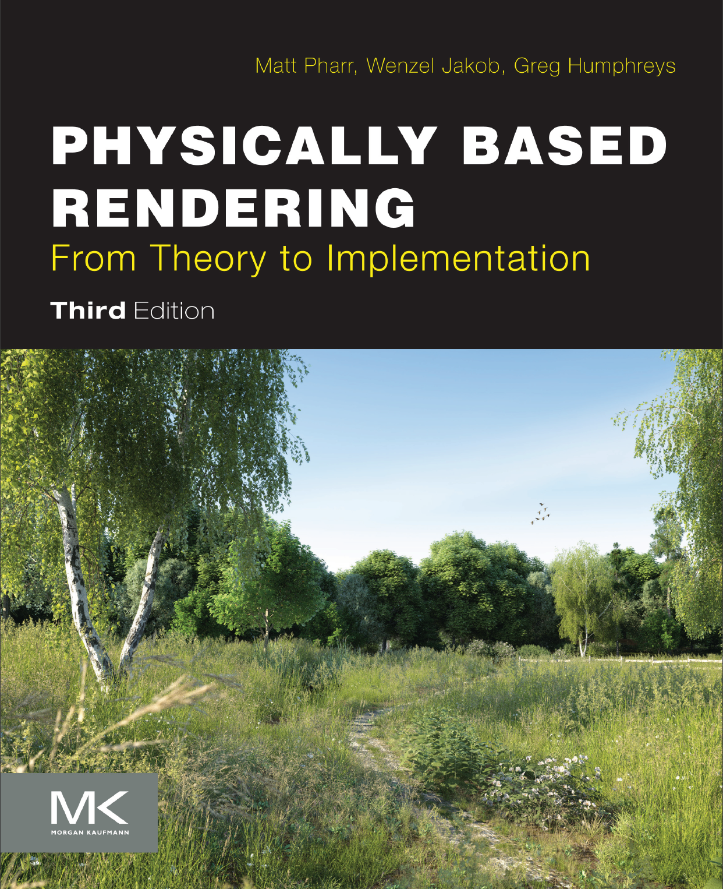
上图：《Physically Based Rendering From Theory to Implementation, 3rd Edition》的封面，总页数1270。
但是，这些资料大多存在一些问题，它们要么太简单太笼统，不能系统全面地介绍PBR的原理和实现；要么太全面太复杂，动辄上千页，对刚踏入PBR技术领域的人不够友好，令人望而却步。
1.2 PBR知识体系
PBR无疑是一种涉及综合性交叉学科的技术，它涉及的技术有：
- 数学：
- 基础数学
- 空间几何
- 线性代数
- 积分和微积分
- 统计学
- 概率论
- 离散数学
- 数学建模
- ...
- 物理：
- 光学
- 能量理论
- 颜色理论
- 成相理论
- 物理材料学
- 原子理论
- 电磁理论
- ...
- 化学：
- 材料学
- 分子学
- 生物：
- 人眼构造
- 视觉系统
- 大脑感光原理
- 计算机图形学：
- 渲染管线
- Shader编码
- 图形API
- GPU硬件架构
- 图像处理
- 色域空间
- ...

知乎牛人毛星云总结出的PBR较完整的知识体系架构图。如果看不清，请点这里。
对于一个刚接触PBR技术的新人，一旦接触到如此庞大的知识体系和如此大量陌生的名词、理论、公式、实现，多半会在PBR的知识体系中迷失，成为难以逾越的鸿沟，产生畏惧心理，从而放弃PBR的学习。
恰好笔者在近期研习了大量PBR相关的资料，有些资料反复观摩了几遍，对于PBR的渐进式学习有了一定的认知。于是萌生了撰写此篇文章的念头，以便让从未接触过PBR的人能循序渐进地学习它、应用它、掌握它、实现它。
1.3 本文内容及特点
本文有以下特点：
- 章节分层，层层递进，承上启下。
- 引入大量精美配图，使PBR教学生动有趣。
- 采用Markdown语法，图文编排更精美和统一。
- 采用表达数学公式。
- 语句精炼，浅显易懂。
- 丰富多样的举例。
- 紧紧围绕PBR的核心原理，避免节外生枝。
本篇文章主要有以下章节内容，分别从不同层次不同侧重点描述了PBR的原理、实现、应用，面向的群体也不一样：
- 初阶：PBR基本认知和应用
- 内容：
- 介绍PBR的概念、历史、应用。
- 面向：
- 初级程序员
- 美术
- 初级TA（技术美术）
- 想初步了解PBR基本认知和应用的人
- 内容：
- 中阶：PBR基本原理和实现
- 内容：
- 介绍PBR的基本原理和商业引擎的实现。
- 面向：
- 中级程序员
- TA
- 想了解PBR实现的人
- 内容：
- 进阶：PBR核心理论和原理
- 内容：
- 深入介绍PBR的核心理论和渲染原理。
- 面向：
- 进阶程序员
- 对PBR底层原理感兴趣的人
- 内容：
- 高阶：PBR关联理论和推导
- 内容：
- 介绍跟PBR核心理论相关的理论原理及推导。
- 面向：
- 高阶程序员
- 想全面且透彻了解PBR底层原理及理论的人
- 内容：
从上面可以看出，每个章节都是承上启下，层层递进地剖析PBR原理及实现，从而达到由浅入深介绍PBR的目的。读者可以根据目前的水平，以及想要了解的程度，有针对性有选择性地阅读不同的章节。其实本文标题更适合取为《分层渐进式学习PBR的原理和实现》，但，还是现在的标题浅显易懂。
需要注意的是，本文将围绕PBR的核心理论做阐述，以实时渲染领域的Cook-Torrance的BRDF光照模型为实现案例。其它旁系理论不在本文探讨的范围，可以查阅其它文献。
二. 初阶：PBR基本认知和应用
本章内容主要介绍PBR的基本概念和衍变历史，以及其在主流商业引擎的应用。
面向的群体：
- 初级程序员
- 美术
- 初级TA（技术美术）
- 想初步了解PBR基本认知和应用的人
2.1 PBR的基本介绍
2.1.1 PBR概念
PBR（Physically Based Rendering）译成中文是基于物理的渲染。它是利用真实世界的原理和理论，通过各种数学方法推导或简化或模拟出一系列渲染方程，并依赖计算机硬件和图形API渲染出拟真画面的技术。
2.1.2 与物理渲染的差别
那它为什么不叫物理渲染（Physical Rendering）呢？
物理渲染（Physical Rendering）是指跟真实世界完全一致的计算机渲染效果。
为了回答这个问题，先了解一下真实世界的成相原理。
真实世界的物体有着各自的材质属性和表面特征，它们受到各种局部灯光和全局环境光的影响，而且它们之间又相互影响，最终这些信息通过光波的形式进入复杂的人眼构造，刺激视神经形成生物信号进入大脑感光皮层，最终让人产生视觉认知。（下图）
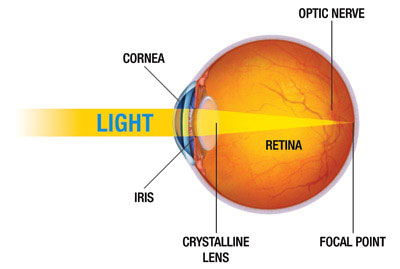
有论文指出，绝大多数人的眼睛可以接收相当于**5亿10亿**个像素的信息量。目前主流的分辨率才百万千万级别，加上显示器亮度范围和屏幕像素间距的限制，远远达不到亿级像素的渲染和亮度表示范围。
基于现阶段的知识水平和硬件水平，还不能渲染跟真实世界完全一致的效果，只能一定程序上模拟接近真实世界的渲染画面，故而叫基于物理的渲染（Physically Based Rendering），而非物理渲染（Physical Rendering）。
2.1.3 PBR的特征
这节阐述的是PBR呈现的效果特征，而非底层物理原理的特征。
相比传统的Lambert着色和Phong着色，PBR着色在效果上有着质的提升，可以表示更多更复杂的材质特征：
- 表面细节
- 物体粗糙度
- 区别明显的金属和绝缘体
- 物体的浑浊程度
- 菲涅尔现象：不同角度有不同强度的反射光
- 半透明物体
- 多层混合材质
- 清漆效果
- 其它更复杂的表面特征
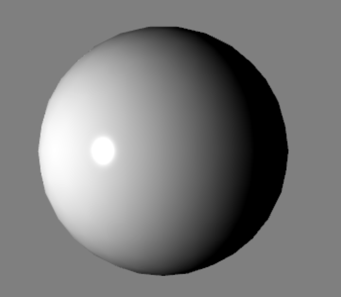
Phong模型着色效果，只能简单地表现理想模型的漫反射和高光，渲染出的效果跟真实世界相差甚远。
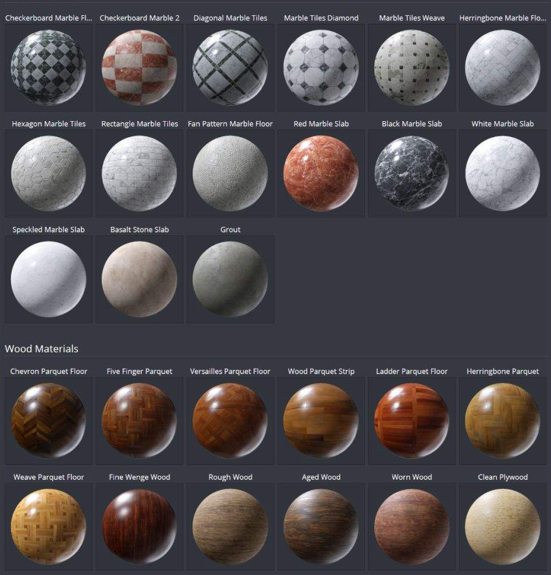
PBR材质效果球，它们真实地渲染出各类材质的粗糙、纹理、高光、清漆、边缘光等等表面细节特征。PBR对渲染效果真实感的提升可见一斑。
2.2 PBR的衍变历史
PBR从最初传统型的Lambert光照发展至今，已经历经200多年，期间发生多次迭代衍变和改进，主流光照模型和分支光照模型也遍地开花。下面按照时间顺序着重对PBR衍变的关键技术节点做阐述。
2.2.1 Lambert（1760年）
Lambert模型是Johann Heinrich Lambert在1760年提出的光照模型。是传统的光照模型。
它计算的是漫反射。漫反射是光源照射到物体表面后，向四面八方反射，产生的反射效果。这是一种理想的漫反射光照模型。
漫反射光的强度近似地服从于Lambert定律，即漫反射光的光强仅与入射光的方向和反射点处表面法向夹角的余弦成正比。
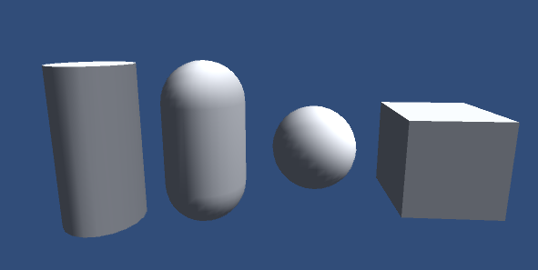
Lambert模型着色效果，模拟了理想环境下的漫反射效果。
2.2.2 Smith（1967年）
Smith将Cook-Torrance的DFG部分的G几何项有效地结合起来，使得几何函数的近似法得到了有效地提升，后面章节将会阐述更多细节。
2.2.3 Phong（1973年）
Phong模型由美国越南裔学者裴祥风（Bùi Tường Phong）发明，于1973年的博士论文首度发表。它也是一种传统的理想的光照模型。
相较Lambert，Phong增加了镜面反射部分，使得物体渲染效果更接近真实世界（下图）。
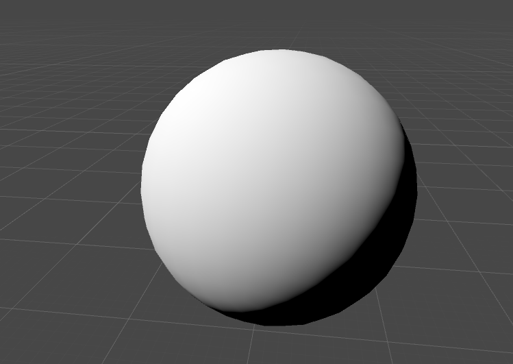
2.2.4 Cook-Torrance（1982年）
Cook-Torrance是Cook和Torrance于1982年联合提出的光反射模型。
该模型考虑在同一景物中不同材料和不同光源的相对亮度。它描述反射光线在方向上的分布和当反射随入射角而改变时颜色的变化，并能求得从具体的实际材料制成的物体反射出来的光线的光谱能量分布，并根据这种光谱能量分布精确地再现颜色。
简而言之，Cook-Torrance增加了几何项G、Fresnel项、粗糙度项D等信息。利用该模型渲染出的图像真实感有了较大跨度的提升。
Cook-Torrance光照模型渲染效果。它较好地渲染出模型的表面特征和光照效果。
2.2.5 Oren Nayarh（1994年）
Lambert模型由于是理想环境下的光照模拟，不能正确体现物体（特别是粗糙物体）表面的光照效果。
Oren Nayarh模型对此做出了改进，主要对粗糙表面的物体建模，比如石膏、沙石、陶瓷等。用了一系列的Lambert微平面，考虑了微小平面之间的相互遮挡（shadowing and masking）和互相反射照明。它能一定程度上模拟真实物体的表面粗糙度，使物体更有质感。
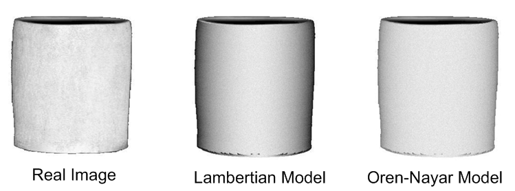
左：真实照片，中：Lambert模型效果，右：Oren Nayarh模型效果
2.2.6 Schlick（1994年）
Schlick模型简化了Phong模型的镜面反射中的指数运算。采用以下公式替代：
它模拟的高光反射效果跟Pow运算基本一致，且效率比Pow运算高。
2.2.7 GGX（2007年）
GGX模型所解决的问题是，如何将微平面反射模型推广到表面粗糙的半透明材质，从而能够模拟类似于毛玻璃的粗糙表面的透射效果。同时，它也提出了一种新的微平面分布函数 。
上图：GGX非常逼真地模拟半透明物体的效果。
虽然它提出时被用于半透明物体的模拟，但它作为一种描述微平面法线方向分布的函数，同样适用于渲染表面粗糙的不透明物体。

GGX同样可以非常逼真地模拟不透明物体的效果
GGX已经广泛应用于各种主流游戏引擎中，同时也是效果最好的。
2.2.8 迪斯尼原则的BRDF（Disney principled BRDF, 2012年)
在SIGGRAPH 2012会议上，工作于迪斯尼动画工作室的Brent Burly演讲了著名的主题：《Physically Based Shading at Disney》。
Brent Burly在SIGGRAPH 2012演讲迪斯尼原则的PBR。
他提出了迪斯尼原则的BRDF（Disney Principled BRDF），奠定了后续游戏行业和电影行业PBR的方向和标准。后续的主流游戏引擎，3D渲染器及动画制作软件大多基于此方案或变种实现的。
迪斯尼原则的PBR渲染出的《无敌破坏王》画面。
迪斯尼原则的BRDF用少量简单易懂的参数和高度完善的美术工作流程，大大简化了此前复杂的PBR的参数和制作流程。它是艺术导向（Art Directable）的着色模型，而不完全是物理正确（Physically Correct）。
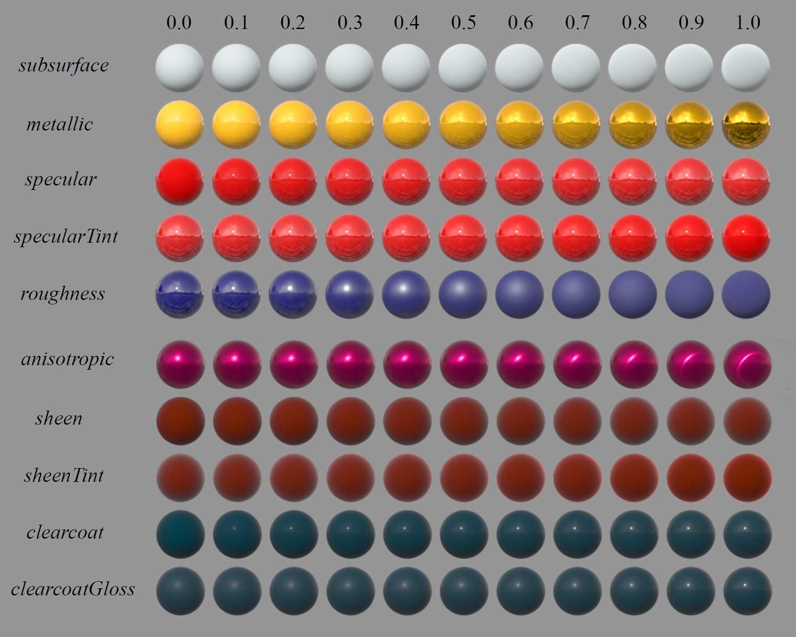
迪斯尼原则的BRDF抽象出的参数。
2.2.9 现阶段的BxDF（2019年）
基于物理的光照模型已经发展了数十年，期间衍生的关键技术和变种技术非常多，它们各有适用场景或解决的各个具体应用场景的问题。
近今年，PBR的技术主要朝着更逼真、更复杂、效能更好的方向，或是结合若干种模型的综合性技术迈进。代表性技术有：
- PBR Diffuse for GGX + Smith (2017)
- MultiScattering Diffuse (2018)
- Layers Material（分层材质）
- Mixed Material（混合材质）
- Mixed BxDF（混合BxDF）
- Advanced Rendering（进阶渲染）
UE4渲染出的虚拟人Siren。综合了分层材质、混合材质、混合BxDF、眼球毛发和皮肤渲染等新兴技术。
虚拟人Siren的皮肤细节。与数码相机摄制的相片如出一辙，逼真程度令人咂舌。如果不特意提醒，很难相信这是游戏引擎实时渲染出来的画面。
2.3 PBR的应用领域
PBR经过长时间的发展，技术上和渲染的效果突飞猛进，是计算机图形学的下一代渲染技术。它在实时渲染和离线渲染领域都有着非常广泛且深入的应用，主要有：
-
电影和动漫。使用PBR技术渲染的真人电影，拟真电影，以及各类动漫电影数量非常多，比如早些年的《阿凡达》《飞屋环游记》，近期的《战斗天使》《流浪地球》《驯龙高手3》等。
电影《阿凡达》的人物画面。
电影《战斗天使》的画面。主角阿丽塔是计算机通过PBR技术渲染出来的虚拟角色，她与真人演员和真实环境无缝地融合在了一起。
电影《流浪地球》的虚拟场景。特效制作公司利用PBR技术模拟出恐怖的身临其境的画面。 -
实时游戏。PBR的身影流传于PC游戏，在线游戏，移动游戏，主机游戏等游戏细分领域。相信接触过游戏的人大多体验过次世代效果的魅力。

PC网游《逆水寒》的角色次世代效果。
移动游戏《绝地求生·刺激战场》的次世代场景。

单机游戏《极品飞车20》的动感瞬间。 -
计算机辅助设计与制造（CAD/CAM）。计算机图形学刚起步时，便应用于此领域，PBR的引入，更加真实地帮助设计人员设计出与实物相差无几的产品。
电路板设计预渲染效果图。
跑车概念设计效果图。
室内家装设计效果图。 -
计算机辅助教学(CAI)。通过逼真的PBR技术，渲染出教学内容所需的虚拟场景，佐以动画技术，使得教学更加形象生动有趣。
-
虚拟现实(VR/AR/MR)。虚拟技术通常需要佩戴眼镜或头盔等显示设备，较多地用于军事，教学，模拟训练，医学等领域。而VR引入PBR技术，能更逼真地模拟现实世界，让参与者身临其境。
Magic Leap制作的VR概念图。 -
科学计算可视化。气象、地震、天体物理、分子生物学、医学等科学领域采用PBR技术将更真实地模拟自然规律，有助于科学家新发现，有助于高校师生教学。
计算机模拟出的DNA双螺旋结构图。
2.4 PBR在游戏引擎的应用
迪斯尼自2012年提出迪斯尼原则的PBR理论后，在游戏和电影界引起轰动，随后各大主流游戏引擎和渲染器及建模软件纷纷实现基于斯尼原则的PBR技术。
下面是主流游戏引擎支持迪斯尼原则的PBR时间表：
- Unreal Engine 4：《Real Shading in Unreal Engine 4》，SIGGRAPH 2013
- Unity 5：《Physically Based Shading in Unity》，GDC 2014
- Frostbite（寒霜）： 《Moving Frostbite to PBR》，SIGGRAPH 2014
- Cry Engine 3.6：《Physically Based Shading in Cry Engine》，2015
UE4和Unity在算法上的实现略有差别，但本章先不讨论算法的实现问题，主要阐述材质上的参数。
2.4.1 Unreal Engine 4的PBR
UE4的PBR相对其它迪斯尼原则的PBR实现，在参数方面做了精简，涉及的参数主要有：
- 基础色（Base Color）：为材质提供基础纹理色，是Vector3（RGB），它们的值都限定在0~1之间。
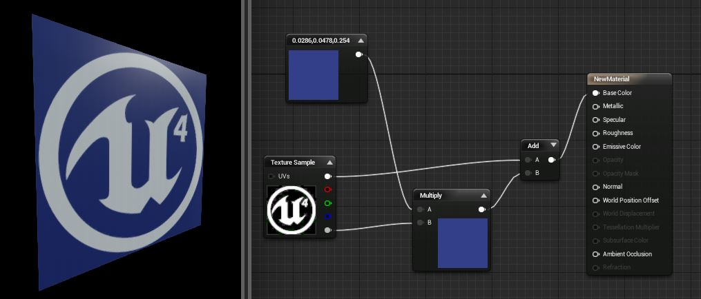
利用UE4的材质编辑器处理Base Color。
下表是经过测量后得出的非金属材质的基础色强度（非金属材质只有单色，即强度）：
| 材质(Material) | 基础色强度(BaseColor Intensity) |
|---|---|
| 木炭(Charcoal) | 0.02 |
| 新沥青(Fresh asphalt) | 0.02 |
| 旧沥青(Worn asphalt) | 0.08 |
| 土壤(Bare soil) | 0.13 |
| 绿草(Green Grass) | 0.21 |
| 沙漠沙(desert sand) | 0.36 |
| 新混泥土(Fresh concrete) | 0.51 |
| 海洋冰(Ocean Ice) | 0.56 |
| 鲜雪(Fresh snow) | 0.81 |
下表是经过测量后得出的金属材质的基础色（R, G, B），是在Linear色域空间的值：
| 材质(Material) | 基础色(BaseColor) |
|---|---|
| 铁(Iron) | (0.560, 0.570, 0.580) |
| 银(Silver) | (0.972, 0.960, 0.915) |
| 铝(Aluminum) | (0.913, 0.921, 0.925) |
| 金(Gold) | (1.000, 0.766, 0.336) |
| 铜(Copper) | (0.955, 0.637, 0.538) |
| 铬(Chromium) | (0.550, 0.556, 0.554) |
| 镍(Nickel) | (0.660, 0.609, 0.526) |
| 钛(Titanium) | (0.542, 0.497, 0.449) |
| 钴(Cobalt) | (0.662, 0.655, 0.634) |
| 铂(Platinum) | (0.672, 0.637, 0.585) |
-
粗糙度（Roughness）：表示材质表面的粗糙程度，值限定在0~1之间。越粗糙材质高光反射越不明显，金属和非金属的粗糙度有所区别。
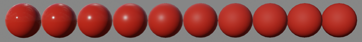
上：非金属材质随粗造度从0-1变化而渐变的图，下：金属材质随粗造度从0-1变化而渐变的图。 -
金属度（Metallic）：表示材质像金属的程度，0是电介质（绝缘体），1是金属。金属没有漫反射，只有镜面反射。

金属度从0~1的变化图。 -
镜面度（Specular）：表示材质的镜面反射强度，从0（完全无镜面反射）~1（完全镜面反射。UE4的默认值是0.5。万物皆有光泽（镜面反射），对于强漫反射的材质，可通过调节粗糙度，而不应该将镜面度调成0。
镜面度从0~1的变化图。
下表是UE4给出的部分材质镜面度参考值：
| 材质(Material) | 镜面度(Specular) |
|---|---|
| 草(Glass) | 0.500 |
| 塑料(Plastic) | 0.500 |
| 石英(Quartz) | 0.570 |
| 冰(Ice) | 0.224 |
| 水(Water) | 0.255 |
| 牛奶(Milk) | 0.277 |
| 皮肤(Skin) | 0.350 |
UE4模拟的部分材质效果见下图。
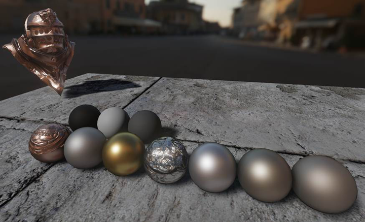
上排从左到右：木炭、生混凝土、旧沥青；下排从左到右：铜、铁、金、铝、银、镍、钛。
2.4.2 Unity的PBR
Unity的PBR已经纳入内建的标准着色器（Standard Shader），它的实现准则是用户友好的（user-friendly），故而在材质编辑器里呈现给用户是有限的参数，而且跟传统的各类贴图信息统一在了一起。
Unity内部实现机制遵循了PBR的基本准则，支持金属度，表面粗糙度，能量守恒，菲涅尔反射，表面阴影遮蔽等特性。
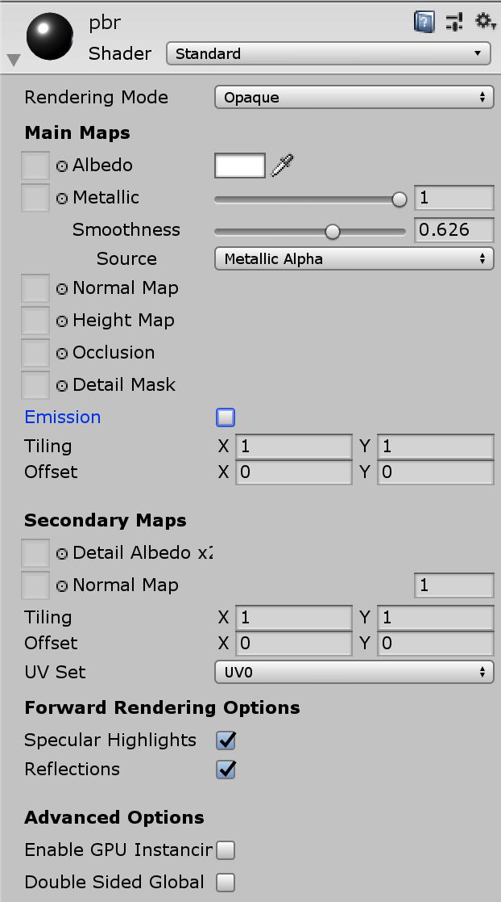
Unity的Standard Shader编辑界面。
其中跟PBR相关的参数：
- Albedo：基础色，相当于UE4的Base Color。可用纹理贴图指定，也可用一个颜色值代替。
- Metallic：金属度，意义跟UE4的一致。但它可以用金属贴图代替，此时Smoothness参数会消失。
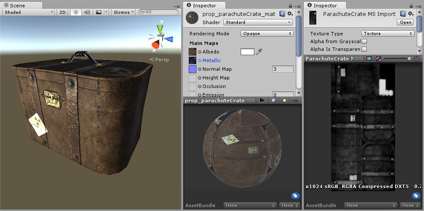
Unity指定了Metallic贴图后的效果，Smoothness参数消失。 - Smoothness：光滑度，跟UE的粗糙度取值刚好相反，但都是表示材质表面的粗糙程度。
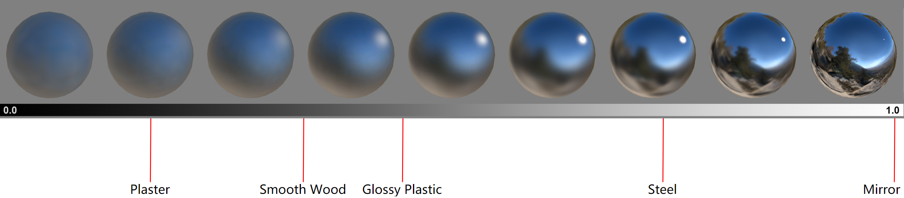
Unity的Smoothness参数从0~1的变化。- Smoothness Source：指定存储光滑度数据的纹理通道，可选择金属度、镜面贴图的Alpha通道或基础色贴图的Alpha通道。
- Occlusion：遮蔽图。用于指定材质接受间接光（如环境光）的光照强度和反射强度。
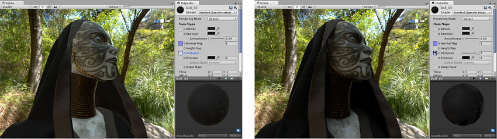
Unity中使用遮蔽图为人物阴暗面（脸部，脖子）屏蔽环境光的影响。 - Fresnel：随着物体表面法线与视线的角度增大，物体的反射能力增大，这种现象称之为菲涅尔效应。在Unity中，无法直接调节菲涅尔效应的参数，但内部实现机制会自动处理。越光滑的表面具有越强的菲涅尔效应，相反，越粗糙的表面具有越弱的菲涅尔效应。
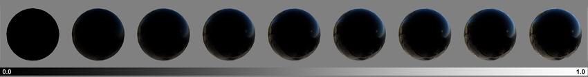
上图展示了菲涅尔效应从弱到强的渐变。
三. 中阶：PBR基本原理和实现
上章主要介绍了PBR的历史和逼真的效果特征。这章将重点介绍PBR的核心部分的基本原理及主流的实现方案，使读者对PBR的核心理论有一定了解，并能掌握相关的编码。
主要面向：
- 中级程序员
- TA
- 想了解PBR基本原理和实现的人
在分析比较了大量资料之后，本章选取了LearnOpenGL的PBR教程作为依托，阐述PBR的基本原理和实现。
3.1 PBR基础理论和推导
本节的理论和推导尽量简化和精简，更深入的原理和理论将在下一章阐述。
满足以下条件的光照模型才能称之为PBR光照模型：
- 基于微平面模型（Be based on the microfacet surface model）。
- 能量守恒（Be energy conserving）。
- 使用基于物理的BRDF（Use a physically based BRDF）。
3.1.1 微平面（Microfacet）
大多数PBR技术都是基于微平面理论。在此理论下，认为在微观上所有材质表面都是由很多朝向不一的微小平面组成，有的材质表面光滑一些，有的粗糙一些。
真实世界的物体表面不一定是很多微小平面组成，也可能是带有弧度或者坑坑洼洼。但对于我们肉眼能观察到的维度，PBR的微观近似模拟方法产生的结果跟实际差别甚微。
所有材质表面由粗糙度不同的微小平面组成。左边材质更粗糙，右边的平滑一些。
当光线射入这些微平面后，通常会产生镜面反射。对于越粗糙的表面，由于其朝向更无序，反射的光线更杂乱，反之，平滑的微平面，反射的光线更平齐。

上图左边材质表面更粗糙，反射的光线更杂乱；图右的平滑许多，反射的光线更有规律。
从微观角度来说，没有任何表面是完全光滑的。由于这些微平面已经微小到无法逐像素地继续对其进行细分，因此我们只有假设一个粗糙度(Roughness，即2.4.1中提到的粗糙度)参数，然后用统计学的方法来概略的估算微平面的粗糙程度。
我们可以基于一个平面的粗糙度来计算出某个向量的方向与微平面平均取向方向一致的概率。这个向量便是位于光线向量和视线向量之间的中间向量，被称为半角向量(Halfway Vector)。
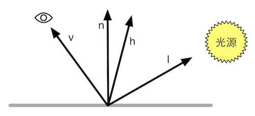
半角向量是视线和入射光的中间单位向量。
半角向量计算公式如下：
半角向量计算GLSL实现:
// lightPos是光源位置，viewPos是摄像机位置，FragPos是像素位置
vec3 lightDir = normalize(lightPos - FragPos);
vec3 viewDir = normalize(viewPos - FragPos);
vec3 halfwayDir = normalize(lightDir + viewDir);
越多的微平面取向与其半角向量一致，材质镜面反射越强越锐利。加上引入取值0~1的粗糙度，可以大致模拟微平面的整体取向。

粗糙度从0.1~1.0的变化图。粗糙度越小，镜面反射越亮范围越小；粗糙度越大，镜面反射越弱。
3.1.2 能量守恒（Energy Conservation）
在微平面理论中，采用近似的能量守恒：出射光的总能量不超过入射光的总能量（自发光材质除外）。3.1.1的粗糙度变化图可以看出，材质粗糙度越大，反射的范围越大，但整体亮度变暗。
那么PBR是如何实现近似的能量守恒呢？
为了回答这个问题，先弄清楚镜面反射（specular）和漫反射（diffuse）的区别。
一束光照到材质表面上，通常会分成反射（reflection）部分和折射（refraction）部分。反射部分直接从表面反射出去，而不进入物体内部，由此产生了镜面反射光。折射部分会进入物体内部，被吸收或者散射产生漫反射。
折射进物体内部的光如果没有被立即吸收，将会持续前进，与物体内部的微粒产生碰撞，每次碰撞有一部分能量损耗转化成热能，直至光线能量全部消耗。有些折射光线在跟微粒发生若干次碰撞之后，从物体表面射出，便会形成漫反射光。

照射在平面的光被分成镜面反射和折射光，折射光在跟物体微粒发生若干次碰撞之后，有可能发射出表面，成为漫反射。
通常情况下，PBR会简化折射光，将平面上所有折射光都视为被完全吸收而不会散开。而有一些被称为次表面散射(Subsurface Scattering)技术的着色器技术会计算折射光散开后的模拟，它们可以显著提升一些材质（如皮肤、大理石或蜡质）的视觉效果，不过性能也会随着下降。
金属(Metallic)材质会立即吸收所有折射光，故而金属只有镜面反射，而没有折射光引起的漫反射。
回到能量守恒话题。反射光与折射光它们二者之间是互斥的，被表面反射出去的光无法再被材质吸收。故而，进入材质内部的折射光就是入射光减去反射光后余下的能量。
根据上面的能量守恒关系，可以先计算镜面反射部分，此部分等于入射光线被反射的能量所占的百分比。而折射部分可以由镜面反射部分计算得出。
float kS = calculateSpecularComponent(...); // 反射/镜面部分
float kD = 1.0 - kS; // 折射/漫反射部分
通过以上代码可以看出，镜面反射部分与漫反射部分的和肯定不会超过1.0，从而近似达到能量守恒的目的。
3.1.3 反射方程（Reflectance Equation）
渲染方程(Render Equation)是用来模拟光的视觉效果最好的模型。而PBR的渲染方程是用以抽象地描述PBR光照计算过程的特化版本的渲染方程，被称为反射方程。
PBR的反射方程可抽象成下面的形式：
反射方程看似很复杂，但如果拆分各个部分加以解析，就可以揭开其神秘的面纱。
为了更好地理解反射方程，先了解辐射度量学(Radiometry)。辐射度量学是一种用来度量电磁场辐射（包括可见光）的手段。有很多种辐射度量(radiometric quantities)可以用来测量曲面或者某个方向上的光，此处只讨论和反射方程有关的一种量，它就是辐射率(Radiance)，用来表示。
先用一个表展示辐射度量学涉及的概念、名词、公式等信息，后面会更加详细地介绍。
| 名称 | 符号 | 单位 | 公式 | 解析 |
|---|---|---|---|---|
| 辐射能量(Radiant energy) | 焦耳() | - | 电磁辐射能量 | |
| 辐射通量(Radiant Flux) | 瓦() | 单位时间辐射的能量，也叫辐射功率(Radiant Power)或通量(Flux) | ||
| 辐照度(Irradiance) | 瓦/平方米() | 到达单位面积的辐射通量 | ||
| 辐射度(Radiosity) | 瓦/平方米() | 离开单位面积的辐射通量，也叫辐出度、辐射出射度（Radiant Existance） | ||
| 辐射强度(Radiant Intensity) | 瓦/立体弧度() | 通过单位立体角的辐射通量 | ||
| 辐射率(Radiance) | 瓦/平方米立体弧度() | 通过单位面积单位立体角的辐射通量 | ||
| 立体角(Solid Angle) | 立体弧度，球面度（） | 是二维弧度在三维的扩展，1球面度等于单位球体的表面面积 |
辐射率被用来量化单一方向上发射来的光线的大小或者强度。辐射率是由多个物理变量集合而成的，它涉及的物理变量有以下几种：
-
辐射通量(Radiant Flux)：辐射通量用符号表示，表示一个光源输出的能量，以瓦特为单位。光是由多种不同波长的能量集合而成，每种波长与一种特定的（可见的）颜色相关。因此一个光源所放射出来的能量可以被视作这个光源包含的所有各种波长的一个函数。波长介于390nm（纳米）到700nm的光被认为是处于可见光光谱中，也就是说它们是人眼可见的波长。

上图展示了太阳光中不同波长的光所具有的能量。
传统物理学上的辐射通量将会计算这个由不同波长构成的函数的总面积，这种计算很复杂，耗费大量性能。在PBR技术中，不直接使用波长的强度，而是使用三原色编码（RGB）来简化辐射通量的计算。虽然这种简化会带来一些信息上的损失，但是这对于视觉效果上的影响基本可以忽略。 -
立体角(Solid Angle)：用符号表示，它描述投射到单位球体上的一个截面的大小或者面积。可以把立体角想象成为一个带有体积的方向：

更加形象地描述：观察者站在单位球面的中心，向着投影的方向看，在单位球体面上的投影轮廓的大小就是立体角。 -
辐射强度(Radiant Intensity)：用符号表示，它描述的是在单位球面上，一个光源向每单位立体角所投送的辐射通量。举个例子，假设一个点光源向所有方向均匀地辐射能量，辐射强度就能计算出它在一个单位面积（立体角）内的能量大小：
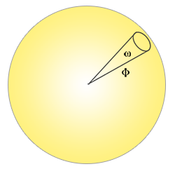
计算辐射强度的公式：
其中表示辐射通量除以立体角的辐射强度。
理解以上物理变量后，可以继续讨论辐射率方程了。下面方程代表的意义是：一个辐射强度为的光通过立体角辐射在区域的可被观察到的总能量。
笔者注：原文的公式是，经推导之后，并没有平方。

辐射率是一个区域内光照量的辐射学度量，按照光的入射（或者来源）角与平面法线的夹角计算。越是斜着照射在平面上光越弱，反之越是垂直照射在表面上的光越强，类似基础光照中的漫反射颜色计算，直接等于光的方向和表面法线的点积。
float cosTheta = dot(lightDir, N);
上面的物理符号似乎和PBR的反射方程没有直接的关系。但是，如果将立体角跟区域都看作无限小，就可以使用辐射率来分析一束光线打在空间上一个点的通量，也就是说能够计算单束光线对单个（片元）点的辐射率影响。进一步地，将立体角转化为方向向量，将区域转化成点，因此在shader中直接使用辐射率来计算单束光线对每个片元的贡献。
实际上，当谈及光的辐射率时，通常只关注的是所有射入点的光线，这些光的辐射度总和称为辐照度(Irradiance)。理解了辐射率和辐照度，回到反射方程：
渲染方程式中代表某个点的辐射率，而无限小的入射光的立体角可以看作入射光方向向量，将用来衡量入射光与平面法线夹角对能量的影响的分量移出辐射率方程，作为反射方程的单独项 。
反射方程计算了点在所有视线方向上被反射出来的辐射率的总和。换言之：计算的是在方向的眼睛观察到的点的总辐照度。
反射方程里面使用的辐照度，必须要包含所有以点为中心的半球内的入射光，而不单单只是某一个方向的入射光。这个半球指的是围绕面法线的那一个半球：

笔者注：为什么只计算半球而不计算整个球体呢？
因为另外一边的半球因与视线方向相反，不能被观察，也就是辐射通量贡献量为0，所以被忽略。
为了计算这个区域（半球）内的所有值，在反射方程中使用了一个称作为积分的数学符号 ，来计算半球内所有的入射向量。
积分计算面积的方法，有解析(analytically)和渐近(numerically)两种方法。目前尚没有可以满足渲染计算的解析法，所以只能选择离散渐近法来解决这个积分问题。
具体做法是在半球按一定的步长将反射方程离散地求解，然后再按照步长大小将所得到的结果平均化，这种方法被称为黎曼和(Riemann sum)。下面是实现的伪代码：
int steps = 100; // 分段计算的数量，数量越多，计算结果越准确。
float dW = 1.0f / steps;
vec3 P = ...;
vec3 Wo = ...;
vec3 N = ...;
float sum = 0.0f;
for(int i = 0; i < steps; ++i)
{
vec3 Wi = getNextIncomingLightDir(i);
sum += Fr(P, Wi, Wo) * L(P, Wi) * dot(N, Wi) * dW;
}
dW的值越小结果越接近正确的积分函数的面积或者说体积，衡量离散步长的dW可以看作反射方程中的。积分计算中我们用到的是线性连续的符号，跟代码中的dW并没有直接关系，但是这种方式有助于我们理解，而且这种离散渐近的计算方法总是可以得到一个很接近正确结果的值。值得一提的是，通过增加步骤数steps可以提高黎曼和的准确性，但计算量也会增大。
反射方程加了所有的，以各个方向射入半球并打中点的入射光，经过反射函数进入观察者眼睛的所有反射光的辐射率之和。入射光辐射度可以由光源处获得，此外还可以利用一个环境贴图来测算所有入射方向上的辐射度。
至此，反射方程中，只剩下项未描述。就是双向反射分布函数(Bidirectional Reflectance Distribution Function, BRDF)，它的作用是基于表面材质属性来对入射辐射度进行缩放或者加权。
3.1.4 双向反射分布函数（BRDF）
双向反射分布函数（Bidirectional Reflectance Distribution Function，BRDF）是一个使用入射光方向作为输入参数的函数，输出参数为出射光，表面法线为，参数表示的是微平面的粗糙度。
BRDF函数是近似的计算在一个给定了属性的不透明表面上每个单独的光线对最终的反射光的贡献量。假如表面是绝对光滑的（比如镜子），对于所有入射光的BRDF函数都将会返回0.0，除非出射光线方向的角度跟入射光线方向的角度以面法线为中轴线完全对称，则返回1.0。
BRDF对于材质的反射和折射属性的模拟基于之前讨论过的微平面理论，想要BRDF在物理上是合理的，就必须遵守能量守恒定律。比如反射光能量总和永远不应该超过入射光。技术上来说，Blinn-Phong光照模型跟BRDF一样使用了跟作为输入参数，但是没有像基于物理的渲染这样严格地遵守能量守恒定律。
BRDF有好几种模拟表面光照的算法，然而，基本上所有的实时渲染管线使用的都是Cook-Torrance BRDF。
Cook-Torrance BRDF分为漫反射和镜面反射两个部分：
其中是入射光中被折射的比例，是另外一部分被镜面反射的入射光。BRDF等式左边的表示的是漫反射部分，这部分叫做伦勃朗漫反射（Lambertian Diffuse）。它类似于我们之前的漫反射着色，是一个恒定的算式：
其中代表的是Albedo或表面颜色，类似漫反射表面纹理。除以是为了规格化漫反射光，为后期的BRDF积分做准备。
此处的伦勃朗漫反射跟以前用的漫反射之间的关系：以前的漫反射是用表面的漫反射颜色乘以法线与面法线的点积，这个点积依然存在，只不过是被移到了BRDF外面，写作，放在反射方程靠后的位置。
BRDF的高光（镜面反射）部分更复杂：
Cook-Torrance镜面反射BRDF由3个函数（，，）和一个标准化因子构成。，，符号各自近似模拟了特定部分的表面反射属性：
- (Normal Distribution Function，NDF)：法线分布函数，估算在受到表面粗糙度的影响下，取向方向与中间向量一致的微平面的数量。这是用来估算微平面的主要函数。
- (Fresnel equation)：菲涅尔方程，描述的是在不同的表面角下表面反射的光线所占的比率。
- (Geometry function)：几何函数，描述了微平面自成阴影的属性。当一个平面相对比较粗糙的时候，平面表面上的微平面有可能挡住其他的微平面从而减少表面所反射的光线。
以上的每一种函数都是用来估算相应的物理参数的，而且你会发现用来实现相应物理机制的每种函数都有不止一种形式。它们有的非常真实，有的则性能高效。你可以按照自己的需求任意选择自己想要的函数的实现方法。
Epic Games公司的Brian Karis对于这些函数的多种近似实现方式进行了大量的研究。这里将采用Epic Games在Unreal Engine 4中所使用的函数，其中使用Trowbridge-Reitz GGX，使用Fresnel-Schlick近似法(Approximation)，而使用Smith's Schlick-GGX。
3.1.4.1 (Normal Distribution Function，NDF)
法线分布函数，从统计学上近似的表示了与某些（如中间）向量取向一致的微平面的比率。
目前有很多种NDF都可以从统计学上来估算微平面的总体取向度，只要给定一些粗糙度的参数以及一个我们马上将会要用到的参数Trowbridge-Reitz GGX（GGXTR）：
这里的是用来测量微平面的半角向量，是表面的粗糙度，是表面法线。 如果将放到表面法线和光线方向之间，并使用不同的粗糙度作为参数，可以得到下面的效果：
当粗糙度很低（表面很光滑）时，与中间向量取向一致的微平面会高度集中在一个很小的半径范围内。由于这种集中性，NDF最终会生成一个非常明亮的斑点。但是当表面比较粗糙的时候，微平面的取向方向会更加的随机，与向量取向一致的微平面分布在一个大得多的半径范围内，但是较低的集中性也会让最终效果显得更加灰暗。
Trowbridge-Reitz GGX的NDF实现代码：
float DistributionGGX(vec3 N, vec3 H, float a)
{
float a2 = a*a;
float NdotH = max(dot(N, H), 0.0);
float NdotH2 = NdotH*NdotH;
float nom = a2;
float denom = (NdotH2 * (a2 - 1.0) + 1.0);
denom = PI * denom * denom;
return nom / denom;
}
3.1.4.2 (Fresnel equation)
菲涅尔方程定义的是在不同观察方向上，表面上被反射的光除以被折射的光的比例。在一束光击中了表面的一瞬间，菲涅尔根据表面与观察方向之间的夹角，计算得到光被反射的百分比。根据这个比例和能量守恒定律我们可以直接知道剩余的能量就是会被折射的能量。
当我们垂直观察每个表面或者材质时都有一个基础反射率，当我们以任意一个角度观察表面时所有的反射现象都会变得更明显（反射率高于基础反射率）。你可以从你身边的任意一件物体上观察到这个现象，当你以90度角观察你的桌子你会法线反射现象将会变得更加的明显，理论上以完美的90度观察任意材质的表面都应该会出现全反射现象（所有物体、材质都有菲涅尔现象）。
菲涅尔方程同样是个复杂的方程，但是幸运的是菲涅尔方程可以使用Fresnel-Schlick来近似：
表示的是表面基础反射率，这个我们可以使用一种叫做Indices of refraction(IOR)的方法计算得到。运用在球面上的效果就是你看到的那样，观察方向越是接近掠射角（grazing angle，又叫切线角，与正视角相差90度），菲涅尔现象导致的反射就越强：

菲涅尔方程中有几个微妙的地方，一个是Fresnel-Schlick算法仅仅是为电介质（绝缘体）表面定义的算法。对于金属表面，使用电介质的折射率来计算基础反射率是不合适的，我们需要用别的菲涅尔方程来计算。对于这个问题，我们需要预先计算表面在正视角(即以0度角正视表面)下的反应（），然后就可以跟之前的Fresnel-Schlick算法一样，根据观察角度来进行插值。这样我们就可以用一个方程同时计算金属和电介质了。
表面在正视角下的反映或者说基础反射率可以在这个数据库中找到，下面是Naty Hoffman的在SIGGRAPH公开课中列举的一些常见材质的值：
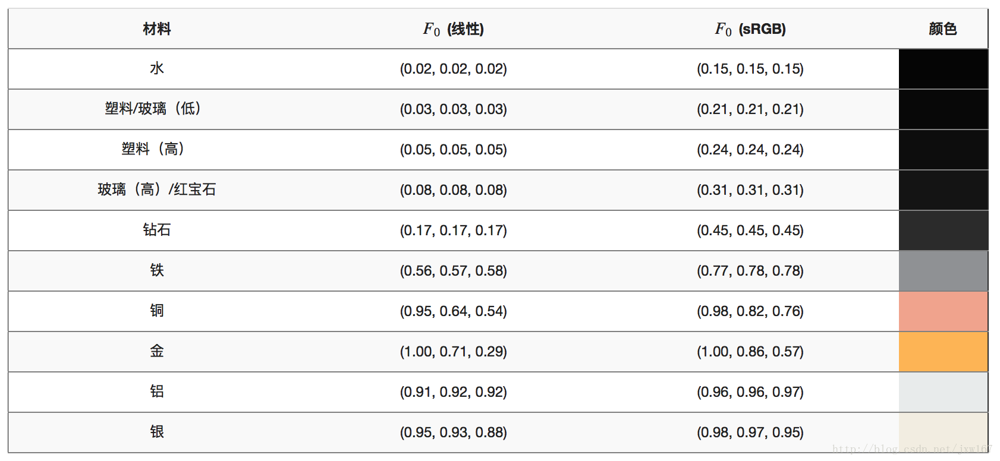
这里可以观察到的一个有趣的现象，所有电介质材质表面的基础反射率都不会高于0.17，这其实是例外而非普遍情况。导体材质表面的基础反射率起点更高一些并且（大多）在0.5和1.0之间变化。此外，对于导体或者金属表面而言基础反射率一般是带有色彩的，这也是为什么要用RGB三原色来表示的原因（法向入射的反射率可随波长不同而不同）。这种现象我们只能在金属表面观察的到。
金属表面这些和电介质表面相比所独有的特性引出了所谓的金属工作流的概念。也就是我们需要额外使用一个被称为金属度(Metalness)的参数来参与编写表面材质。金属度用来描述一个材质表面是金属还是非金属的。
通过预先计算电介质与导体的值，我们可以对两种类型的表面使用相同的Fresnel-Schlick近似，但是如果是金属表面的话就需要对基础反射率添加色彩。我们一般是按下面这个样子来实现的：
vec3 F0 = vec3(0.04);
F0 = mix(F0, surfaceColor.rgb, metalness);
我们为大多数电介质表面定义了一个近似的基础反射率。取最常见的电解质表面的平均值，这又是一个近似值。不过对于大多数电介质表面而言使用0.04作为基础反射率已经足够好了，而且可以在不需要输入额外表面参数的情况下得到物理可信的结果。然后，基于金属表面特性，我们要么使用电介质的基础反射率要么就使用作来为表面颜色。因为金属表面会吸收所有折射光线而没有漫反射，所以我们可以直接使用表面颜色纹理来作为它们的基础反射率。
Fresnel Schlick近似可以用GLSL代码实现：
vec3 fresnelSchlick(float cosTheta, vec3 F0)
{
return F0 + (1.0 - F0) * pow(1.0 - cosTheta, 5.0);
}
其中cosTheta是表面法向量与观察方向的点乘的结果。
3.1.4.3 (Geometry function)
几何函数模拟微平面相互遮挡导致光线的能量减少或丢失的现象。

类似NDF，几何函数也使用粗糙度作为输入参数，更粗糙意味着微平面产生自阴影的概率更高。几何函数使用由GGX和Schlick-Beckmann组合而成的模拟函数Schlick-GGX：
这里的是使用粗糙度计算而来的，用于直接光照和IBL光照的几何函数的参数：
需要注意的是这里的值取决于你的引擎怎么将粗糙度转化成，在接下来的教程中我们将会进一步讨论如何和在什么地方进行这个转换。
为了有效地模拟几何体，我们需要同时考虑两个视角，视线方向（几何遮挡）跟光线方向（几何阴影），我们可以用Smith函数将两部分放到一起：
其中表示视线向量，表示视线方向的几何遮挡；表示光线向量，表示光线方向的几何阴影。使用Smith函数与Schlick-GGX作为可以得到如下所示不同粗糙度R的视觉效果：

几何函数是一个值域为[0.0, 1.0]的乘数，其中白色(1.0)表示没有微平面阴影，而黑色(0.0)则表示微平面彻底被遮蔽。
使用GLSL编写的几何函数代码如下：
float GeometrySchlickGGX(float NdotV, float k)
{
float nom = NdotV;
float denom = NdotV * (1.0 - k) + k;
return nom / denom;
}
float GeometrySmith(vec3 N, vec3 V, vec3 L, float k)
{
float NdotV = max(dot(N, V), 0.0);
float NdotL = max(dot(N, L), 0.0);
float ggx1 = GeometrySchlickGGX(NdotV, k); // 视线方向的几何遮挡
float ggx2 = GeometrySchlickGGX(NdotL, k); // 光线方向的几何阴影
return ggx1 * ggx2;
}
3.1.4.4 Cook-Torrance反射方程(Cook-Torrance reflectance equation)
Cook-Torrance反射方程中的每一个部分我们我们都用基于物理的BRDF替换，可以得到最终的反射方程：
上面的方程并非完全数学意义上的正确。前面提到菲涅尔项代表光在表面的反射比率，它直接影响因子，意味着反射方程的镜面反射部分已经隐含了因子。因此，最终的Cook-Torrance反射方程如下（去掉了）：
这个方程完整地定义了一个基于物理的渲染模型，也就是我们一般所说的基于物理的渲染（PBR）。
3.1.5 制作PBR材质
对PBR数学模型有了基本了解之后，我们最后要讨论的是美工应该生成怎样的材质属性，让我们可以直接用在PBR渲染管线里。PBR管线中需要的所有材质参数都可以使用纹理来定义或者模拟，使用纹理我们可以逐像素控制制定的面如何跟光线交互：这个点是否是金属，粗糙度如何又或者表面对不同波长的光有什么反映。
下面是在PBR渲染管线中经常用到的纹理：

下面的参数跟2.4 PBR在游戏引擎的应用描述的很多参数基本一致。
-
反射率（Albedo）：反射率纹理指定了材质表面每个像素的颜色，如果材质是金属那纹理包含的就是基础反射率。这个跟我们之前用过的漫反射纹理非常的类似，但是不包含任何光照信息。漫反射纹理通常会有轻微的阴影和较暗的裂缝，这些在Albedo贴图里面都不应该出现，仅仅只包含材质的颜色（金属材质是基础反射率）。
-
法线（Normal）：法线纹理跟我们之前使用的是完全一样的。法线贴图可以逐像素指定表面法线，让平坦的表面也能渲染出凹凸不平的视觉效果。
-
金属度（Metallic）：金属度贴图逐像素的指定表面是金属还是电介质。根据PBR引擎各自的设定，金属程度即可以是[0.0，1.0]区间的浮点值也可以是非0即1的布尔值。
-
粗糙度（Roughness）：粗糙度贴图逐像素的指定了表面有多粗糙，粗糙度的值影响了材质表面的微平面的平均朝向，粗糙的表面上反射效果更大更模糊，光滑的表面更亮更清晰。有些PBR引擎用光滑度贴图替代粗糙度贴图，因为他们觉得光滑度贴图更直观，将采样出来的光滑度使用（1-光滑度）= 粗糙度 就能转换成粗糙度了。
-
环境光遮挡（Ambient Occlusion，AO）：AO贴图为材质表面和几何体周边可能的位置，提供了额外的阴影效果。比如有一面砖墙，在两块砖之间的缝隙里Albedo贴图包含的应该是没有阴影的颜色信息，而让AO贴图来指定这一块需要更暗一些，这个地方光线更难照射到。AO贴图在光照计算的最后一步使用可以显著的提高渲染效果，模型或者材质的AO贴图一般是在建模阶段手动生成的。
美术可以直接根据物体在真实世界里的物理属性，来设置和调整用于渲染的基于物理的材质。
基于物理的渲染管线最大的优势在于，材质的物理属性是不变的，无论环境光怎么样设置都能得到一个接近真实的渲染结果，这让美术的人生都变得美好了。
基于物理管线的材质可以很简单的移植到不同的渲染引擎，不管光照环境如何都能正确的渲染出一个自然的结果。
3.2 PBR的光照实现
3.1章节阐述了Cook-Torrance反射方程的理论和公式意义。这节将探讨如何将前面讲到的理论转化成一个基于直接光照的渲染器：比如点光源，方向光和聚光灯。
3.2.1 辐照度计算
3.1章节解释了Cook-Torrance反射方程的大部分含义，但有一点未提及：具体要怎么处理场景中的辐照度（Irradiance，也就是辐射的总能量）？在计算机领域，场景的辐射率度量的是来自光源光线的辐射通量穿过指定的立体角，在这里我们假设立体角无限小，小到辐射度衡量的是光源射出的一束经过指定方向向量的光线的通量。
有了这个假设，我们又要怎么将之融合到之前教程讲的光照计算里去呢？想象我们有一个辐射通量以RGB表示为（23.47, 21.31, 20.79）的点光源，这个光源的辐射强度等于辐射通量除以所有出射方向。当为平面上某个特定的点着色的时候，所有可能的入射光方向都会经过半球，但只有一个入射方向是直接来自点光源的，又因为我们的场景中只包含有一个光源，且这个光源只是一个点，所以点所有其它的入射光方向的辐射率都应该是0.

如果我们暂时不考虑点光源的距离衰减问题，且无论光源放在什么地方入射光线的辐射率都一样大（忽略入射光角度对辐射度的影响），又因为点光源朝各个方向的辐射强度都是一样的，那么有效的辐射强度就跟辐射通量完全一样：恒定值（23.47, 21.31, 20.79）。
然而，辐射率需要使用位置作为输入参数，因为现实中的灯光根据点和光源之间距离的不同，辐射强度多少都会有一定的衰减。另外，从原始的辐射方程中我们可以发现，面法线于入射光方向向量的点积也会影响结果。
用更精炼的话来描述：在点光源直接光照的情况里，辐射率函数计算的是灯光颜色，经过到点距离的衰减之后，再经过缩放。能击中点的光线方向就是从点看向光源的方向。把这些写成代码：
vec3 lightColor = vec3(23.47, 21.31, 20.79);
vec3 wi = normalize(lightPos - fragPos);
float cosTheta = max(dot(N, Wi), 0.0);
// 计算光源在点fragPos的衰减系数
float attenuation = calculateAttenuation(fragPos, lightPos);
// 英文原版的radiance类型有误，将它改成了vec3
vec3 radiance = lightColor * (attenuation * cosTheta);
你应该非常非常熟悉这段代码：这就是以前我们计算漫反射光的算法！在只有单光源直接光照的情况下，辐射率的计算方法跟我们以前的光照算法是类似的。
要注意我们这里假设点光源无限小，只是空间中的一个点。如果我们使用有体积的光源模型，那么就有很多的入射光方向的辐射率是非0的。
对那些基于点的其他类型光源我们可以用类似的方法计算辐射率，比如平行光源的入射角的恒定的且没有衰减因子，聚光灯没有一个固定的辐射强度，而是围绕一个正前方向量来进行缩放的。
这也将我们带回了在表面半球的积分。我们知道，多个单一位置的光源对同一个表面的同一个点进行光照着色并不需要用到积分，我们可以直接拿出这些数目已知的光源来，分别计算这些光源的辐照度后再加到一起，毕竟每个光源只有一束方向光能影响物体表面的辐射率。这样只需要通过相对简单的循环计算每个光源的贡献就能完成整个PBR光照计算。当我们需要使用IBL将环境光加入计算的时候我们才会需要用到积分，因为环境光可能来自任何方向。
3.2.2 PBR表面模型（ PBR surface model）
我们先从写一个能满足前面讲到的PBR模型的片源着色器开始。首先，我们需要将表面的PBR相关属性输入着色器：
#version 330 core
out vec4 FragColor;
in vec2 TexCoords;
in vec3 WorldPos;
in vec3 Normal;
uniform vec3 camPos;
uniform vec3 albedo;
uniform float metallic;
uniform float roughness;
uniform float ao;
我们能从顶点着色器拿到常见的输入，另外一些是物体表面的材质属性。
在片源着色器开始的时候，我们先要做一些所有光照算法都需要做的计算：
void main()
{
vec3 N = normalize(Normal);
vec3 V = normalize(camPos - WorldPos);
[...]
}
3.2.2.1 直接光照（Direct lighting）
在这个教程的示例中，我们将会有4个点光源作为场景辐照度来源。为了满足反射方程我们循环处理每一个光源，计算它独自的辐射率，然后加总经过BRDF跟入射角缩放的结果。我们可以把这个循环当作是积分运算的一种实现方案。首先，计算每个光源各自相关参数：
vec3 Lo = vec3(0.0);
for(int i = 0; i < 4; ++i)
{
vec3 L = normalize(lightPositions[i] - WorldPos);
vec3 H = normalize(V + L);
float distance = length(lightPositions[i] - WorldPos);
float attenuation = 1.0 / (distance * distance);
vec3 radiance = lightColors[i] * attenuation;
[...] // 还有逻辑放在后面继续探讨，所以故意在for循环缺了‘}’。
由于我们是在线性空间进行的计算（在最后阶段处理Gamma校正），所以光源的衰减会更符合物理上的反平方律（inverse-square law）。
反平方律虽然物理学正确，但我们可能还会使用常量、线性、二次方程式来更好地控制光照衰减，即便这些衰减不是物理学正确的。
然后，我们对每个光源计算所有的Cook-Torrance BRDF分量：
我们要做的第一件事是计算高光跟漫反射之间的比例，有多少光被反射出去了又有多少产生了折射。前面的教程我们讲到过这个菲涅尔方程：
vec3 fresnelSchlick(float cosTheta, vec3 F0)
{
return F0 + (1.0 - F0) * pow(1.0 - cosTheta, 5.0);
}
Fresnel-Schlick算法需要的F0参数就是我们之前说的基础反射率，即以0度角照射在表面上的光被反射的比例。不同材质的F0的值都不一样，可以根据材质到那张非常大的材质表里去找。在PBR金属度流水线中我们做了一个简单的假设，我们认为大部分的电介质表面的F0用0.04效果看起来很不错。而金属表面我们将F0放到albedo纹理内，这些可以写成代码如下：
vec3 F0 = vec3(0.04);
F0 = mix(F0, albedo, metallic);
vec3 F = fresnelSchlick(max(dot(H, V), 0.0), F0);
如上述代码所见，非金属的F0永远是0.04，除非我们通过金属度属性在F0跟albedo之间进行线性插值，才能得到一个不同的非金属F0。
有了F，还剩下法线分布函数跟几何函数需要计算。
在直接光照的PBR光照着色器中它们等价于如下代码：
float DistributionGGX(vec3 N, vec3 H, float roughness)
{
float a = roughness*roughness;
float a2 = a*a;
float NdotH = max(dot(N, H), 0.0);
float NdotH2 = NdotH*NdotH;
float num = a2;
float denom = (NdotH2 * (a2 - 1.0) + 1.0);
denom = PI * denom * denom;
return num / denom;
}
float GeometrySchlickGGX(float NdotV, float roughness)
{
float r = (roughness + 1.0);
float k = (r*r) / 8.0;
float num = NdotV;
float denom = NdotV * (1.0 - k) + k;
return num / denom;
}
float GeometrySmith(vec3 N, vec3 V, vec3 L, float roughness)
{
float NdotV = max(dot(N, V), 0.0);
float NdotL = max(dot(N, L), 0.0);
float ggx2 = GeometrySchlickGGX(NdotV, roughness);
float ggx1 = GeometrySchlickGGX(NdotL, roughness);
return ggx1 * ggx2;
}
这里值得注意的是，相较于3.1理论篇教程，我们直接传入了粗糙度参数进函数。这样我们就可以对原始粗糙度做一些特殊操作。根据迪斯尼的原则和Epic Games的用法，在法线分布函数跟几何函数中使用粗糙度的平方替代原始粗糙度进行计算光照效果会更正确一些。
当这些都定义好了之后，在计算NDF和G分量就是很简单的事情了：
float NDF = DistributionGGX(N, H, roughness);
float G = GeometrySmith(N, V, L, roughness);
然后就可以计算Cook-Torrance BRDF了：
vec3 numerator = NDF * G * F;
float denominator = 4.0 * max(dot(N, V), 0.0) * max(dot(N, L), 0.0);
vec3 specular = numerator / max(denominator, 0.001);
denominator项里的0.001是为了防止除0情况而特意加上的。
到这里，我们终于可以计算每个光源对反射方程的贡献了。因为菲涅尔值相当于，可用F代表任意光击中表面后被反射的部分，根据能量守恒定律我们可以用直接计算得到：
vec3 kS = F;
vec3 kD = vec3(1.0) - kS;
kD *= 1.0 - metallic; // 由于金属表面不折射光，没有漫反射颜色，通过归零kD来实现这个规则
表示的是光能有多少被反射了，剩下的被折射的光能我们用来表示。此外，由于金属表面不折射光，因此没有漫反射颜色，我们通过归零来实现这个规则。
有了这些数据，我们终于可以算出每个光源的出射光了：
const float PI = 3.14159265359;
float NdotL = max(dot(N, L), 0.0);
Lo += (kD * albedo / PI + specular) * radiance * NdotL;
}
最终结果Lo，或者说出射辐射度（Radiosity），实际上是反射方程在半球的积分的结果。这里要特别注意的是，我们将移除方程式，是因为我们已经在BRDF中乘过菲涅尔参数F了，此处不需要再乘一次。
我们没有真正的对所有可能的入射光方向进行积分，因为我们已经清楚的知道只有4个入射方向可以影响这个片元，所以我们只需要直接用循环处理这些入射光就行了。
剩下的就是要将AO运用到光照结果Lo上，我们就可以得到这个片元的最终颜色了：
vec3 ambient = vec3(0.03) * albedo * ao;
vec3 color = ambient + Lo;
3.2.2.2 线性和HDR渲染（ Linear and HDR rendering）
以上我们假设所有计算都在线性空间，为了使用这个结果我们还需要在着色器的最后进行伽马校正（Gamma Correct），在线性空间计算光照对于PBR是非常非常重要的，所有输入参数同样要求是线性的，不考虑这一点将会得到错误的光照结果。
另外，我们希望输入的灯光参数更贴近实际的物理参数，比如他们的辐射度或者颜色值可以是一个非常宽广的值域。这样作为结果输出的Lo也将变得很大，如果我们不做处理默认会直接Clamp到0.0至1.0之间以适配低动态范围（LDR）输出方式。
为了有效解决Lo的值域问题，我们可以使用色调映射（Tone Map）和曝光控制（Exposure Map），用它们将Lo的高动态范围（HDR）映射到LDR之后再做伽马校正：
color = color / (color + vec3(1.0)); // 色调映射
color = pow(color, vec3(1.0/2.2)); // 伽马校正
这里我们使用的是莱因哈特算法（Reinhard operator）对HDR进行Tone Map操作，尽量在伽马矫正之后还保持高动态范围。我们并没有分开帧缓冲或者使用后处理，所以我们可以直接将Tone Mapping和伽马矫正放在前向片元着色器（forward fragment shader）。

对于PBR渲染管线来说，线性空间跟高动态范围有着超乎寻常的重要性，没有这些就不可能绘制出不同灯光强度下的高光低光细节，错误的计算结果会产生难看的渲染效果。
3.2.2.3 完整的PBR直接光照着色器
现在唯一剩下的就是将最终的色调映射和伽玛校正的颜色传递给片元着色器的输出通道，我们就拥有了一个PBR直接光照着色器。基于完整性考虑，下面列出完整的main函数：
#version 330 core
out vec4 FragColor;
in vec2 TexCoords;
in vec3 WorldPos;
in vec3 Normal;
// material parameters
uniform vec3 albedo;
uniform float metallic;
uniform float roughness;
uniform float ao;
// lights
uniform vec3 lightPositions[4];
uniform vec3 lightColors[4];
uniform vec3 camPos;
const float PI = 3.14159265359;
// --------------------------------------------------------------------
float DistributionGGX(vec3 N, vec3 H, float roughness)
{
float a = roughness*roughness;
float a2 = a*a;
float NdotH = max(dot(N, H), 0.0);
float NdotH2 = NdotH*NdotH;
float nom = a2;
float denom = (NdotH2 * (a2 - 1.0) + 1.0);
denom = PI * denom * denom;
return nom / max(denom, 0.001); // prevent divide by zero for roughness=0.0 and NdotH=1.0
}
// --------------------------------------------------------------------
float GeometrySchlickGGX(float NdotV, float roughness)
{
float r = (roughness + 1.0);
float k = (r*r) / 8.0;
float nom = NdotV;
float denom = NdotV * (1.0 - k) + k;
return nom / denom;
}
// --------------------------------------------------------------------
float GeometrySmith(vec3 N, vec3 V, vec3 L, float roughness)
{
float NdotV = max(dot(N, V), 0.0);
float NdotL = max(dot(N, L), 0.0);
float ggx2 = GeometrySchlickGGX(NdotV, roughness);
float ggx1 = GeometrySchlickGGX(NdotL, roughness);
return ggx1 * ggx2;
}
// --------------------------------------------------------------------
vec3 fresnelSchlick(float cosTheta, vec3 F0)
{
return F0 + (1.0 - F0) * pow(1.0 - cosTheta, 5.0);
}
// --------------------------------------------------------------------
void main()
{
vec3 N = normalize(Normal);
vec3 V = normalize(camPos - WorldPos);
// calculate reflectance at normal incidence; if dia-electric (like plastic) use F0
// of 0.04 and if it's a metal, use the albedo color as F0 (metallic workflow)
vec3 F0 = vec3(0.04);
F0 = mix(F0, albedo, metallic);
// reflectance equation
vec3 Lo = vec3(0.0);
for(int i = 0; i < 4; ++i)
{
// calculate per-light radiance
vec3 L = normalize(lightPositions[i] - WorldPos);
vec3 H = normalize(V + L);
float distance = length(lightPositions[i] - WorldPos);
float attenuation = 1.0 / (distance * distance);
vec3 radiance = lightColors[i] * attenuation;
// Cook-Torrance BRDF
float NDF = DistributionGGX(N, H, roughness);
float G = GeometrySmith(N, V, L, roughness);
vec3 F = fresnelSchlick(clamp(dot(H, V), 0.0, 1.0), F0);
vec3 nominator = NDF * G * F;
float denominator = 4 * max(dot(N, V), 0.0) * max(dot(N, L), 0.0);
vec3 specular = nominator / max(denominator, 0.001); // prevent divide by zero for NdotV=0.0 or NdotL=0.0
// kS is equal to Fresnel
vec3 kS = F;
// for energy conservation, the diffuse and specular light can't
// be above 1.0 (unless the surface emits light); to preserve this
// relationship the diffuse component (kD) should equal 1.0 - kS.
vec3 kD = vec3(1.0) - kS;
// multiply kD by the inverse metalness such that only non-metals
// have diffuse lighting, or a linear blend if partly metal (pure metals
// have no diffuse light).
kD *= 1.0 - metallic;
// scale light by NdotL
float NdotL = max(dot(N, L), 0.0);
// add to outgoing radiance Lo
Lo += (kD * albedo / PI + specular) * radiance * NdotL; // note that we already multiplied the BRDF by the Fresnel (kS) so we won't multiply by kS again
}
// ambient lighting (note that the next IBL tutorial will replace
// this ambient lighting with environment lighting).
vec3 ambient = vec3(0.03) * albedo * ao;
vec3 color = ambient + Lo;
// HDR tonemapping
color = color / (color + vec3(1.0));
// gamma correct
color = pow(color, vec3(1.0/2.2));
FragColor = vec4(color, 1.0);
}
希望在学习了前面教程的反射方程的理论知识之后，这个shader不再会让大家苦恼。使用这个shader，4个点光源照射在金属度和粗糙度不同的球上的效果大概类似这样：

从下往上金属度的值从0.0到1.0，粗糙度从左往右从0.0增加到1.0。可以通过观察小球之间的区别理解金属度和粗糙度参数的作用。
示例的源码可以从LearnOpenGL的网站找到。
3.2.3 使用纹理的PBR（Textured PBR）
3.2.2.3小节的PBR实现中，部分重要的表面材质属性是float类型：
uniform float metallic;
uniform float roughness;
uniform float ao;
实际上，可以将它们用纹理代替，使用纹理的PBR可以更加精确地控制表面材质的细节，使得渲染效果更佳。Unity支持这种方法。
为了实现逐像素的控制材质表面的属性我们必须使用纹理替代单个的材质参数：
[...]
uniform sampler2D albedoMap;
uniform sampler2D normalMap;
uniform sampler2D metallicMap;
uniform sampler2D roughnessMap;
uniform sampler2D aoMap;
void main()
{
vec3 albedo = pow(texture(albedoMap, TexCoords).rgb, 2.2);
vec3 normal = getNormalFromNormalMap();
float metallic = texture(metallicMap, TexCoords).r;
float roughness = texture(roughnessMap, TexCoords).r;
float ao = texture(aoMap, TexCoords).r;
[...]
}
要注意美术制作的albedo纹理一般都是sRGB空间的，因此我们要先转换到线性空间再进行后面的计算。根据美术资源的不同，AO纹理也许同样需要从sRGB转换到线性空间。
将前面那些小球的材质属性替换成纹理之后，对比以前用的光照算法，PBR有了一个质的提升：

可以在这里找到带纹理的Demo源码，所有用到的纹理在这里（用了白色的AO贴图）。记住金属表面在直接光照环境中更暗是因为他们没有漫反射。在环境使用环境高光进行光照计算的情况下看起来也是正常的，这个我们在下一个教程里再说。
这里没有其他PBR渲染示例中那样令人惊艳的效果，因为我们还没有加入基于图片的光照（Image Based Lighting）技术。尽管如此，这个shader任然算是一个基于物理的渲染，即使没有IBL你也可以法线光照看起来真实了很多。
3.3 基于图像的光照（Image Based Lighting，IBL）
基于图像的光照（IBL）是对光源物体的技巧集合，与直接光照不同，它将周围环境当成一个大光源。IBL通常结合cubemap环境贴图，cubemap通常采集自真实的照片或从3D场景生成，这样可以将其用于光照方程：将cubemap的每个像素当成一个光源。这样可以更有效地捕获全局光照和常规感观，使得被渲染的物体更好地融入所处的环境中。
当基于图像的光照算法获得一些（全局的）环境光照时，它的输入被当成更加精密形式的环境光照，甚至是一种粗糙的全局光照的模拟。这使得IBL有助于PBR的渲染，使得物体渲染效果更真实。
在介绍IBL结合PBR之前，先回顾一下反射方程：
如之前所述，我们的主目标是解决所有入射光通过半球的积分。与直接光照不同的是，在IBL中，每一个来自周围环境的入射光都可能存在辐射，这些辐射对解决积分有着重要的作用。为解决积分有两个要求：
- 需要用某种方法获得给定任意方向向量的场景辐射。
- 解决积分需尽可能快并实时。
对第一个要求，相对简单，采用环境cubemap。给定一个cubemap，可以假设它的每个像素是一个单独的发光光源。通过任意方向向量采样cubemap，可以获得场景在这个方向的辐射。
获取任意方向向量的场景辐射很简单，如下：
vec3 radiance = texture(_cubemapEnvironment, w_i).rgb;
对要求二，解决积分能只考虑一个方向的辐射，要考虑环境贴图的半球的所有可能的方向，但常规积分方法在片元着色器中开销非常大。为了有效解决积分问题，可采用预计算或预处理的方法。因此，需要深究一下反射方程：
可将上述的和项拆分：
拆分后，可分开处理漫反射和镜面反射的积分。先从漫反射积分开始。
3.3.1 漫反射辐照度（Diffuse irradiance）
仔细分析上面方程的漫反射积分部分，发现Lambert漫反射是个常量项（颜色，折射因子和）并且不依赖积分变量。因此，可见常量部分移出漫反射积分：
因此，积分只依赖（假设在环境贴图的中心）。据此，可以计算或预计算出一个新的cubemap，这个cubemap存储了用卷积（convolution）计算出的每个采样方向（或像素）的漫反射积分结果。
卷积（convolution）是对数据集的每个入口应用一些计算，假设其它所有的入口都在这个数据集里。此处的数据集就是场景辐射或环境图。因此，对cubemap的每个采样方向，我们可以顾及在半球的其它所有的采样方向。
为了卷积环境图，我们要解决每个输出采样方向的积分，通过离散地采样大量的在半球的方向并取它们辐射的平均值。采样方向的半球是以点为中心以为法平面的。

这个预计算的为每个采样方向存储了积分结果的cubemap，可被当成是预计算的在场景中所有的击中平行于表面的非直接漫反射的光照之和。这种cubemap被称为辐照度图（Irradiance map）。
辐射方程依赖于位置，假设它在辐照度图的中心。这意味着所有非直接漫反射光需来自于同一个环境图，它可能打破真实的幻觉（特别是室内）。渲染引擎用放置遍布场景的反射探头（reflection probe）来解决，每个反射探头计算其所处环境的独自的辐照度图。这样，点p的辐射率（和辐射）是与其最近的反射探头的辐照度插值。这里我们假设总是在环境图的中心采样。反射探头将在其它章节探讨。
下面是cubemap环境图(下图左）和对应的辐照度图（下图右）：

通过存储每个cubemap像素卷积的结果，辐照度图有点像环境的平均颜色或光照显示。从这个环境图采样任意方向，可获得这个方向的场景辐照度。
3.3.1.1 球体图（Equirectangular map）
球体图（Equirectangular map）有些文献翻译成全景图，它与cubemap不一样的是：cubemap需要6张图，而球体图只需要一张，并且存储的贴图有一定形变：

cubemap是可以通过一定算法转成球体图的，详见这里。
3.3.1.2 从球体图到立方体图
直接从球体图采样出环境光照信息是可能的，但它的开销远大于直接采样立方体图（cubemap）。因此，需要将球体图先转成立方体图，以便更好地实现后面的逻辑。当然，这里也会阐述如何从作为3D环境图的球体图采样，以便大家有更多的选择权。
为了将球体图映射到立方体图，首先需要构建一个立方体模型，渲染这个立方体模型的顶点着色器如下：
#version 330 core
layout (location = 0) in vec3 aPos;
out vec3 localPos;
uniform mat4 projection;
uniform mat4 view;
void main()
{
localPos = aPos;
gl_Position = projection * view * vec4(localPos, 1.0);
}
在像素着色器中，将会对变形的球体图的每个部位映射到立方体的每一边，具体实现如下：
#version 330 core
out vec4 FragColor;
in vec3 localPos;
uniform sampler2D equirectangularMap;
const vec2 invAtan = vec2(0.1591, 0.3183);
vec2 SampleSphericalMap(vec3 v)
{
vec2 uv = vec2(atan(v.z, v.x), asin(v.y));
uv *= invAtan;
uv += 0.5;
return uv;
}
void main()
{
// make sure to normalize localPos
vec2 uv = SampleSphericalMap(normalize(localPos));
vec3 color = texture(equirectangularMap, uv).rgb;
FragColor = vec4(color, 1.0);
}
渲染出来的立方体效果如下：
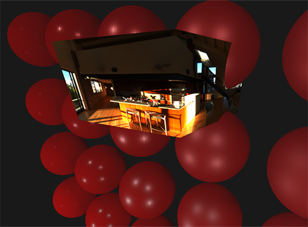
对于立方体图的采样，顶点着色器如下：
#version 330 core
layout (location = 0) in vec3 aPos;
uniform mat4 projection;
uniform mat4 view;
out vec3 localPos;
void main()
{
localPos = aPos;
// remove translation from the view matrix
mat4 rotView = mat4(mat3(view));
vec4 clipPos = projection * rotView * vec4(localPos, 1.0);
gl_Position = clipPos.xyww; // 注意这里的分量是`xyww`！！
}
对于立方体图的采样，像素着色器如下：
#version 330 core
out vec4 FragColor;
in vec3 localPos;
uniform samplerCube environmentMap;
void main()
{
// 从cubemap采样颜色
vec3 envColor = texture(environmentMap, localPos).rgb;
// HDR -> LDR
envColor = envColor / (envColor + vec3(1.0));
// Gamma校正（只在颜色为线性空间的渲染管线才需要）
envColor = pow(envColor, vec3(1.0/2.2));
FragColor = vec4(envColor, 1.0);
}
上述代码中，要注意在输出最终的颜色之前，做了HDR到LDR的转换和Gamma校正。
渲染的效果如下图：

3.3.1.3 PBR和非直接辐射度光照（indirect irradiance lighting）
辐射度图提供了漫反射部分的积分，该积分表示来自非直接的所有方向的环境光辐射之和。由于辐射度图被当成是无方向性的光源，所以可以将漫反射镜面反射合成环境光。
首先，得声明预计算出的辐射度图的sample：
uniform samplerCube irradianceMap;
通过表面的法线，获得环境光可以简化成下面的代码：
// vec3 ambient = vec3(0.03);
vec3 ambient = texture(irradianceMap, N).rgb;
尽管如此，在之前所述的反射方程中，非直接光依旧包含了漫反射和镜面反射两个部分，所以我们需要加个权重给漫反射。下面采用了菲涅尔方程来计算漫反射因子：
vec3 kS = fresnelSchlick(max(dot(N, V), 0.0), F0);
vec3 kD = 1.0 - kS;
vec3 irradiance = texture(irradianceMap, N).rgb;
vec3 diffuse = irradiance * albedo;
vec3 ambient = (kD * diffuse) * ao;
由于环境光来自在半球内所有围绕着法线N的方向，没有单一的半向量去决定菲涅尔因子。为了仍然能模拟菲涅尔，这里采用了法线和视线的夹角。之前的算法采用了受表面粗糙度影响的微平面半向量，作为菲涅尔方程的输入。这里，我们并不考虑粗糙度，表面的反射因子被视作相当大。
非直接光照将沿用直接光照的相同的属性，所以，期望越粗糙的表面镜面反射越少。由于不考虑表面粗糙度，非直接光照的菲涅尔方程强度被视作粗糙的非金属表面（下图）。

为了缓解这个问题，可在Fresnel-Schlick方程注入粗糙度项（该方程的来源）：
vec3 fresnelSchlickRoughness(float cosTheta, vec3 F0, float roughness)
{
return F0 + (max(vec3(1.0 - roughness), F0) - F0) * pow(1.0 - cosTheta, 5.0);
}
考虑了表面粗糙度后，菲涅尔相关计算最终如下：
vec3 kS = fresnelSchlickRoughness(max(dot(N, V), 0.0), F0, roughness);
vec3 kD = 1.0 - kS;
vec3 irradiance = texture(irradianceMap, N).rgb;
vec3 diffuse = irradiance * albedo;
vec3 ambient = (kD * diffuse) * ao;
如上所述，实际上，基于图片的光照计算非常简单，只需要单一的cubemap纹理采样。大多数的工作在于预计算或卷积环境图到辐射度图。
加入了IBL的渲染效果如下（竖向是金属度增加，水平是粗糙度增加）：

本节所有代码可在这里找到。
3.3.2 镜面的IBL（Specular IBL）
3.3.1 描述的是IBL的漫反射部分，本节将讨论IBL的镜面反射部分先回顾一下反射方程：
上述的镜面反射部分（被相乘）不是恒定的，并且依赖于入射光方向和视线入射方向，尝试实时地计算所有入射光和所有入射视线的积分是几乎不可能的。Epic Games推荐折中地使用预卷积镜面反射部分的方法来解决实时渲染的性能问题，这就是分裂和近似法（split sum approximation）。
分裂和近似法将镜面反射部分从反射方程分离出两个部分，这样可以单独地对它们卷积，后面在PBR的shader中为镜面的非直接IBL将它们结合起来。跟预卷积辐射度图类似，分裂和近似法需要HDR环境图作为输入。为了更好地理解分裂和近似法，下面着重关注反射方程的镜面部分：
出于跟辐射度图相同的性能问题的考虑，我们要预计算类似镜面IBL图的积分，并且用片元的法线采样这个图。辐射度图的预计算只依赖于，并且我们可以将漫反射项移出积分。但这次从BRDF可以看出，不仅仅是依赖于：
如上方程所示，还依赖，并且我们不能用两个方向向量来采样预计算的cubemap。预计算所有和的组合在实时渲染环境中不实际的。
Epic Games的分裂和近似法将镜面反射部分从反射方程分离出两个部分，这样可以单独地对它们卷积，后面在PBR的shader中为镜面的非直接IBL将它们结合起来。分离后的方程如下：
第一部分是预过滤环境图（pre-filtered environment map），类似于辐射度图的预计算环境卷积图，但会加入粗糙度。随着粗糙度等级的增加，环境图使用更多的散射采样向量来卷积，创建出更模糊的反射。
对每个卷积的粗糙度等级，循环地在预过滤环境图的mimap等级存储更加模糊的结果。下图是5个不同粗糙度等级的预过滤环境图：

生成采样向量和它们的散射强度，需要用到Cook-Torrance BRDF的法线分布图（NDF），而其带了两个输入：法线和视线向量。当卷积环境图时并不知道视线向量，Epic Games用了更近一步的模拟法：假设视线向量（亦即镜面反射向量）总是等于输出采样向量。所以代码变成如下所示：
vec3 N = normalize(w_o);
vec3 R = N;
vec3 V = R;
这种方式预过滤环境图卷积不需要关心视线方向。这就意味着当从某个角度看向下面这张图的镜面表面反射时，无法获得很好的掠射镜面反射（grazing specular reflections）。然而通常这被认为是一个较好的妥协：

第二部分是镜面积分。假设所有方向的入射辐射率是全白的（那样），那就可以用给定的粗糙度和一个法线和光源方向之间的角度或来预计算BRDF的值。Epic Games存储了用变化的粗糙度来预计算每一个法线和光源方向组合的BRDF的值，该粗糙度存储于2D采样纹理（LUT）中，它被称为BRDF积分图（BRDF integration map）。
2D采样纹理输出一个缩放（红色）和一个偏移值（绿色）给表面的菲涅尔方程式（Fresnel response），以便提供第二部分的镜面积分：
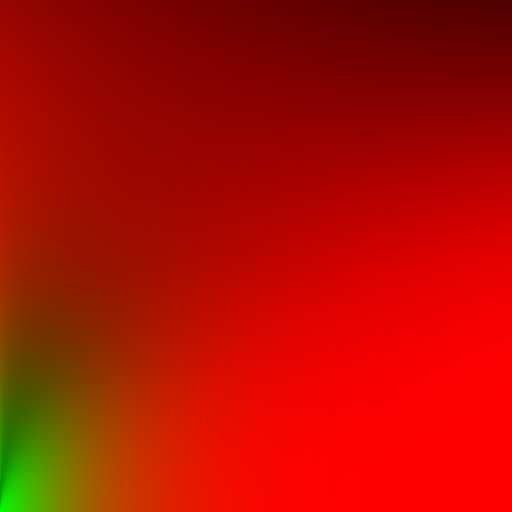
上图水平表示BRDF的输入，竖向表示输入的粗糙度。
有了预过滤环境图和BRDF积分图，可以在shader中将它们结合起来：
float lod = getMipLevelFromRoughness(roughness);
vec3 prefilteredColor = textureCubeLod(PrefilteredEnvMap, refVec, lod);
vec2 envBRDF = texture2D(BRDFIntegrationMap, vec2(NdotV, roughness)).xy;
vec3 indirectSpecular = prefilteredColor * (F * envBRDF.x + envBRDF.y)
3.3.3 完整的IBL
首先是声明IBL镜面部分的两个纹理采样器：
uniform samplerCube prefilterMap;
uniform sampler2D brdfLUT;
接着用法线N和视线-V算出反射向量R，再结合MAX_REFLECTION_LOD和粗糙度等参数采样预过滤环境图：
void main()
{
[...]
vec3 R = reflect(-V, N);
const float MAX_REFLECTION_LOD = 4.0;
vec3 prefilteredColor = textureLod(prefilterMap, R, roughness * MAX_REFLECTION_LOD).rgb;
[...]
}
然后用视线、法线的夹角及粗糙度采样BRDF查找纹理，结合预过滤环境图的颜色算出IBL的镜面部分：
vec3 F = FresnelSchlickRoughness(max(dot(N, V), 0.0), F0, roughness);
vec2 envBRDF = texture(brdfLUT, vec2(max(dot(N, V), 0.0), roughness)).rg;
vec3 specular = prefilteredColor * (F * envBRDF.x + envBRDF.y);
自此，反射方程的非直接的镜面部分已经算出来了。可以将它和上一小节的IBL的漫反射部分结合起来：
vec3 F = FresnelSchlickRoughness(max(dot(N, V), 0.0), F0, roughness);
vec3 kS = F;
vec3 kD = 1.0 - kS;
kD *= 1.0 - metallic;
vec3 irradiance = texture(irradianceMap, N).rgb;
vec3 diffuse = irradiance * albedo;
const float MAX_REFLECTION_LOD = 4.0;
vec3 prefilteredColor = textureLod(prefilterMap, R, roughness * MAX_REFLECTION_LOD).rgb;
vec2 envBRDF = texture(brdfLUT, vec2(max(dot(N, V), 0.0), roughness)).rg;
vec3 specular = prefilteredColor * (F * envBRDF.x + envBRDF.y);
vec3 ambient = (kD * diffuse + specular) * ao;
此时可以算出由IBL的漫反射和镜面反射部分结合而成的环境光ambient，渲染效果如下：
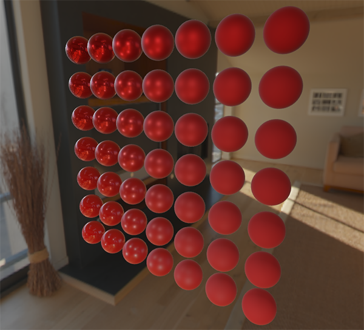
扩展一下，加入一些酷酷的材质：
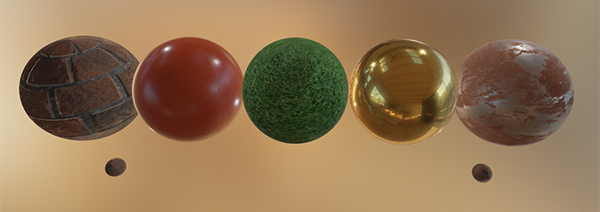
或者加载这些极好又免费的PBR 3D模型（by Andrew Maximov）：

非常肯定地，加了IBL光照后，渲染效果更真实更加物理正确。下图展示了在未改变任何光照信息的情况下，在不同的预计算HDR图中的效果，它们看起来依然是物理正确的：

IBL的教程结束了，本节的代码可在球体场景和纹理场景中找到。
四. 进阶：PBR核心理论和原理
上章主要介绍了PBR中Cook-Torrance的BRDF的两个部分：直接光照和IBL。
这章将深入介绍PBR核心部分的底层理论和原理，使读者对PBR的底层原理有更彻底的理解。本章部分内容在上一章已经有所涉及，但会更加深入。
主要面向：
- 进阶程序员
- 对PBR底层原理感兴趣的人
4.1 再论PBR核心理论
上章讲述了符合PBR必须满足以下3个条件：
- 基于微平面模型（Be based on the microfacet surface model）。该模型将物体表面建模成无数微观尺度上有随机朝向的理想镜面反射的小平面（microfacet）。微观几何（microgeometry）是在不同微表面改变其法线，从而改变反射和折射光的方向。常用统计方法处理微观几何现象，将表面视为具有微观结构法线的随机分布，在宏观表面视为在每个点处多个方向上反射（和折射）光的总和。
- 能量守恒 （Energy Conservation）。出射光线的能量永远不能大于入射光线的能量。随着表面粗糙度的增加，镜面反射区域的面积会增加，但平均亮度则会下降。
- 使用基于物理的BRDF（Use a physically based BRDF）。Cook-Torance的BRDF是实时渲染领域最普遍的PBR光照模型，上章详述了其原理和实现。它是数学和物理领域里诸多知识的综合体。
若是将上面3点进一步详细论述，将涉及以下知识点：
- 光学
- 光的性质
- 光的理论
- 光的能量
- 几何光学
- 反射
- 镜面反射
- 菲涅尔反射
- 折射
- 散射
- 吸收
- 反射
- 物质
- 微观表面
- 宏观表面
- 分类：金属、电介质、半导体
- 与光学的交互
- 能量
- 光能
- 电能
- 动能
- 热能
- 能量守恒
- 能量转化
- PBR综合
- 材质分类
- 属性模拟
- 光照模型
总结起来，PBR就是光学原理和物体结构交互作用的抽象和模拟。下面先从光的性质说起。
4.2 光的性质
4.2.1 光是什么？
有人说光是粒子，有人说光是电磁，有人说光是一种波，有人说光是一种能量，还有人说光是量子，那么光到底是什么？
狭义上说，光是电磁辐射的某一部分内人眼可见的电磁频谱，即可见光，它是人眼可感知的可见光谱，是造成视觉的原因。
可见光通常被定义为具有波长在400-700纳米（nm）的范围内，不可见的有红外线（具有更长的波长）和紫外线（具有更短的波长）。
广义上说，光指的是任何波长的电磁辐射，无论是否可见。包括伽马射线、X射线、微波和无线电波。而可见光（400-700纳米）只是所有波长区域的一小部分：
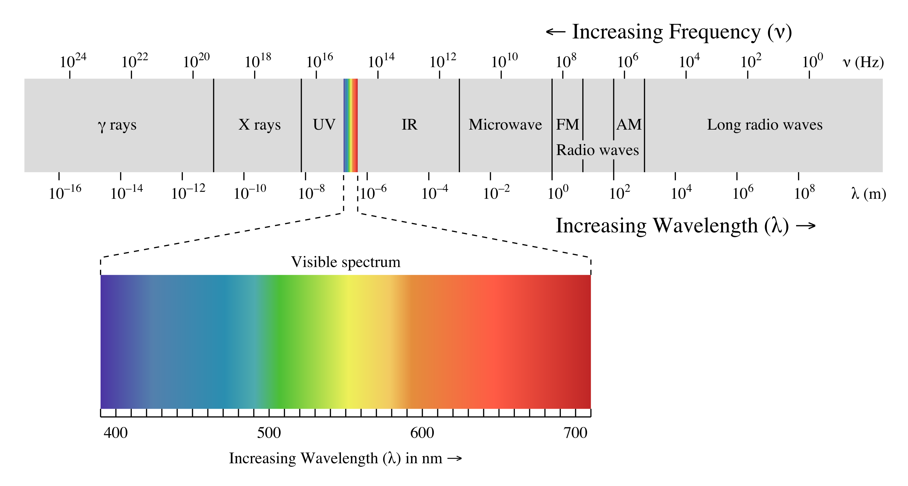
4.2.2 电磁频谱和可见光（Electromagnetic spectrum and visible light）
电磁辐射（Electromagnetic Radiation，EMR）按波长从长到短分为：无线电波、微波、红外线、可见光、紫外线、X射线和伽玛射线。
EMR的行为取决于其波长。较高频率具有较短波长，较低频率具有较长波长。不同波长的电磁辐射携带着不同的能量。当EMR与单个原子和分子相互作用时，其行为取决于它携带的每个量子的能量。
不同波长的可见光代表着不同的颜色。太阳光、日光灯等可见光是一组不同波长的电磁辐射的集合，在三棱镜下可以被分离出不同的颜色：

不同来源对可见光的定义略有不同，有的将可见光定义为狭窄的420-680nm，有的宽达380-800nm。在理想的实验室条件下，人们可以看到至少1050纳米的红外线; 儿童和年轻人可能会感知波长低至约310-313纳米的紫外线。

4.2.3 人眼感知可见光原理
上节阐述了可见光的范围和简单的感知理论，本小节将深入阐述人类为什么会感知并且只感知波长为380-800纳米的可见光。
首先要了解人眼的结构和视觉的分子机制。
人眼的结构类似于一架高精度的照相机，光线穿过透明的角膜（cornea）和虹膜（iris）包围的瞳孔（pupil），经过晶状体（lens）的折射在视网膜（retina）上形成空间分布的像。而视网膜上则分布着主要检测光强度的视杆细胞（rod cell）和主要检测颜色的视锥细胞（cone cell），它们是视觉形成的细胞基础。
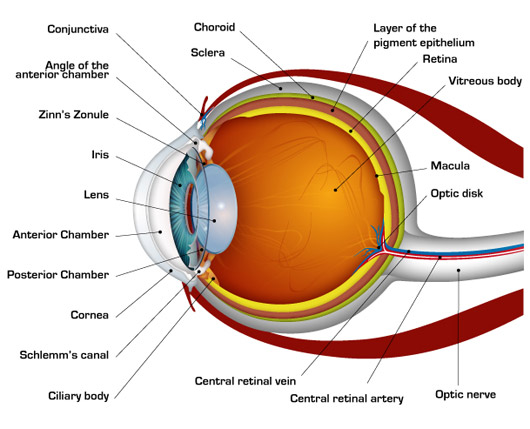
视杆细胞与视锥细胞对光的响应程度虽然略有差异，但它们发生光响应的机制都是类似的。以视杆细胞上的视紫红质（rhodopsin）为例，它由一个细胞膜上的七次跨膜蛋白（视蛋白，opsin）和视黄醛（retinal）辅基组成。视蛋白是G蛋白偶联受体（GPCR）的一种，视黄醛辅基以共价键结合在其第七个跨膜螺旋片段的赖氨酸残基上。
视黄醛分子是由维生素 A 氧化而来的，一个维生素 A 分子氧化得到一个视黄醛。视黄醛具有两种构型：11 位顺式（11-cis）和 全反式（All-trans），正常与视蛋白结合的是 11 位顺式构型。恰巧在可见光（对视紫红质而言是波长 500 nm 左右的电磁波）照射下，11 位顺式构型可以转变为全反式构型，从而导致视黄醛辅基从视蛋白上脱离。辅基的脱离造成视紫红质构象变化，经过信号转导导致细胞膜内外离子电位发生变化，产生神经电信号。这一信号经过视神经传入大脑，就使得我们产生了视觉。
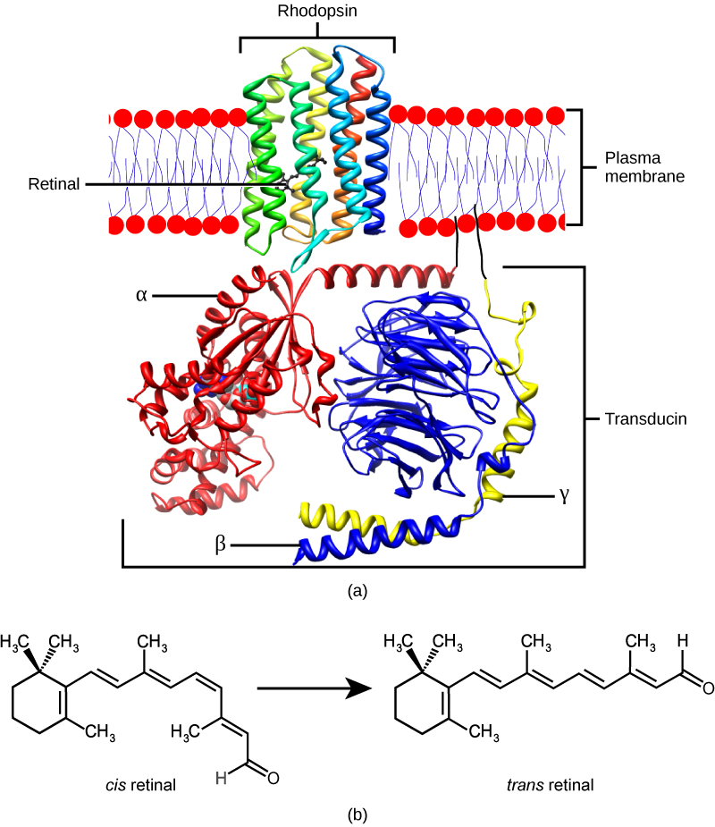
(a)视紫红质的结构；(b)视黄醛分子的光敏异构反应。
因此，从视觉的分子机制出发，可以这么回答：正由于视黄醛分子的构型转变反应恰好响应了可见光波段的电磁波，这才导致这一波段的电磁波能被人类 “看见”。
此外，视黄醛分子是维生素 A 的部分氧化产物，又可由植物中广泛存在的天然色素——β-胡萝卜素氧化得到，来源和代谢路径明确，被大多数生物进化选中作为光敏分子也在情理之中。
那为什么高度进化的人类不能感知可见光谱之外的电磁辐射呢？为什么视黄醛分子刚好只对可见波段的电磁波产生反应？
这个可以从各个波段的电磁辐射的性质来回答。
波长最短的伽马射线（Gamma ray）和高能X射线（X ray）由于携带的能量（光子）太高，很快就会导致分子电离、分解甚至激发原子核（导致原子核爆发）。首先被排除。
波长较短的深紫外（deep Ultraviolet）和软 X 射线激发的电子能级一般是内层电子或高能电子，这种激发得到的分子高能态很不稳定，在常温下的水溶液或空气中都难以保证信息的有效传递。也被排除。
波长较长的红外（Infrared）与微波（Microwave）频段的电磁波主要与分子的振动、转动和平动相耦合，而这些运动主要以随机热运动形式存在，很难实现信息的准确表达。
波长更长的中波、长波（Radio）的运动尺度超过了单个分子能够接收的尺度，更不适合以细胞为基础的生物选择。
这样考察的结果，如果细胞一定要采取分子层面上的光敏机制对电磁波进行响应，那么最合适的波段可能就是现在的可见光波段。这一波段在分子运动中相当于电子光谱的外层电子激发能量，与分子中化学键的能量高低大致相当而略低，既不至于损伤一般较为稳定的化学键（尤其是作为生命体基础的 C-C、C-H、C=O、C-N 等化学键），又可以使得一些 “动态” 化学键（例如视黄醛中具有顺反异构的 11 位双键）发生光响应，并实现信息的有效传递。
所以，人类感知当前波段的可见光，是亿万年不断进化的结果。换个角度说，感知其它波段的人类祖先已经被淘汰了，他们的基因无法遗传传承下来。
可谓：物竞天择，适者生存。
4.2.4 光的来源
众所皆知，光是电磁波，而物质是由原子组成，原子是由原子核与核外运转着的电子组成。那么，物质原子中的电磁波是哪里来的？电磁波难道会无中生有？
奥斯特实验发现了直流导线的周围产生磁场，因为电子的运动伴生着磁场。电子的运动分为线性运动和振动：
- 线性运动：电子的线性运动是核外电子的绕核运动及在导电时电子的流动，它所伴生电磁波的宏观表现是磁场。电子的线性运动不是产生光的原因。
- 振动：电子的振动与发光息息相关，它会使电磁脱离场源形成电磁波，也就是产生了光，而不是所谓的光子。引起电子振动有两种原因：
- 一是高温物质核外电子的跃迁引发的振动，这种振动需要物质的温度大大高于环境温度，运转速率很高的核外电子跃迁辐射才能达到可见光的频率。这种高温物质核外电子的跃迁辐射所形成发光的光源叫热光源。岩浆、铁水、火焰、灯丝等高温物质的发光属于热光源。
- 二是电子在磁场或电场的作用下引发的受激振动，这样的电子振动与温度无关、与核外电子运转速率无关。这种不需要高温而使电子振动所形成辐射的光源叫冷光源。日光灯、节能灯、极光、萤火虫的发光、半导体发光（LED）等属于冷光源。
本小节开头的问题有了答案：光源中的光来自于电子的振动，电子振动所伴生的电磁波辐射形成了光波，电子振动的频率构成了光波的频率，大量电子振动所伴生的电磁波辐射形成了光源。
4.2.5 光的理论
光的研究和理论经过数百年的发展，至今出了很多理论学说，每种理论都是为了解释部分光的物理现象。
目前，光存在的理论主要有：粒子理论、波动理论、电磁理论、量子理论及波粒二象性等。
4.2.5.1 光的粒子理论(Particle theory)
光的粒子说又称光的微粒说，这种理论认为光的本质与通过它反射而可见的实体物质一样，是一种粒子（下图）。

光的粒子性示意图
法国数学家皮埃尔·加森迪（Pierre Gassendi）于1660年提出了一种光的粒子理论。 Isaac Newton在Gassendi的理论基础上做了扩展：光是由来自各个方向或从各个方向发射的微粒（物质粒子）组成的。
牛顿随后对于加森迪的这种观点进行研究，他根据光的直线传播规律、光的偏振现象，最终于1675年提出假设，认为光是从光源发出的一种物质微粒，在均匀媒质中以一定的速度传播。
微粒说很容易解释光的直进性，也很容易解释光的反射，因为粒子与光滑平面发生碰撞的反射定律与光的反射定律相同。
然而微粒说在解释一束光射到两种介质分界面处会同时发生反射和折射，以及几束光交叉相遇后彼此毫不妨碍的继续向前传播等现象时，却发生了很大困难。
4.2.5.2 光的波动理论(Wave theory)
在1660年代，胡克（Robert Hooke）发表了他的光波动理论。他认为光线在一个名为光以太（Luminiferous ether）的介质中以波的形式四射，并且由于波并不受重力影响，光在进入高密度介质时会减速。
光的波理论预言了干涉现象以及光的偏振性。
欧拉是波动学说的支持者之一，他认为波理论更容易解释衍射现象。
菲涅耳也支持并独立完成了他的波动理论。在1821年，菲涅尔使用数学方法使光的偏振在波动理论上得到了唯一解释。
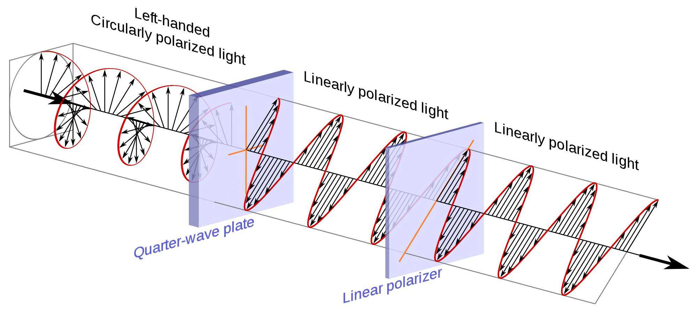
上图：光的偏振现象，回旋光波先后经过四分一波偏振板和线性偏振板的情形。
但是，波动理论的弱点在于，波类似于声波，传播需要介质。虽然曾有过光以太介质的假想，但因为19世纪迈克耳孙-莫雷实验陷入了强烈的质疑。
牛顿推测光速在高密度下变高，惠更斯和其他人觉得正相反，但当时并没有准确测量光速的条件。直到1850年，莱昂·傅科（Léon Foucault）的实验得到了和波动理论同样的结果。之后，经典粒子理论才真正被抛弃。
4.2.5.3 光的电磁理论(Electromagnetic theory)
光的电磁理论是关于光的本性的一种现代学说，19世纪60年代由麦克斯韦提出。把光看成是频率在某一范围的电磁波。能解释光的传播、干涉、衍射、散射、偏振等现象，以及光与物质相互作用的规律。
电磁理论还认为，电磁波具有互相垂直的电场与磁场，电场与磁场的频率、振幅、波长、传播方向是一致的。
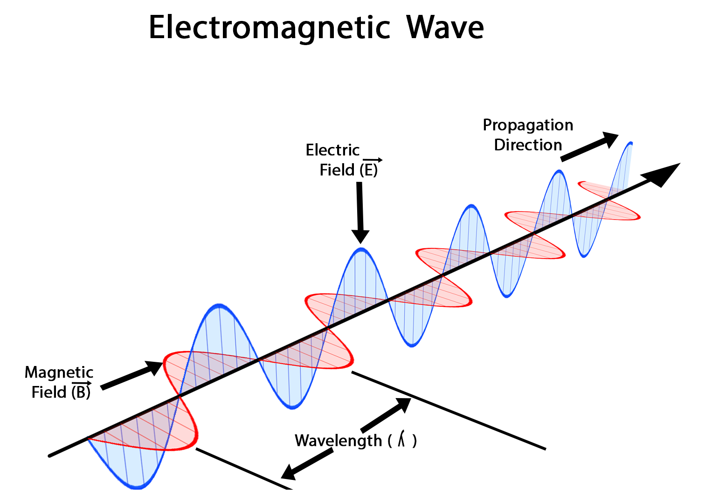
但由于光还具有粒子性，所以它不能解释光电效应、康普顿效应等物理现象。
4.2.5.4 光的量子理论(Quantum theory)
光的量子理论是以辐射的量子理论研究光的产生、传输、检测及光与物质相互作用的学科。
量子光学示意图
1900年，普朗克在研究黑体辐射时，为了从理论上推导出得到的与实际相符甚好的经验公式，他大胆地提出了与经典概念迥然不同的假设，即“组成黑体的振子的能量不能连续变化，只能取一份份的分立值”。
1905年，爱因斯坦在研究光电效应时推广了普朗克的上述量子论，进而提出了光子的概念。他认为光能并不像电磁波理论所描述的那样分布在波阵面上，而是集中在所谓光子的微粒上。在光电效应中，当光子照射到金属表面时，一次为金属中的电子全部吸收，而无需电磁理论所预计的那种累积能量的时间，电子把这能量的一部分用于克服金属表面对它的吸力即作逸出功，余下的就变成电子离开金属表面后的动能。
1923年，亚瑟·霍利康普顿表明，当从电子散射的低强度X射线（所谓的康普顿散射）中看到的波长漂移可以通过X射线的粒子理论来解释，而不是波动理论。
1926年Gilbert N. Lewis将这些光量子粒子命名为光子。
2018年2月，科学家首次报道了一种可能涉及极化子的新型光的发现，这可能对量子计算机的发展有用。
量子力学作为一门“很数学”化的物理体系，已经像经典力学那样成熟了，并成为洞悉微观世界的重要工具。
但量子力学也给留下了许多物理上的困惑，如粒子运动的波粒二象性问题、几率波问题、粒子纠缠问题、波函数崩塌问题等等。
4.2.5.5 光的波粒二象性(Wave-particle duality)
历史上关于光是粒子还是波动的争论，已有两千多年（下图）。
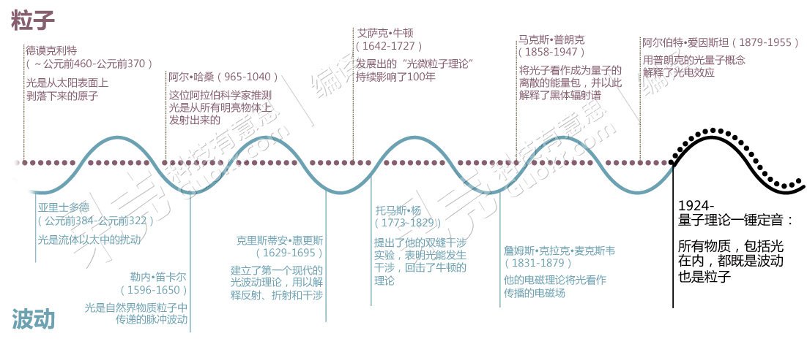
光的种种现象和性质表明它既有粒子的特征又有波动的特征，处于两个派别立场的研究者各执一词，互不相让。
直到1905年，爱因斯坦在德国《物理年报》上发表了题为《关于光的产生和转化的一个推测性观点》的论文。他认为对于时间的平均值，光表现为波动；对于时间的瞬间值，光表现为粒子性。这是历史上第一次揭示微观客体波动性和粒子性的统一，即波粒二象性。这一科学理论最终得到了学术界的广泛接受。
在新的事实与理论面前，光的波动说与粒子说之争以“光具有波粒二象性”而落下了帷幕。
即：光粒子的运动轨迹是呈周期性的波。
Wikipedia提供了一个视频，形象地描述了光在各种理论下的特征。
4.2.6 光的能量
光是能量的一种传播方式。光能量也被称为光子能量（按粒子性）或电磁辐射（按波动性）。每个光子都具有一定量的能量，频率越高，能量也越高。
光的度量跟能量或辐射测量类似，常被用于太阳能、加热、照明、电信、计算机图形学等领域。
光能量作为能量，可被测量，单位是焦耳（J）。可以通过将辐射通量（或功率）相对于时间、面积、空间积分来计算辐射能量的量。
测量辐射能量的概念和符号非常多，完整的表有数十个。下面只列出跟PBR相关的概念：
| 名称 | 符号 | 单位 | 公式 | 解析 |
|---|---|---|---|---|
| 辐射能量(Radiant energy) | 焦耳() | - | 电磁辐射能量 | |
| 辐射通量(Radiant Flux) | 瓦() | 单位时间辐射的能量，也叫辐射功率(Radiant Power)或通量(Flux) | ||
| 辐照度(Irradiance) | 瓦/平方米() | 到达单位面积的辐射通量 | ||
| 辐射度(Radiosity) | 瓦/平方米() | 离开单位面积的辐射通量，也叫辐出度、辐射出射度（Radiant Existance） | ||
| 辐射强度(Radiant Intensity) | 瓦/立体弧度() | 通过单位立体角的辐射通量 | ||
| 辐射率(Radiance) | 瓦/平方米立体弧度() | 通过单位面积单位立体角的辐射通量 |
4.3 光学原理（Optics theory）
光学（Optics）是物理学的一个分支，研究光的行为和性质，包括它与物质的相互作用以及使用或检测它的仪器的结构。
光学通常描述可见光、紫外光和红外光的行为。由于光是电磁波，其它波段的电磁辐射（如X射线、微波和无线电波）表现出类似的特性。
光学按照不同角度、不同粒度和不同侧重点大致可以分为以下几类：
- 电磁光学。将光分为大多数光学现象可以使用光的经典电磁描述来解释。然而，光的完整电磁描述通常难以应用于实践中，需要借助其它光学类型。
- 几何光学。几何光学系统将光线视为一组光线，它们以直线传播，并在通过或从表面反射时弯曲。是物理应用中简化的一种模型。由于PBR的BRDF几乎都是基于几何光学，后面章节会侧重地介绍几何光学。
- 物理光学。物理光学是一种更全面的光模型，包括衍射和干涉等波效应几何光学中无法解释的。历史上，首先开发基于射线的光模型，然后是波的光模型。19世纪电磁理论的进步才发现光波实际上是电磁辐射。
- 运动物理光学。主要研究天体运动的光速差、光漂移、多普勒效应等。当前已经发展成一支庞大的独立的物理分支。
- 量子光学。一些现象取决于光具有波状和粒子状特性的事实。这些效应的解释需要量子力学。当考虑光的粒子特性时，光被建模为称为“光子” 的粒子集合。量子光学涉及量子力学在光学系统中的应用。
光学与许多相关学科联合进行研究，包括天文学、工程领域、摄影、计算机和医学等等。光学的应用存在于各种日常物品中，包括镜子、透镜、望远镜、显微镜、激光器和光纤等等。
4.3.1 光的反射（Reflection）
光的反射是当光在两种物质分界面上改变传播方向又返回原来物质中的现象。
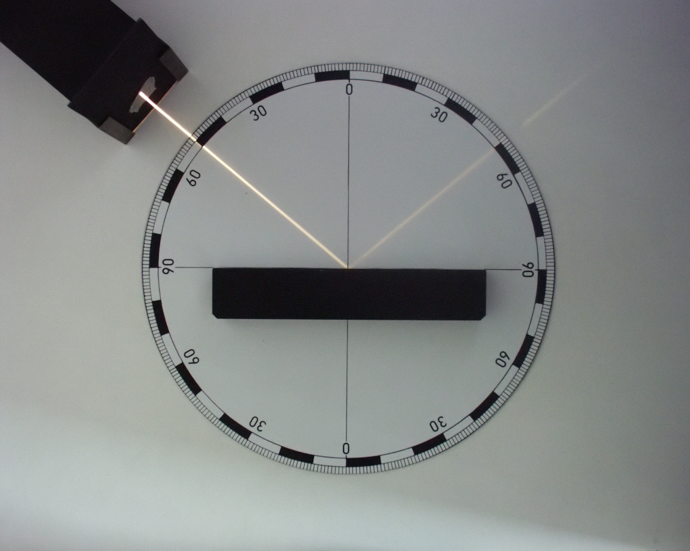
上图：光的反射现象。
产生反射的原理：光是电磁波，射在物体上的光波引起单个原子中的极化振荡（或电子在金属中的振荡），致使每个粒子在各个方向上辐射小的二次波，如偶极天线（ dipole antenna）。根据惠更斯-菲涅耳原理，所有这些波加起来就产生反射和折射。
光的反射细分为以下几种：
- 镜面反射（Specular reflection）：平行光线射到光滑表面上时反射光线也是平行的现象。表面平滑的物体，易形成光的镜面反射，形成刺目的强光，反而看不清楚物体。
- 漫反射（Diffuse reflection）：平行光线射到凹凸不平的表面上，反射光线射向各个方向的现象。
- 方向反射（Directional reflection）：是介于漫反射和镜面反射之间反射，也称非朗伯反射。其表现为各向都有反射，且各向反射强度不均一。
- 回射（Retroreflection）：入射光射在介质表面上，反射光的方向与入射光一致的现象。飞机在飞越被阳光照射的云层时，在飞机阴影周围看到的区域将显得更亮，从草地上的露水可以看到类似的效果。
4.3.2 光的折射（Refraction）
光的折射是指光从一种介质斜射入另一种介质时，传播方向发生改变，从而使光线在不同介交界处发生的偏折。

上图：光的折射现象。
折射的原理与反射类似：光波是一种特定频段的电磁波，光在传播过程中有两个垂直于传播方向的分量：电场分量和磁场分量。当电场分量与介质中的原子发生相互作用，引起电子极化，形成电子云和原子荷重心发生相对位移。导致光的一部分能量被吸收，同时光在介质中的速度被减慢，方向发生变化，引发了折射。
上图：光从一种物质进入另一种物质后发生了折射，波长、方向、速率都发生了改变。
近代物理学指出，光是一种没有静质量、体积非常小、运动速度比较高的物质。光和其它物质有相同的性质。光和物质间的相互作用力使光的运动方向发生改变即折射。
4.3.3 光的散射（Scattering）
光通过不均匀媒质时，部分光束将偏离原来方向而分散传播，从侧向也可以看到光的现象。
散射发生的原理：当光子与分子或原子相互接近时，由于双方具有很强的相互斥力，迫使它们在接触前就偏离了原来的运动方向而分开。
散射是观察和辨别物体的主要现象，是自然中最普遍存在的现象。漫反射其实也是散射的一种。
4.3.4 光的色散（Dispersion）
光的色散指的是复色光分解为单色光的现象。

色散现象说明光在介质中的速度（为介质的折射率）随光的频率而变。光的色散可以用三棱镜、衍射光栅、干涉仪等来实现。
光的色散说明了光具有波动性。因为色散是光的成分（不同色光）折射率不同引起的，而折射率由波的频率决定。
对同一种介质，光的频率越高，介质对这种光的折射率就越大。在可见光中，紫光的频率最高，红光频率最小。当白光通过三棱镜时，棱镜对紫光的折射率最大，光通过棱镜后，紫光的偏折程度最大，红光偏折程度最小。这样，三棱镜将不同频率的光分开，就产生了光的色散。
为什么在同一介质中，不同波长的光，其速度和折射率会不同呢？
由于光有粒子性，与介质的原子、分子有相互作用力。对于波长越短的光，其携带的能量越大、运动越强，与介质的原子、分子的相互作用力越大，致使其速度越小、折射率越大。（这个回答是笔者根据经典物理学结合波动论的推测，未找到确切的依据和论据，有待考证！）
4.3.5 光的吸收（Absorption）
电磁理论认为，光的吸收是光(电磁辐射)通过材料时，与材料发生相互作用，电磁辐射能量被部分地转化为其他能量形式的物理过程。
当被吸收的光能量以热能的形式被释放，即形成了光热转化；当未被吸收的光能量被物体反射、散射或透射，便影响着我们看到的物体的色彩。
量子理论认为，光的吸收是指分子或原子在光波辐射场（光照）下，会吸收光子的能量由低能态跃迁到高能态的现象。这种跃迁也等效于一个具有一定固有频率的振子。
电磁理论证明，当物体对某种频率光的吸收系数很大时，它对该频率光的反射率也大。若干电介质具有很强的吸收带，故它们对于吸收带附近频率的光也有很强的反射，这称为选择反射。
半导体材料在不同的程度上具备电介质和金属材料的全部光学特性。当半导体材料从外界以某种形式（如光、电等）吸收能量，则其电子将从基态被激发到激发态，即光吸收。而处于激发态的电子会自发或受激再从激发态跃迁到基态，并将吸收的能量以光的形式辐射出来（辐射复合），即发光；当然也可以无辐射的形式如发热将吸收的能量发散出来（无辐射复合）
金属的光吸收要同时考虑束缚电子与自由电子的作用。对于红外线或更低频率的辐射，自由电子起主要作用；而对于紫外线及更高频率的辐射，则束缚电子的作用比较显著，这时金属实际上表现出与电介质相似的光学性质。
4.3.6 光的衍射（Diffraction）
衍射是指当光波遇到障碍物或狭缝时发生的各种现象。它被定义为围绕障碍物或孔的角落的波浪弯曲到障碍物的几何阴影区域中。
由于光具有波动性，所以也会产生衍射。
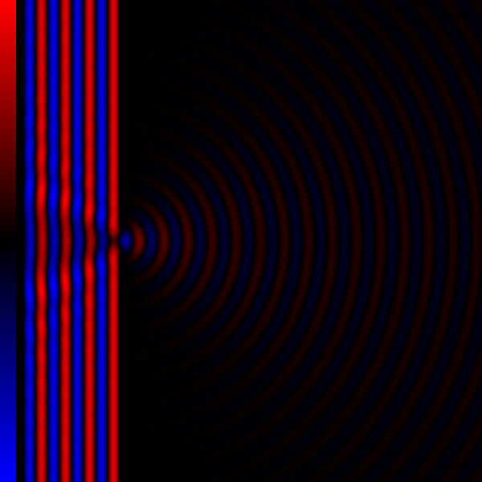
光波穿过单波长的缝隙后发生了衍射现象。
当光波穿过具有变化的折射率的介质时，也会发生衍射的效果。所有波都会发生衍射，包括声波、水波和电磁波（可见光、X射线和无线电波）。
光的衍射产生的原理可以从两方面解释：
- 波动光学：根据惠更斯 - 菲涅耳原理和波叠加原理，衍射是由于波传播的方式而产生的。通过将波前传输介质的每个粒子视为二次球面波的点源，可以可视化波的传播，任何后续点的波位移是这些二次波的总和。当这些波被加在一起时，它们的总和由相对相位以及各个波的幅度确定，使得波的总和幅度可以具有零和各个幅度之和之间的任何值
- 量子光学：在通过狭缝传播光时，每个光子具有波函数，波函数描述了从发射器通过狭缝到屏幕的路径。波函数（光子将采取的路径）由物理环境决定，例如狭缝形状、屏幕距离和光子创建时的初始条件。
4.3.7 光的叠加和干涉（Superposition and interference）
若干个光波组合在一起形成的复合效果便是光的叠加。
更准确地说，在没有非线性效应的情况下，叠加原理可用于通过简单地添加干涉来预测相互作用波形的形状。产生光波的复合图案的相互作用通常被称为干涉，干涉可能导致不同的结果。
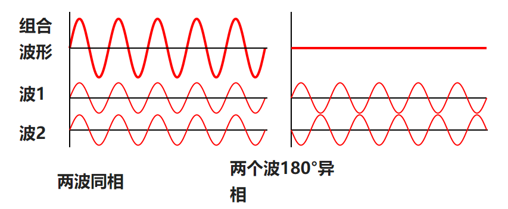
光波在不同相位产生的叠加效果。
光产生叠加和干涉现象的原理与衍射类型，便不再累述。
4.3.8 光的偏振（Polarization）
偏振是波的一般属性，描述了它们的振荡方向。由于光具有波动性，所以也会偏振。
偏振为横向波（如许多电磁波）描述了垂直于行进波方向的平面中的振荡方向。振荡可以在单个方向上（线性偏振），或者随着波行进方向而旋转（圆形或椭圆形偏振）。
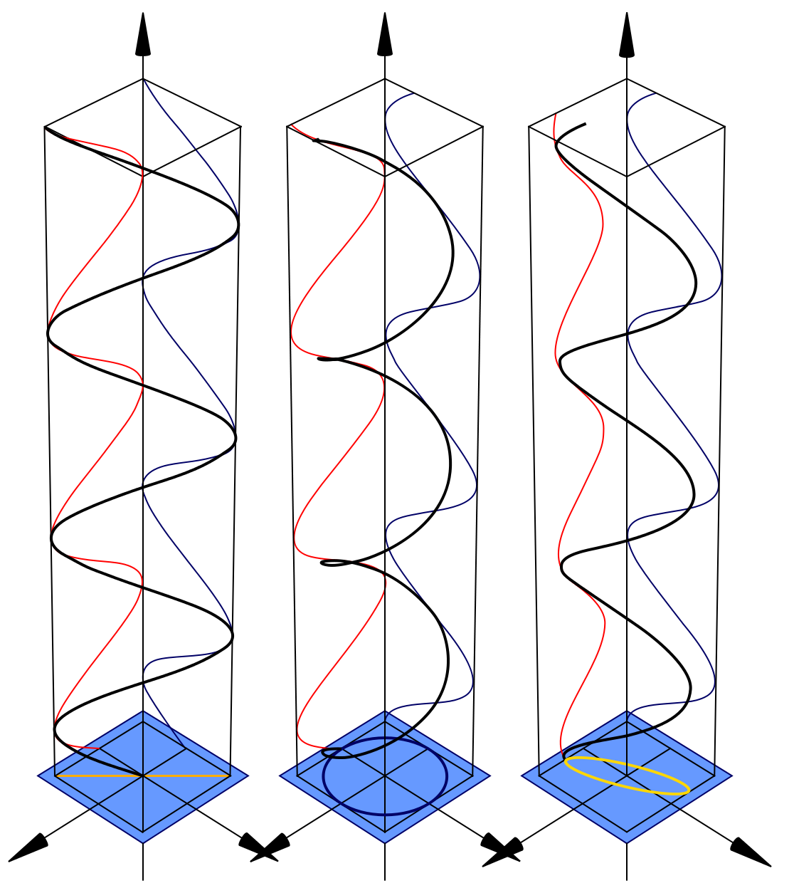
左：线性偏振；中：圆形偏振；右：椭圆偏振。
4.4 几何光学（Geometry optics）
几何光学是将光的波长视作无限小，以致可以将光当成直线来研究的一门物理分支。它以光线为基础，研究光的传播和成像规律。
在几何光学中，把组成物体的物点看作是几何点，把它所发出的光束看作是无数几何光线的集合，光线的方向代表光能的传播方向。
几何光学中光线的概念与光的波动性质相违背。因为从能量和光的波动性现象（如衍射）来看，这种几何光线都是不可能存在的。几何光学只是波动光学的近似，把所有光当成波长极小的情况处理，小到光线被当成了直线。但是，简化后的几何光学可以不涉及光的物理本性，而能以其简便的方法解决光学仪器中的光学技术问题和计算机图形渲染的复杂度问题。
在几何光学中，特别是在计算机图形学中，光线处理做了以下简化或遵循以下基本定律：
- 直线传播：光在均匀介质中沿直线传播。直线意味着将光波长视作极小。
- 独立传播：两束光在传播途中相遇时互不干扰，仍按各自的途径继续传播。而当两束光会聚于同一点时，在该点上的光能量是简单的相加。
- 反射和折射：光在传播途中遇到两种不同介质的光滑分界面时，一部分光线反射，它们的传播方向遵循反射定律；另外另一部分折射，它们的传播方向遵循折射定律。
- 路径可逆性：一束光线从一点出发经过无论多少次反射和折射，如在最后遇到与光束成直角的界面反射，光束必然准确地循原路返回出发点。
- 介质各向同性：将光线传播的介质简化成均匀的，即各向同性（isotropic）。所谓各向同性是指介质任意一点的所有方向的物理性质（如密度、弹性、摩擦系数等等）和化学性质是一样的。
- 分界面简化：将光线经过两个介质的分界面处的点当做平面上的点处理。
- 单色光源：真实的发光源基本是复合色光源，但在几何光学中，简化成了单色光，避开色散、傅里叶积分、能量积分等复杂问题。
- 麦克斯韦方程的特化：由于很多参数作了特例化和简化，所以几何光学的光照计算实际上使用的是麦克斯韦方程简化和特化后的版本。
由于PBR的相关技术及诸多理论跟几何光学相关，所以本节将深入地探讨几何光学的内容。
4.4.1 反射定律（Law of Reflection）
反射定律描述了反射光的角度：入射光的角度与反射光的角度相同。
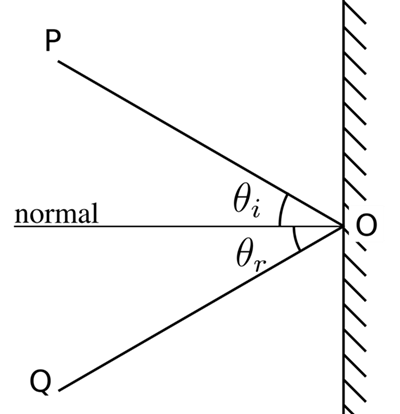
如上图所示，入射光线P射在介质点O上，反射光线是Q，点O的法线是normal，则根据反射定律：
即入射角和反射角相同。它们的另外一种等效表达形式：
需要注意的是，反射定律描述的是反射角问题，并不涉及能量分配。
反射还涉及到反射率的问题。反射率是反射波的功率与入射波的功率之比。每种材料的反射率不一样，并且跟入射光与介质的夹角有关，这种现象叫菲涅尔反射效应，与之相关的方程是菲涅尔方程（Fresnel equations）。

上图：菲涅尔反射效应，球体的反射率从中心到边缘以某种曲线提升。
实际上，当光照射到介质表面时，光可能产生的结果：
- 被吸收：部分光被介质吸收，转化其它形式的能力。
- 被折射：部分折射的光如果透过介质进入另外的介质，就会形成透射效果。
- 被反射：部分光被反射，其中反射分成了镜面反射和漫反射。
4.4.2 折射定律（Law of Refraction）
折射定律也叫斯涅尔定律（Snell's law，Snell–Descartes law），描述了光在两种介质之间折射后的角度、折射率、光速的关系。
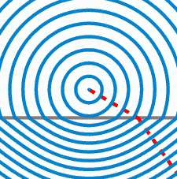
上图：折射定律动画示意图。
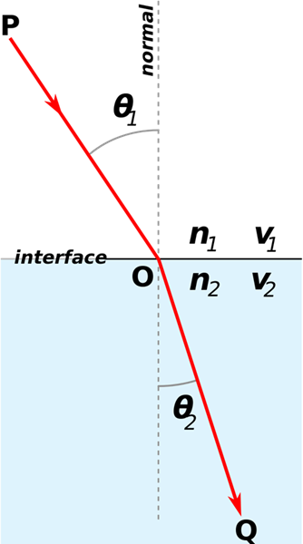
如上图所示，光在介质之间发生了折射，介质1的入射角、折射率和光速分别是、、，介质2的入射角、折射率和光速分别是、、，则根据折射定律，它们有以下的关系：
用折射定律会出现一种异常情况：当光从较高折射率的介质传播到较低折射率的介质时，在入射角足够大的情况下，折射定律似乎要求折射角的正弦大于1。
这当然是不可能的。实际上，在这种情况下，光线完全被边界反射，这种现象称为全内反射（Total internal reflection）。仍能导致折射的最大入射角称为临界角，此时折射角是。
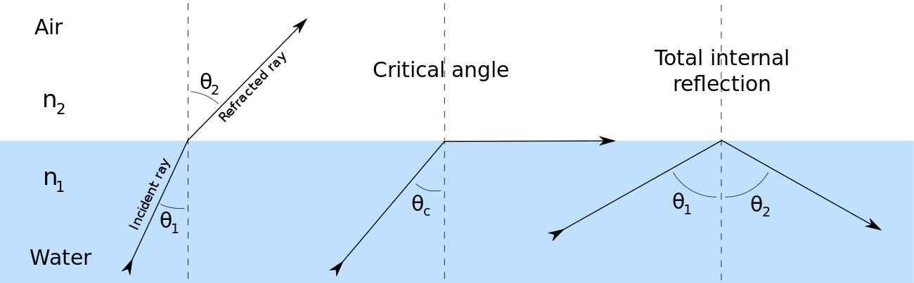如上图所示，光线从较高折射率的水射到较低折射率的空气中，当入射角大于临界角时，会出现图右的全内反射。
其中，临界角可由折射定律推导出来：
由于水的折射率，空气的折射率，折射角，则根据上面的公式可以算出水相对空气折射的临界角：
4.4.3 几何光学的其它定律
在几何光学中，除了反射定律和折射定律之外，还有以下定律：
- 拉格朗日积分不变式。
- 费马原理。
- 马吕斯和杜平定律。
由于这些定律跟PBR技术关联不大，本文不详述，有兴趣的可以另外找资料。
4.5 物质理论
4.5.1 物质是什么？
从经典物理学上，物质是任何具有质量并且有体积占据空间的东西。
从现代物理学上，物质是构成宇宙间一切物体的实物和能量场（光、电场、磁场、声等），还包括反物质和暗物质。
从宏观上，物质是所有看得见摸得着感受得到的东西。
从微观上，物质是由原子构成的所有东西，而原子又是由相互作用的亚原子粒子构成。实体粒子包含但不限于：原子、中子、质子、电子、夸克、轻子、重子、费米子等等；能量粒子包含但不限于：光量子、声波等。
从哲学上，物质除了客观实体，还有包含了主观意识。
虽然物质的概念和构成非常复杂，但计算机图形学的PBR领域，只要研究经典物理学的物质和能量场的光波即可。
4.5.2 物质结构
物质的构成千姿百态，结构也形态各异。
从不同的微观尺寸观察，物体的结构描述如下：
- ：1米维度，这个维度就是人类最常接触也最熟悉的尺度，人体、动物、生物、静态物体大多数是这个维度。
- ：1毫米维度，仔细观察或借助普通的放大镜，人类还是能清晰看到很多东西，如毛孔、微型动物、微型昆虫、巨型细菌、血管、毛发、皮肤细节等。
- ：1微米维度，在此维度下的物质有细菌、病毒、DNA、血小板、红细胞、白细胞、淋巴细胞等等。
- ：1纳米维度，这个维度已经到达了原子级别，可以分析氢原子、X射线的特性。
- ：1皮米维度，这个维度已经深入到原子核级别，可描述的原子、质子、中子的尺寸。
- ：1飞米维度，这个维度只能描述电荷、强子、费米子的尺寸。
- ：1阿米维度，这个维度只能描述电子、夸克的尺寸。
- ：1普朗克长度，这个维度只能描述量子泡沫、量子弦。
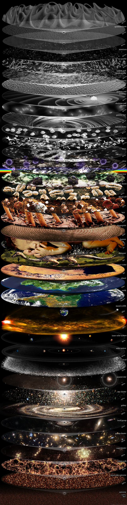
不同尺寸维度下的物质构成。从上到下：到。
4.5.3 物质形态
物质的形态（Phase，也叫相态）常见的有：固态、气态、液态、非晶态、液晶态，另外还有奇特的形态：等离子态、超固态、中子态、超导态、超流态、玻色–爱因斯坦凝聚、费米子凝聚态。
这些状态都是物质在不同的密度、温度、压强、辐射下的形态，当所处的环境发生改变时，会从一种形态转成另外一种形态。
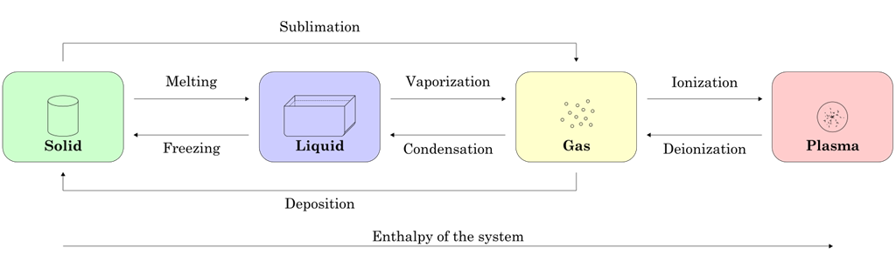
物质在固态、液态、气态、等离子态的转化图。
4.5.4 物质属性
物质的属性有很多，从不同角度有不同的属性，但常见的物理和化学属性有：体积、尺寸、质量、密度、硬度、导电性、导磁性、磁性、范性（可塑性）、透光性（透明度）、比热容、弹性、可燃性、助燃性、酸碱性等等。
下面只阐述跟PBR相关的物质属性。
4.5.4.1 导电性
导电性是指物质内载电荷粒子的运动。含有电荷的粒子称为电荷载子，它们的运动形成了电流。
电流产生的原因有两种：
- 受到电场的作用。
- 电荷载子分布不均匀引发的扩散机制。
根据导电性，可以将物质分为：
- 绝缘体：也称电介质，常见的绝缘体包含干燥的木材、塑料、橡胶、纸张等。
- 半导体：处于导体和绝缘体之间，半导体的电传导是由电场作用和扩散这两种物理机制共同引发。常见的半导体有硅、锗、砷化镓等。
- 导体：导电性强，常见的导体有金属、电解质、液体等。
- 超导体：导电性非常强，没有电阻，通常在绝对零度左右的极限条件下才能出现。
4.5.4.2 粗糙度
粗糙度是反映物质微观表面的轮廓紊乱的程度。
根据粗糙程度可以将物体分成以下几类：
- 光滑物体：粗糙度非常小，几乎为0，摩擦系数很小；微观表面轮廓几乎是一条直线，易产生镜面反射。
- 半光滑物体：粗糙度较小，摩擦系数较小；微观表面轮廓是较平整，产生介于镜面和漫反射之间的反射。
- 粗糙物体：粗糙度很大，接近1.0，摩擦系数很大；微观表面轮廓非常不平坦，产生漫反射。
有很多估算物体粗糙度的方法：
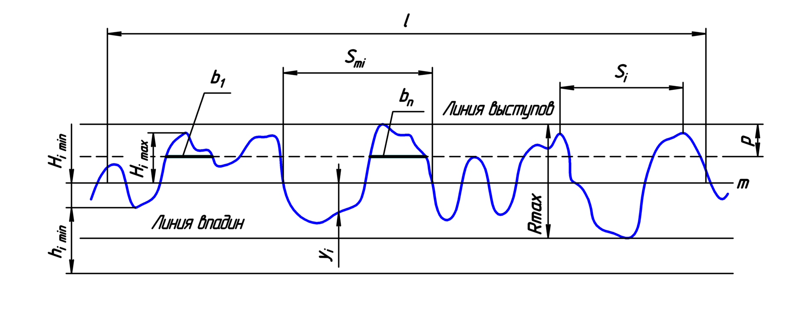
- ：算术平均偏差法，公式：
- ：均方根法，公式：
- ：偏态分布法，公式：
- ：峰态法，公式：
还有、法，但最常用的是 。
4.5.4.3 透光性
透光性亦即透明度，描述物质透过光线的程度。
物体的透光性主要取决于物质内部结构对外来光子的吸收和散射。
金属物质在可见光波段的电子轨道密集（有能带），能强烈地吸收对应能量的光子并发射（相同能量或较小能量的）光子，即其表面可以强烈地反射光，是不透明的。
物质内部对光的散射，主要取决于其内部缺陷的多少，缺陷多的物质，散射率高。普通陶瓷材料，其内部充斥着大量的微气孔等缺陷，气孔会对经过的光产生强烈的散射，所以普通陶瓷是不透明的；而气孔率保持极低的陶瓷材料是可以像玻璃一样透明的。单晶体（如天然水晶）和液体（如水）由于内部排列规则，缺陷极少，是透明的。
4.5.4.4 各向性
各向性是描述物质任意一点的物理和化学等属性跟方向是否相关，如果与方向无关叫各向同性（isortropy），否则叫各向异性（anisortropy）。
比如清澈平静的水是各向同性，因为水的每个部分的属性（密度、压力、温度、折射率质量等等）都与方向无关；而飘忽不定的烟或雾则是各向异性，很明显同个部位不同方向有着不一样的密度或外力。
在计算机图形学，特别是实时渲染领域，通常将物体简化成均匀的，即各向同性的。几何光学也通常将光线传播的介质看成各向同性。
4.6 能量理论
4.6.1 能量是什么？
能量是必须转移到物体以便对物体进行影响或加热的定量属性。能量是物质运动转换的量度，是表征物理系统做功本领的量度。
能量的单位与功的单位相同，在国际单位制中是焦耳（J）；在微观研究领域，常用电子伏（eV）作为单位。
4.6.2 能量类型
能量存在的形式多种多样，在不同学科不同分支不同角度有着不同的类别，主要有：
- 机械能：物体运动（平移、旋转）宏观的能量（动能、势能）的总和。
- 电能：由电场引起或存储的势能。
- 磁能：由磁场引起或存储的势能。
- 重力势能：由重力场引起或存储的势能。
- 化学能：由化学键引起的势能。
- 电离能：由电子与其原子或分子结合引起的势能。
- 核能：结合原子形成原子核和核反应的势能。
- 胶子结合能：结合夸克形成强子的势能。
- 弹性能：由于材料（或其容器）的变形而出现恢复力的势能。
- 机械波能：由于机械波的传播引发的弹性材料中的动能和势能。
- 声波能：声波是机械波的一种。
- 辐射能：存储在电磁辐射传播的场中的势能，包括光。
- 静止能：由物体的静止质量引发的势能。
- 热能：粒子微观运动的动能，是一种无序等效的机械能。
4.6.3 能量转化
能量的类型多钟多样，而且它们之间是可以相互转化的。
能量的转化在生活中随处可见。比如，“利用太阳能发的电煮开了水，水蒸气一直往上冒”，蕴含了很多能量转化的过程：
- 太阳内部的核能通过核反应转变成太阳光的辐射能；
- 太阳发电站的太阳板吸收辐射能形成了电能；
- 利用煮水电器将电能转化成了水的热能；
- 水蒸气向上冒的过程转化成了重力势能。
4.6.4 质能等值
爱因斯坦在二十世纪初提出了著名的质能转化公式：
其中是能量，是物质的静止质量，是真空的光速，约。
质能等值公式揭示了任意有静止质量的物质都可以转化成能量，而且很少一部分的物质转成能量后是非常巨量的。
比如，1kg的物质转成能量后：
其能量相当于：
- 250亿千瓦时（）；
- 三峡水电站（全球发电量最大）一整个季度的发电量；
- 21.5万亿千卡（）；
- 21万吨TNT；
- 26.3亿升汽油。
由此可见，物质转化成能量后，是非常恐怖的。一块小石头，足以毁掉一个小星球。
幸好，目前尚没有很便捷地将物质转化成能量的方法。然而，虽然核爆（原子弹、中子弹、氢弹）不是利用质能转化定理，但是核能表现出的威力已经足够令人望而生畏了。
4.6.5 能量守恒(Conservation of energy)
传统物理学上，能量守恒定律表明在封闭的系统中，能量不会凭空出现或消失，只会从一种形式转成另外一种形式，能量的总量保持不变。
现代物理学上，由于质量和能量可以相互转化，能量守恒扩展到能量和质量的总和保持不变。
诺埃德定理（Noether's theorem）可以严格证明能量守恒，它也表明了永动机是不可行的。
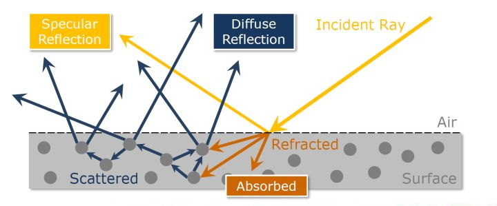
比如，上图所示，光线照到物质表面上时，光能可能一部分被镜面反射（黄色），一部分被散射（深蓝色），一部分被吸收（褐色），还有一部分被透射（图中未标识）。与之对应的能量分别是反射部分依旧是光能，吸收部分转化成热能、电能等形式，透射部分依旧还是光能，并且：
亦即入射光能与反射（包含镜面反射和散射）、吸收、透射部分的总光能相等，遵循了能量守恒定律。
PBR的BRDF也遵循了这一守恒定律，引入粗糙度、反射率等概念，使得原理上更加物理正确，渲染效果上更加真实。
4.7 PBR与光学
本节将阐述本章前几节涉及的光学理论与PBR结合的理论，特别是物质和光的交互原理及理论。主要参考了Naty Hoffman在2013~2015年（特别是2015年）的SIGGRAPH公开课中演讲的主题：《Physics and Math of Shading》。
4.7.1 光谱能量分布（SPD）
回顾一下[4.2.5.3 光的电磁理论(Electromagnetic theory)](#4.2.5.3 光的电磁理论(Electromagnetic theory))描述的电磁理论：
光是电磁波，在介质中作为能量以特定波长（Wavelength）和频率振荡着向前方传播。电磁波可被分解成电场（Electric）和磁场（Magnetic），并且它们相互垂直（如下图）。
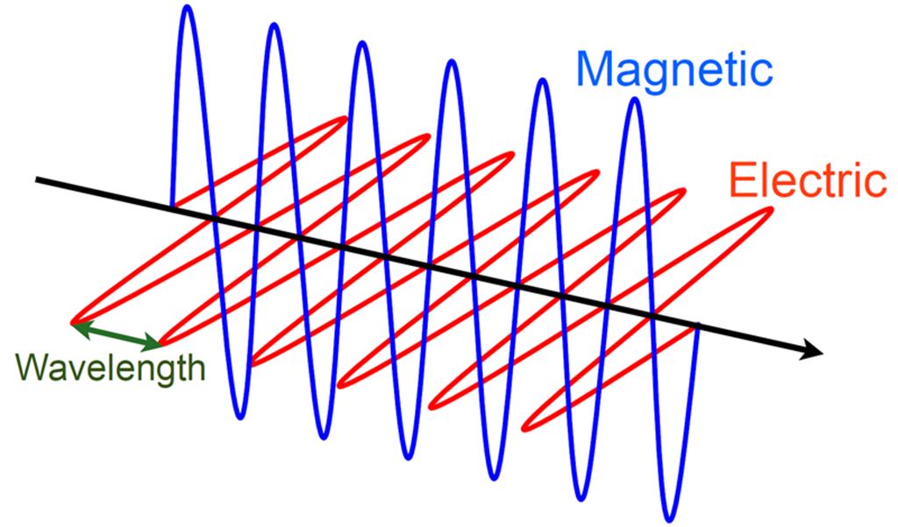
人类可见的光波波长分布在400nm~780nm之间，可见光的波长跟蜘蛛丝宽度相仿，但远小于人类头发丝的宽度（下图）。
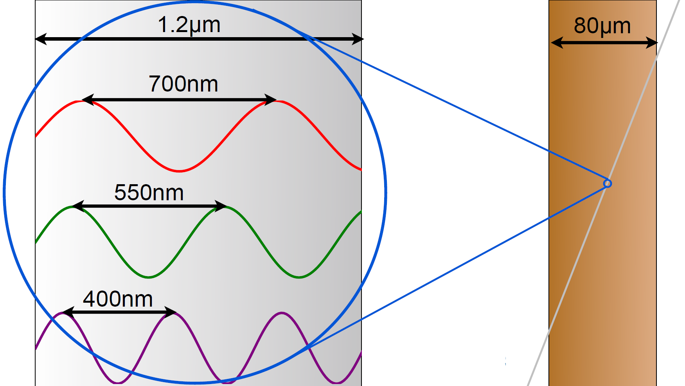
上图：可见光波长（图左）与蜘蛛丝（图右斜灰线）、人类头发丝（图右黄色区域）宽度比较。
实际上，绝大多数光包含了很多个波段的电磁场，每个波段的电磁场包含了不同的能量。比如下图的位于500~550nm波段的电磁波，在左上角的光谱能量分布（Spectral Power Distribution，SPD）中显示出了绿色光的能量。激光可以发出单色的光。
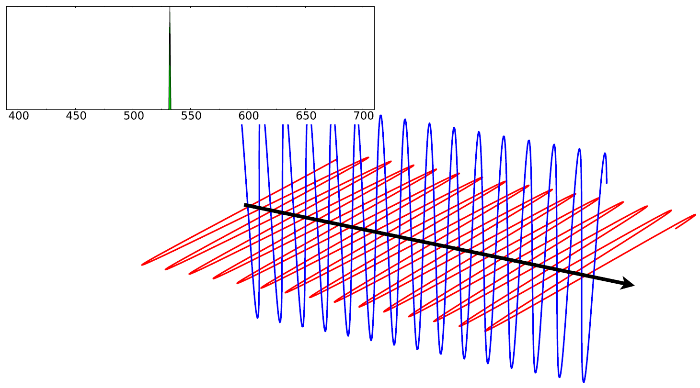
下图左R、G、B的光谱能量分布乘以各自的缩放因子，将它们的结果相加之后就成了下图右的摸样。
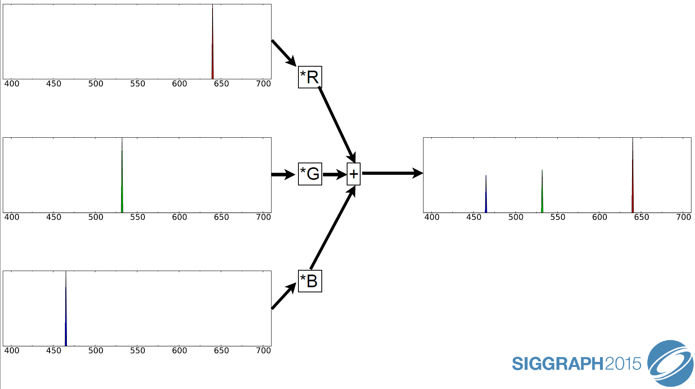
这个原理与已投入影院使用的R、G、B激光投影系统类似。
上图所示的是能量分布图，如果将它们用波形图表示，会显得更加复杂，因为涉及到光的叠加和干涉，见下图：
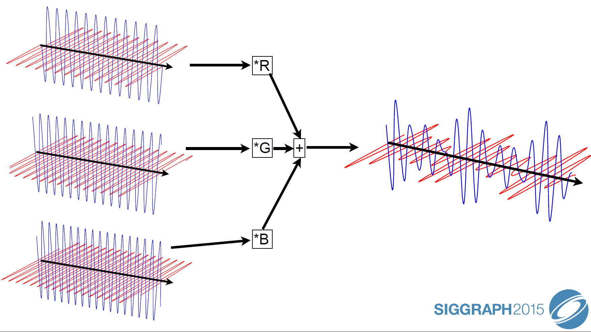
但是，由于大多数光源都不是单一波长的光波，而是有一定宽度的连续的复合光波，于是它们的最终叠加的波形更加复杂。举个例子，以标准白光光源D65为例，它的光谱能量分布图和复合波形如下：
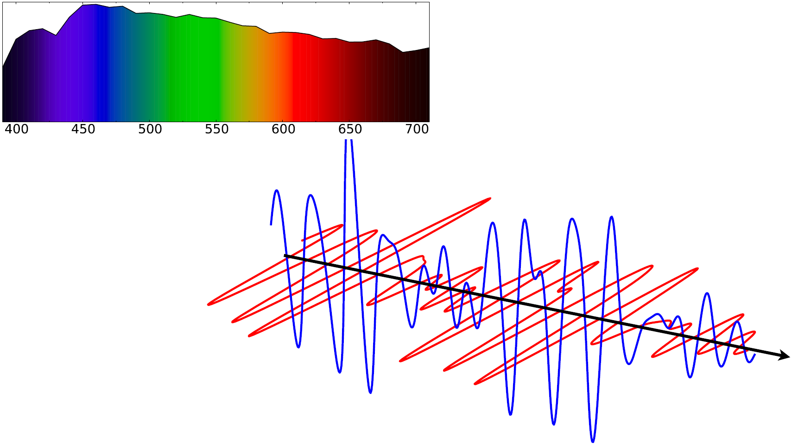
有趣的是，下图的两种SPD虽然不一样（上部分是连续的分布，下部分是离散的RGB分布），但是刚好跟人类视觉成像原理（详见[4.2.3 人眼感知可见光原理](#4.2.3 人眼感知可见光原理)）匹配，所以人类并没有发现它们之间的差别。也就是说，人类的视觉是有损的，将无限维度的SPD简化成了三维视觉空间。
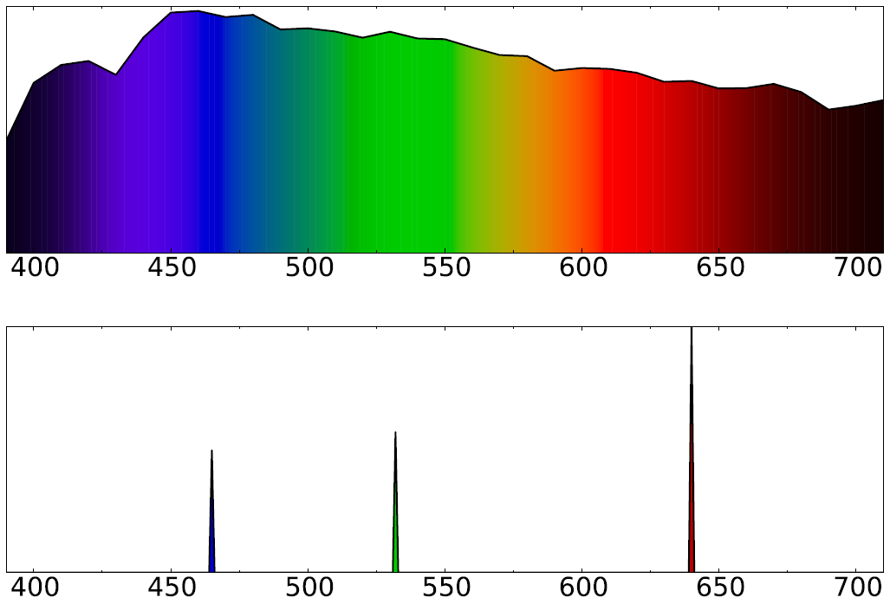
4.7.2 物质与光交互
在纳米级别，当一束电磁光波和原子或分子相遇后，会发生什么呢？
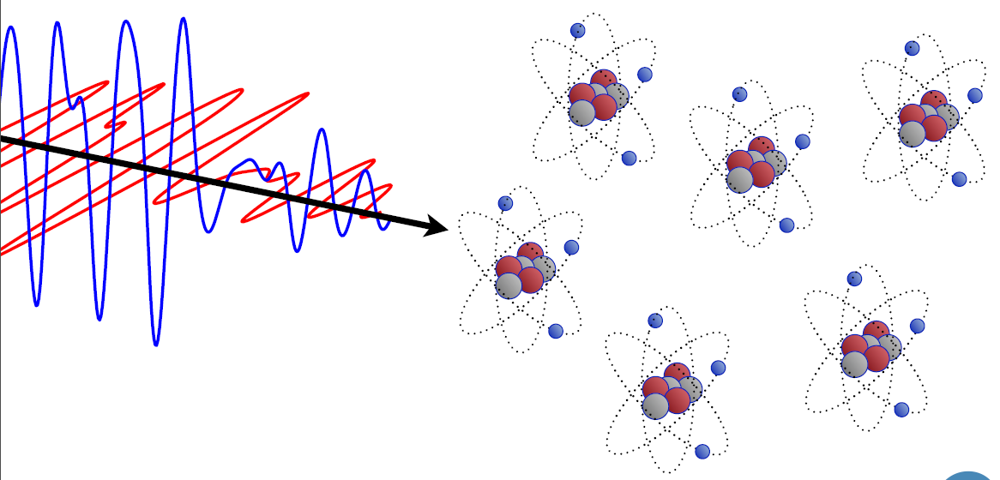
答案是，光波会引发原子、分子偏振，并且使它们的正负电荷分离，形成偶极子（dipole）。这就意味着进入的光波被吸收了。
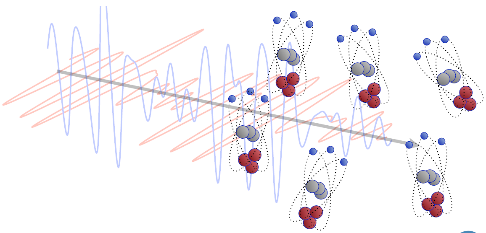
吸收了能量并且极化后的原子、分子会迅速恢复，重新向外辐射，形成二次光波。当然被吸收的部分能量可能转化成了热运动，即热能。
对均匀介质（Homogeneous Medium）来说，光线是沿着直线传播。由于所有物质在原子维度上看是不可能完全均匀的，所以均匀介质是在实践中抽象出来的概念。
在渲染技术中，会使用宏观的统计和组合为材质提供参数。这个参数就是折射率（Index of refraction，IOR），它由两个部分组成：
- 一部分描述光在介质中的速率。
- 另外一部分描述光在介质被吸收的比例。
对于介质中局部不均匀的部分将被建模成粒子（原子核等），折射率不连续的物质会散射入射光，散射出的光方向向着四面八方。
虽然这跟前面讨论的单一分子或原子的极化类似，但可以将这些微粒组合起来，形成宏观模型。
下图是吸收系数和散射系数组合成的宏观维度的材质表现图。
横轴是散射系数，从左到右可以看出物质从清澈到混浊的程度；纵轴是吸收系数，从下到上表示物质从透明（光被全透射而表现出跟入射光几乎一样的颜色）到不透明（光被全吸收而表现出与入射光不一样的颜色）的程度。比如牛奶，它是吸收系数低而散射系数高的物质，所以它表现出入射光一致的白色，并且是混浊的。有色液体能很轻易吸某些波段的光，而其它波段的就没那么容易。
从光学角度上看，最重要的事情是所有材质的表面都是粗糙的。没有表面是完全平坦的，至少在原子维度上是不规则的。原子间排布距离如果跟光波差不多或更小，就会引起一种现象，它就是之前章节涉及过的衍射。
惠根斯-菲涅尔原理（Huygens-Fresnel Principle）可以解释这个现象。当光波遇到跟它波长相仿的障碍时，会“绕弯”传播，绕到了障碍后面：
在纳米维度，当光波传播到光学平坦的表面时，惠根斯-菲涅尔原理同样适用。当与入射光碰撞后，每个粒子都会发射球面波，有些强有些弱。这些不平行的球面波结合起来，就会形成复杂的波形，在很多方向发射不一样的光：
纳米几何体（Namogeometry）越小，越少光波被衍射。入射光与单个原子碰撞后，少部分会被衍射。
现在聊回几何和射线光学，它们都是更简化的并且广泛应用于计算机图形领域。其中一种简化方法是忽略纳米级别的不规则和衍射，将光学平坦的表面当成完全平坦。由此可以应用几何光学的反射和折射定律。
很多材质表面看起来是平滑的，但实际并非如此，对于微观几何体（Microgeometry），它们一样凹凸不平：
上图的上部分由于物体更加平滑，所以在微观的表面看起来更加规则，反射的光也相对规则，宏观表现就是被反射的光更加清晰，反射的画面更容易表达出被反射物体的轮廓；而下部分由于微观更加不规则，反射的光线取向更紊乱，所以宏观表现就是高光变模糊了，被反射的物体看不清楚。
对于折射进入介质的光，会发生什么呢？
对这个问题，需要对物质的导电性进行分类，然后分开探讨：
-
导体（Conductor）：导体是金属、电解质等导电性强的物质，由于它们的微粒组合特性，会立即吸收折射光形成热运动。
-
绝缘体（Dielectric）：即电介质，指没有导电性的物质。如前面章节描述的一样，折射光进入除了透明的电介质后，小部分被吸收，相当一部分在介质内部被多次散射并重新射出表面形成漫反射。
重新被散射出介质表面的光线形成了不同的散射距离。散射距离的分布取决于散射微粒的密度和属性。
如下图所示，如果像素尺寸（绿色标识区域）大于散射距离（黄色线段），就可以无视次表面散射效果。
由于忽略次表面散射的效果，所以入射光附近的区域可以当成一个点来处理（下图），采用经典的关照计算方式，比如Lambert或Phong光照模型。
当成单点处理后，便可以将光照分成两个部分：镜面反射和漫反射（包含了折射、吸收、散射和重新折射回表面的光），见下图：
对于下图中所示的，散射范围（黄色线段）大于像素尺寸（绿色小圆区域），就不能采用上面的简化模型，而需要采取次表面散射（Subsurface scattering）渲染技术。
-
半导体（Semiconductor）：由于半导体与光交互的特性介于金属和非金属之间，在实际渲染中，常用迪尼斯原则的金属度系数来模拟半导体特性。
4.7.3 BxDF
上节讲述了物质和光的不同情况的交互原理，本节将讲述BxDF的主要类型。
目前计算机图形渲染领域，基于物理的渲染方式主要有：
-
辐射度（Radiance）：计算光源的镜面反射和漫反射占总的辐射能量的比例，从而算出颜色。在实时渲染领域，是最主流的渲染方式。BRDF大多数都是基于此种方式，包括Cook-Torrance。
-
光线追踪（Ray Tracing）：即光线追踪技术，它的做法是将摄像机的位置与渲染纹理的每个像素构造一条光线，从屏幕射出到虚拟世界，每遇到几何体就计算一次光照，同时损耗一定比例的能量，继续分拆成反射光线和折射光线，如此递归地计算，直到初始光线及其所有分拆的光线能量耗尽为止。

由于这种方式开销非常大，特别是场景复杂度高的情况，所以常用于离线渲染，如影视制作、动漫制作、设计行业等。
近年来，随着NVIDIA的RTX系列和AMD的RX系列显卡问世，它们的共同特点是硬件级别支持光线追踪，从而将高大上的光线追踪技术带入了实时渲染领域。
-
路径追踪（Path Tracing）：实际上路径追踪是光线追踪的一种改进方法。它与光线追踪不同的是，引入了蒙特卡洛方法，利用BRDF随机跟踪多条反射光线，随后根据这些光线的贡献计算该点的颜色值。
这种方法更加真实（下图），但同时也更加耗时，通常用于离线渲染领域。
上章已经详细描述了基于辐射度的Cook-Torrance的BRDF模型的理论和实现。实际上，Cook-Torrance模型在整个渲染体系中，只是冰山一角。下面是BRDF光照模型体系：
限于篇幅和本文主题，下面将介绍基于辐射度方式的BxDF光照模型。
BxDF可细分为以下几类：
-
BRDF（双向反射分布函数，Bidirectional Reflectance Distribution Function）：用于非透明材质的光照计算。Cook-Torrance就是BRDF的一种实现方式，上章详述过，不多说。
-
BTDF（双向透射分布函数，Bidirectional Transmission Distribution Function）：用于透明材质的光照计算。折射光穿透介质进入另外一种介质时的光照计算模型，只对有透明度的介质适用。
-
BSDF（双向散射分布函数，Bidirectional Scattering Distribution Function）：实际上是BRDF和BTDF的综合体：
简单地用公式表达：BSDF = BRDF + BTDF。
-
SVBRDF（空间变化双向反射分布函数，Spatially Varying Bidirectional Reflectance Distribution Function）：将含有双参数的柯西分布替代常规高斯分布引入微面元双向反射分布函数(BRDF)模型，同时考虑了目标自身辐射强度的方向依赖性，在此基础上推导了长波红外偏振的数学模型，并在合理范围内对模型做简化与修正使之适用于仿真渲染。
-
BTF（双向纹理函数，Bidirectional Texture Function）：主要用于模拟非平坦表面，参数跟SVBRDF一致。但是，BTF包含了非局部的散射效果，比如阴影、遮挡、相互反射、次表面散射等。用BTF给表面的每个点建模的方法被成为Apparent BRDFs（表面双向反射分布函数）。
-
SSS（次表面散射，也称3S，Subsurface Scattering）：它是模拟光进入半透明或者有一定透明深度的材质（皮肤、玉石、大理石、蜡烛等）后，在内部散射开来，然后又通过表面反射出来的光照模拟技术。下面是用SSS模拟的玉石效果图：
关于次表面散射方面的研究，比较好的是Jensen的文章《A Practical Model for Subsurface Light Transport》，该文提出了一个较为全面的SSS模型，将它建模成一个双向表面散射反射分布函数(BSSRDF)。
-
BSSRDF（双向表面散射分布函数，Bidirectional Surface Scattering Reflectance Distribution Function）：它常用于模拟透明材质，目前是主流技术。它和BRDF的不同之处在于，BSSRDF可以再现光线透射材质的效果，还可以指定不同的光线入射位置和出射位置：
从上面可以看出，BxDF的形式多种多样，但由于它们都是基于辐射度的光照模型，所以最终可以用以下公式抽象出来：
用更简洁的方式描述，入射光在点的颜色的计算公式：
由于篇幅问题，本文不会对BTDF、BSDF、SSS、BSSRDF进行详细讨论，有兴趣的可以另外找资料了解。笔者以后也可能另外开辟专题探讨。
本章末，值得一提的是，BRDF最终的光照计算结果是几何函数和油墨算法（ink-selection）结合的结果。
其中油墨算法描述了如何计算各颜色分量的反射率，可参看论文《A Multi-Ink Color-Separation Algorithm Maximizing Color Constancy》。
五. 高阶：PBR关联理论和推导
上章详细介绍了PBR的核心原理：光学理论和物质交互的原理。
这章将深入介绍PBR核心原理相关的理论，并对其中一些公式做推导或详细阐述，使读者对PBR的关联技术和原理有更彻底的理解。
主要面向：
- 高阶程序员
- 想全面且透彻了解PBR底层原理及理论的人
数学物理（ Mathematical Physics）是一门数学和物理相结合的学科，意图将物理现象和理论用数学公式或理论表达出来。本章主要是跟数学物理相关的内容。
5.1 微积分（Calculus）
由于微积分可以解决很多物理学上的现象或问题，比如光照辐射度量、电磁场、量场等等，所以很有必要重温一下微积分的基础知识。
微积分是数学的一门基础学科，是高等数学中研究函数的一个分支。它包含的主要内容有：
- 微分学（Differentiation）：它是一套描述函数变化率的理论及求导数的运算，将函数、速度、加速度和曲线斜率归集起来，以便用一套统一通用的符号进行讨论和计算。包含的内容：
- 极限理论（Limit Theory）
- 导数（Derivative）
- 微分（Differentiation）
- 积分学（Integration）：为定义和计算面积、体积等提供一套通用的方法。包含的内容：
- 定积分（Definite integration）
- 不定积分（Indefinite integration）
5.1.1 微分（Differentiation）
5.1.1.1 函数极限（Functional Limit）
-
极限的概念：设是给定函数，如果自变量在定义域内按照某种趋势变化时，若时，函数值与某个常数可无限接近（甚至相等），则称在此变化过程中有极限，为其极限，记做，否则称在此过程中无极限。
例如，函数，它的曲线如下图，从中可以观察到，当无限趋近于0时，也趋近于0，用公式表达就是：。
-
极限的性质（假设和均存在，为常数）：
-
-
-
-
-
-
（）
-
（极限与左、右极限的关系）
-
-
重要极限：
- 重要极限1，跟三角函数相关：
其中曲线图如下：
可以将扩展到：
利用这一重要极限，可以求得一系列涉及三角函数的极限。
- 重要极限2，跟自然常数相关，有两种表达形式：
其中是无理数，。
可以将扩展到：
\end{eqnarray*}
5.1.1.2 导数（Derivative）
-
导数的定义：
设在和有定义，则函数有增量。如果极限
存在，则称在可导，称极限值为在处的导数（其实就是斜率、变化率），可记为以下几种形式：
-
求导步骤：
- 对给定的，求出。
- 计算并化简。
- 求。
比如，求的导数，分为以下步骤：
更抽象地，对幂函数的导数：
-
求导法则：
-
基本运算求导法则：设和是的可导函数，且，则：
设为常数，则。
其它常见函数的导数：
-
复合函数求导法则：设是由和组成的复合函数，并且设可导，也可导，则复合函数的导数为：
还有其它几种等价表示形式：
以上法则也叫链式求导法则，它表明：复合函数的导数等于函数对中间变量的导数乘以中间变量
对自变量的导数。 -
反函数的导数：反函数的导数等于原来函数导数的倒数。
更具体地，设单调函数，则它的反函数是，则有：
-
隐函数的导数：如果方程确定了是的函数，那么，这样的函数叫做隐函数。
若隐函数关于可导，则可根据复合函数求导法则求出函数对的导数。
-
-
高阶导数：
一般情况下，函数的导数仍然是的函数。如果仍然可导，则把的导数称为函数的二阶导数，记作或，也可用以下表达式：
若二阶导数仍然可导，则二阶导数的导数称为函数的三阶导数，记作或。
二阶及以上的导数统称为高阶导数。
5.1.1.3 微分（Differentiation）
-
微分的定义：
设函数在点处可导，则把函数在处的导数与自变量在处的增量之积称为函数在点处的微分，记做，即，这时称函数在点处可微。
对自变量的微分，可以认为是对函数的微分，有以下等式：
故而，的微分又可记为，推导出：。
也就是说，函数的微分与自变量的微分之商是函数的导数。因此，函数的导数也叫微商（注意，跟朋友圈的微商概念不一样o_o!!）。
也就是说，函数 在处可微与可导等价。
-
微分的几何意义：
如下图所示，是曲线上的点处的切线，设它与轴正向的夹角为，则，所以，即函数在_0处相对于的微分。
也就是说，微分的几何意义是曲线上点的切线的纵坐标的改变量。
-
微分公式和法则：
由于微分，也就是说，只要求出函数的导数，即可求得对应的微分。
因而求导数和求微分的方法统称为微分法。
导数和微分之间的公式和法则高度一致：
导数公式 微分公式 导数法则 微分法则 -
一阶微分形式不变性：
不论是自变量还是中间变量，函数的微分形式总是：
此性质就是一阶微分形式不变性。
5.1.2 积分（Integration）
5.1.2.1 不定积分（Indefinite integration）
-
原函数：如果在区间上，可导函数的导函数为，即当时，即
则是在区间上的原函数。
-
原函数存在定理：连续函数一定有原函数。
-
不定积分定义：
在区间上，函数的带有任意常数项的原函数称为(或)在区间上的不定积分，记做
其中符号称为积分号，为被积函数，为被积表达式，为积分变量。
求一个函数的不定积分实际上只需求出它的一个原函数，再加上一个任意常数：
-
不定积分的性质：
-
，或
-
，或
由上面两个性质可得出：微分运算与不定积分运算互为逆运算，当它们的符号连在一起时，可抵消，抵消后可能相差一个常数。
速记口诀：先积后微，形式不变；先微后积，差一常数。
-
-
（是常数且）
与求积分变量无关的常数，可以提出积分号。
-
-
常见积分表：
-
-
积分的方法：
-
直接积分法：利用不定积分的4个性质求不定积分。
例如，求。
因为，所以。
-
换元积分法：
-
设具有原函数，可导，则有换元公式：
-
设连续，的导数也连续，且，假若
则有换元公式：
其中为的反函数。
-
-
分部积分法：
分部积分法由两个函数乘积的导数公式推导而来，最终形式：
若是分部的一部分有困难时，可以尝试另外一部分可能相对容易，这就是分部积分法的作用。
-
5.1.2.2 定积分（Definite integration）
定积分是积分学的另一个重要概念，自然科学与生产实践中的许多问题，如平面图形的面积、曲线的弧长、水压力、变力所做的功等都可以归结为定积分问题。
计算机图形学的很多计算问题也归结于定积分问题，如辐射度量、采样、卷积、预计算等等。
-
定积分的定义：
设在区间上有界，在中插入若干个分点
把区间分成个小区间
各个小区间的长度依次为
在每个小区间上任取一点，取函数值与小区间长度的乘积，再求和
记，当时，和的极限（有限）存在且的划分和无关，则成函数在上可积，且称这个极限为函数在区间上的定积分（简称积分），记作
其中称为被积函数，为被积表达式，为积分变量，为积分下限，为积分上限，为积分区间。
-
定积分性质：
-
设在区间上连续，则在上可积。
-
设在区间上有界，且只有有限个间断点，则在上可积。
-
当时，
-
当时，
-
-
-
设，则
-
设，，则
-
设，且，则
-
设，且，则
-
定积分估值定理：如果，即、分别是在区间的最小、最大值，那么
-
定积分中值定理：如果函数在上连续，则至少存在一点，使得
-
如果函数在区间上连续，则积分上限的函数
在上可导，并且它的导数
-
如果函数在区间上连续，则函数
就是在区间上的一个原函数。
-
牛顿-莱布尼兹公式（Newton-Leibniz Formula）：如果函数是连续的，是在区间上的一个原函数，则
也叫微积分基本公式。它揭示了被积函数与原函数之间的联系，说明一个连续函数在区间上的定积分等于它的任意一个原函数在区间上的增量，它为定积分的计算提供了一个简单而有效的方法。
-
-
定积分的方法：
有换元法、分部积分法，跟不定积分类似，唯一的区别是加了区间限制，不再累述。
微积分就介绍到这里了，其它更多高级的概念和性质，如多元微积分、多重微积分、无穷级数、幂级数等等，可以另外找资料，也可以在参考文献里寻得。
5.2 辐射度量（Radiometry，Radiation Measure）
章节[3.1.3 反射方程](#3.1.3 反射方程（Reflectance Equation）)和[4.2.6 光的能量](#4.2.6 光的能量)已经列出了辐射度量的基本概念、符合、公式，本小节将做一些补充。
5.2.1 立体角（Solid Angle）
在二维平面几何中，弧度（Radian，rad）是测量角度的标准单位，表示了与圆心角与其对应的圆弧长度的关系，见下图：

上图动态地描述了圆半径如何转化成圆弧，以及圆心角与弧度的对应关系。
可以明显看出，弧度只是衡量角度大小，跟半径无关，所以弧度的计算方式是圆弧的长度除以圆半径：
如果对角度和弧长进行微分，就可用微分的方式表达（表示微分的弧长）：
同样地，在三维立体几何中，也有跟弧度类似的概念，用来衡量三维球体的圆心角，它就是立体角（宏观符号，微分符号）。
立体角的定义，用公式表达就是：
从上面可以看出，立体角与球体半径无关，由于是三维立体空间，且1单位立体角的球表面面积为（上图），所以半径的影响因子就是，用宏观符号公式表达：
其中（Steradian）是立体角的单位，叫立体弧度或球面度。
若对立体角和球表面面积微分，可得到微分形式的公式：
利用Spherical Cap的面积公式，可求得半个球体的立体角：
也就是说半个球体的立体角为，整个球体的立体角为：
5.2.2 辐射强度（Radiant Intensity）

辐射强度指通过单位立体角的辐射通量。用符号表示，单位W，微分公式：
既然已有了辐照度和辐射度，为什么还要引入辐射强度呢？
原因是在计算辐射时，有时会考虑某个点的通量的密度，但一个点的面积是0，无法用辐照度和辐射度的公式，故而引入跟面积无关的辐射强度。而辐射强度之所以跟面积无关，是因为立体角只跟角度相关，跟球体的半径、距离、面积无关。
也就是说，由于立体角不会随距离变化而变化，辐射强度不会随距离变化而变化，不像点光源的辐照度会随距离增大而衰减。
5.2.3 辐射率（Radiance）
辐射率是测量微小方向照到微小表面的通量，即每单位面积每单位立体角的辐射通量密度。用公式表达：
辐射率实际上就是材质的颜色，在基于物理着色时，计算表面一点的颜色就是计算它的辐射率。
辐射率不会随距离变化而衰减，这和真实世界的物理原理一致：在没有空气干扰的情况下，我们看到的物体颜色并不会随距离变化而变化。
5.3 公式推导
5.3.1 麦克斯韦方程组（Maxwell's equations）
既然光的很多现象，包括反射、折射定律都可以用麦克斯韦方程组解释，那我们就有必要揭开它的神秘面纱。
麦克斯韦方程组是描述了电场、磁场与电荷密度、电流密度之间关系的偏微分方程。利用麦克斯韦方程组，可以推论出电磁波在真空中以光速传播，并进而做出光是电磁波的猜想。
实际上，麦克斯韦方程组虽然由英国物理数学家詹姆斯·克拉克·麦克斯韦（James Clerk Maxwell）提出，但最初提出来时有20个方程和20个变量。后来由英国物理学家奥利弗·赫维赛德（Oliver Heaviside）和美国物理数学家约西亚·威拉德·吉布斯（Josiah Willard Gibbs）以矢量分析的形式重新表达，也就是现在我们使用的形式。
麦克斯韦方程组和洛伦兹力方程是经典电磁学的基础方程。从这些基础方程的相关理论，发展出现代的电力科技与电子科技。
它由4个方程组成：
- 高斯定律（Gauss' law）：描述电场与空间中电荷分布的关系。
- 高斯磁定律（Gauss's law for magnetism）：表明磁场的散度等于零，也就是说进入任何区域的磁场线，必需从该区域离开。
- 法拉第定律（Faraday's law）：描述时变磁场怎样感应出电场。
- 麦克斯韦-安培定律（Ampère's law with Maxwell's addition）：阐明磁场的产生方式有两种：一种是靠传导电流；另一种是靠时变电场，或称位移电流。
5.3.1.1 高斯定律（Gauss' law）
高斯定律表明在静电场中，穿过任一封闭曲面的电场通量只与封闭曲面内的电荷的代数和有关，且等于封闭曲面的电荷的代数和除以真空中的电容率。用积分形式表达的公式：
其中，是穿过封闭曲面的电场通量，是封闭曲面内的总电荷，是真空中的电容率。
若是更严谨一些，引入封闭曲面和及封闭曲面包含的体积，则有积分形式的公式：
其中是电场，是是封闭曲面的一块极小的面积，表示封闭曲面面积，有些文献会写成、、，表达的都是曲面面积。
还可以用微分的形式表达：
其中是电场散度，是电荷密度。
由于微分形式是从微观层面描述的，从宏观维度上，可表达成：
其中表示电场散度，表示材质电容率，表示电场。此公式只适应与均匀、各向同性、非分散的线性物质。
5.3.1.2 高斯磁定律（Gauss's law for magnetism）
高斯磁定律表明磁场的散度等于零，因此磁场是一个螺线矢量场，还可以推断磁单极子不存在（下图）。磁的基本实体是磁偶极子，而不是磁荷。
用微分形式的公式：
表示磁场的散度。
同样地，可以用积分形式：
5.3.1.3 法拉第定律（Faraday's law）
法拉第定律描述时变磁场怎样感应出电场。在积分形式，它表明在闭环移动电荷所需的每单位电荷的工作量等于通过封闭表面的磁通量的减少速率。微分形式：
积分形式：
5.3.1.4 麦克斯韦-安培定律（Ampère's law with Maxwell's addition）
麦克斯韦-安培定律表明，磁场的产生有两种：
- 靠传导电流，也就是原本的安培定律；
- 靠时变电场，也被称作位移电流，这点是麦克斯韦修正项所提出。
微分形式的公式：
积分形式复杂一些：
由于标准的无法表示闭合曲面的符号，可能跟维基百科的有些出入，具体参看维基百科的麦克斯韦方程组。
5.3.2 几何光学基本定律的推导
几何光学有三条基本定律：
- 第一定律：入射波、反射波、折射波的波矢，与界面的法线共同包含于入射平面（下图）。
- 第二定律：反射角等于入射角。这定律称为反射定律。
- 第三定律：，也叫斯涅尔定律或折射定律。
它们可以由麦克斯韦方程组推导出来。
光波是电磁辐射，必须满足麦克斯韦方程组与伴随的边界条件，其中一条边界条件为，在边界的临近区域，电场平行于边界的分量必须具有连续性。假设边界为xy-平面，则在边界，有：
其中，、 、分别为在入射波、反射波、折射波（透射波）的电场平行于边界的分量。
假设入射波是频率为的单色平面波，则为了在任意时间满足边界条件，反射波、折射波的频率必定为 。设定 、、的形式分别为
、
、
，
其中，、 、分别是入射波、反射波、折射波的波矢，、、分别是入射波、反射波、折射波的波幅（可能是复值）。
为了在边界任意位置满足边界条件，相位变化必须一样，必须设定
。
因此，
、
。
不失一般性，假设，则立刻可以推断第一定律成立，入射波、反射波、折射波的波矢，与界面的法线共同包含于入射平面。
从波矢x-分量的相等式，可以得到
。
而在同一介质里，。所以，第二定律成立，入射角等于反射角。
应用折射率的定义式：
，
可以推断第三定律成立：
；
其中，、分别是折射介质的折射率与折射角。
从入射波、反射波、折射波之间的相位关系，就可以推导出几何光学的三条基础定律。
此外，还可以用费马原理、惠更斯原理、平移对称性推导出来，更多参看维基百科的Snell's Law。
5.3.3 Cook-Torrance BRDF推导
本节参考了基于物理着色：BRDF的公式推导部分。
假设有一束光照射到微表面上，入射光方向，视线方向，对反射到方向的反射光有贡献的微表面法线为半角向量，则这束光的微分通量是：
其中是法线为半角向量的微分微表面面积，为在入射光线方向的投影，为入射光线和微表面法线的夹角。
Torrance-Sparrow将微分微表面面积定义为，Torrance-Sparrow将前两项解释为单位面积微平面中朝向为的微分面积。
要从一组微表面面积dA中得到朝向为的微表面面积，只需要将定义为中朝向为的比例，取值范围在就可以了。这里引入的实际用途稍后再讨论。
由上两式可得：
设定微表面反射光线遵循菲涅尔定理，则反射通量：
由上两式可得反射辐射率：
由BRDF的定义可得：
这里需要特别强调几个夹角：
- 是入射光线与朝向为的微表面法线的夹角
- 是入射光线与宏观表面法线的夹角
- 是反射光线与宏观表面法线的夹角
回到反射方程：
它是对积分，而上式分母包含，可以通过找到的关系，把消掉。塞入并不会影响方程的合理性，因为是可以调整的，现在是一个有单位的量，单位为。
继续和关系的推导：
如上图，入射光线照射到一个微表面上，与微表面的单位上半球相交于点，与微表面相交于点，反射光线与单位上半球相交于点，反射光束立体角（图中是）等于光束与单位上半球相交区域面积，法线立体角（图中是）等于法线立体角与单位上半球相交区域面积，因此求等价于求。
连线与法线相交于点，则，由于与半径的比值等于，而面积为，与半径的平方成正比，所以
连线长度为1，长度为，所以
而
由以上几式可得
需要注意的是，上图中的实际上是微表面的半角，所以
因此
前面讲到过并非所有朝向为的微表面都能接受到光照（Shadowing），也并非所有反射光照都能到达观察者（Masking），考虑几何衰减因子G的影响，最终得出Cook-Torrance公式：
5.4 预计算技术
在第三章阐述PBR的Cook-Torrance原理和实现的时候，提及过很多预渲染技术，诸如：Cubemap、HDR环境光等。本章节主要是讲解这些预计算或预卷积的技术，为将耗时的部分提前渲染，以便减轻实时光照时的渲染消耗。
5.4.1 立方体图卷积（Cubemap convolution）
立方体图卷积是以离线的方式预先为场景的辐照度求解所有漫反射间接光照的积分。为了解决积分问题，必须对每个片元在半球内的所有可能方向对场景的辐射进行采样。
然而，代码实现上不可能在半球从每个可能的方向采样环境的照明，可能的方向数量在理论上是无限的。但可以通过采用有限数量的方向或样本来近似方向的数量，均匀间隔或从半球内随机取得，以获得相当精确的辐照度近似，从而有效地用离散的方法求解积分。
即便采用离散的近似方法，对于每个片元实时执行此操作仍然太昂贵，因为样本数量仍然需要非常大才能获得不错的结果，因此通常采用预计算解决实时的消耗问题。由于半球的朝向决定所需捕获辐照度的位置，可以预先计算每个可能的半球方向的辐照度，所有采样的半球环绕着所有传出的方向：
给定任意方向向量后，就可以预计算的辐照度图进行采样。为了确定小块表面的间接漫射（辐照）光的数量，可以从半球的整个辐照度中采样出围绕其表面法线的总辐照度。取得场景的辐照度的代码很简单：
vec3 irradiance = texture(irradianceMap, N);
为了生成辐照度图，需要将环境的光照卷积转换为立方体图。鉴于对于每个片段，表面的半球沿着法向量定向，对立方体图进行卷积等于计算沿着法线的半球内的每个方向的总平均辐射度。

[3.3.1.2 从球体图到立方体图](#3.3.1.2 从球体图到立方体图)描述了如何从球体图转换成立方体贴图，这样就可以直接获取转换后的立方体贴图，以便在片段着色器中对其进行卷积，并使用朝向所有6个面部方向呈现的帧缓冲区将其计算结果放到新的立方体贴图中。由于已经描述了将球体图转换为立方体图，可以采用类似的方法和代码：
#version 330 core
out vec4 FragColor;
in vec3 localPos;
uniform samplerCube environmentMap;
const float PI = 3.14159265359;
void main()
{
// the sample direction equals the hemisphere's orientation
vec3 normal = normalize(localPos);
vec3 irradiance = vec3(0.0);
[...] // convolution code
FragColor = vec4(irradiance, 1.0);
}
用environmentMap从球体HDR环境图转换到HDR立方体图。
卷积环境贴图有很多种方法，此处将为半球上的每个立方体贴图像素生成固定数量的样本方向向量围绕半球并平均结果。固定量的样本向量将均匀地分布在半球内部。注意，积分是连续函数，并且在给定固定量的样本向量的情况下离散地采样积分函数只是近似值。如果使用的样本向量越多，就越接近积分实际值，但同时预计算过程越慢。
围绕着立体角的反射方程的积分很难处理，所以用其等效的球面坐标和。

我们使用极面方位角在半球环之间采样，其角度范围是和，并使用仰角，其角度范围是和 ，这样可方便地对半球进行采样。采用球面角度后的反射公式：
用黎曼和的方法以及给定的、球面坐标采样数量，可将积分转换为以下离散版本：
当离散地对两个球面值进行采样时，仰角越高，面积越小，如上图所示。如果不对面积差进行处理，就会出现累积误差。为了弥补较小的区域，可以增加额外的值来缩放的权重。
给定每个片段调用的积分球面坐标对半球进行离散采样转换为以下代码：
vec3 irradiance = vec3(0.0);
vec3 up = vec3(0.0, 1.0, 0.0);
vec3 right = cross(up, normal);
up = cross(normal, right);
float sampleDelta = 0.025;
float nrSamples = 0.0;
for(float phi = 0.0; phi < 2.0 * PI; phi += sampleDelta)
{
for(float theta = 0.0; theta < 0.5 * PI; theta += sampleDelta)
{
// spherical to cartesian (in tangent space)
vec3 tangentSample = vec3(sin(theta) * cos(phi), sin(theta) * sin(phi), cos(theta));
// tangent space to world
vec3 sampleVec = tangentSample.x * right + tangentSample.y * up + tangentSample.z * normal;
irradiance += texture(environmentMap, sampleVec).rgb * cos(theta) * sin(theta);
nrSamples++;
}
}
irradiance = PI * irradiance * (1.0 / float(nrSamples));
通过指定一个固定的sampleDelta值来遍历半球，减小或增加样本增量将分别增加或减少准确度。
在两个for循环内，采用球面坐标将它们转换为3D笛卡尔样本向量，将样本从切线空间转换为世界空间，并使用此样本向量直接对HDR环境贴图进行采样。循环的最后将每个样本结果添加到irradiance，并除以采样的总数，得到平均采样辐照度。请注意，缩放采样的颜色值是cos(theta)，因为光线在较大的角度处较弱，并且sin(theta)是为了弥补较高仰角的半球区域中面积较小的样本区域。
5.4.2 预过滤HDR环境图（Pre-filtering HDR environment map）
预过滤环境图与预卷积辐照图非常相似。不同之处在于，需要考虑粗糙度并在预过滤环境图的不同mip级别中按顺序地存储更粗糙的反射。
通过使用球面坐标生成均匀分布在半球上的样本向量来对环境贴图进行复杂处理的方法，虽然这个方法适用于辐照度，但对于镜面反射效果较差。当涉及镜面反射时，基于表面的粗糙度，光在通过法线附近的反射就越粗糙，范围越大：

光线反射后所有可能的出射光形成的形状被称为镜面波瓣。随着粗糙度的增加，镜面波瓣的大小增加; 并且镜面波瓣的形状在变化的入射光方向上变化。因此，镜面波瓣高度取决于材质。
当谈到微表面模型时，可以将镜面波瓣想象为给定一些入射光方向的微平面中间向量的反射方向。当看到的大多数光线最终反射在微平面中间矢量周围的镜面波瓣中，这样的方法生成的样本向量才是有意义的，这个处理过程就是重要性采样（Importance sampling）。
5.4.2.1 蒙特卡洛（Monte Carlo）积分和重要性采样（Importance sampling）
为了充分掌握重要性采样的重要性，需要先深入研究已知的数学方法：蒙特卡洛积分。
蒙特卡洛积分主要围绕着统计和概率理论的组合。它帮我们离散地解决了一个群体统计或重要性的问题，而不必考虑所有群体。
例如，假设想要计算一个国家所有公民的平均身高。为了得到结果，可以测量每个公民并平均他们的身高，这将提供确切**的答案。但是，由于大多数国家人口众多，这不是一个现实的方法：需要花费太多的精力和时间。
另一种方法是选择一个小得多的完全随机（无偏差）的人口子集，测量他们的身高并平均结果。这个人口可能只有100人。虽然不如确切的答案准确，但也会得到一个相对接近真相的答案，它被称为大数定律（Law of large numbers）。这个方法是，如果测量一个较小数量的子集，它从总人口中得到真正随机的样本，结果将与真实答案相对接近，并且随着样本数量的增加而变得更接近实际结果。
蒙特卡罗积分建立在这个大数定律的基础上，并采用相同的方法来求解积分。从总人口和平均值中随机抽取的方式简单地生成样本值，而不是为所有可能的（理论上无限的）样本值求解积分。如增加得到的结果更接近积分的确切答案：
为了解决积分，我们采取用从人口到中随机抽样，将它们加在一起并除以样本总数以平均它们。该 代表着概率密度函数（Probability density function），它表明特定样本在整个样本集上发生的概率。例如，人口高度的看起来有点像这样：

从该图中可以看出，如果我们采用任意随机样本的人口，那么挑选高度为1.70的人的样本的可能性更高，而样本高度为1.50的概率较低。
当涉及蒙特卡罗积分时，一些样本可能比其他样本具有更高的生成概率。这就是为什么对于任何一般的蒙特卡罗估计，我们根据将采样值除以采样概率。到目前为止，在估算积分的每个例子中，生成的样本是均匀的，具有完全相同的生成几率。到目前为止我们的估计是不偏不倚，这意味着，鉴于样本数量不断增加，我们最终将会收敛到积分的精确解。
但是，蒙特卡罗的一些样本是有偏倚的，意味着生成的样本不是完全随机的，而是聚焦于特定的值或方向。这些有偏倚的蒙特卡罗估计有一个更快的收敛速度，这意味着它们可以以更快的速度收敛到精确值。但是，由于此方法的偏向性质，它们可能永远不会收敛到精确值。这通常是可接受的平衡，特别是在计算机图形学中，因为只要结果在视觉上可接受，精确的解决方案就不太重要。正如我们很快就会看到重要性采样（使用偏置估计器）所生成的样本偏向于特定方向，在这种情况下，我们通过将每个样本乘以或除以其对应的来达到这一点。
蒙特卡罗积分在计算机图形学中非常普遍，因为它是以离散和有效的方式近似连续积分的一种相当直观的方式：取任何面积或体积进行采样（如半球），生成区域/体积内的随机样本量和总和，并权衡每个样本对最终结果的权重。
蒙特卡洛积分是一个广泛的数学主题，这里不会深入研究具体细节，但会提到有多种方法可以生成随机样本。默认情况下，每个样本都是完全随机（伪随机）的，因为我们习惯了，但是通过利用半随机序列的某些属性，我们可以生成仍然是随机的但具有有趣属性的样本向量。例如，我们可以用低差异序列（Low-discrepancy sequences）对蒙特卡洛进行积分，以生成随机样本，且每个样本分布更均匀：

图左：完全伪随机序列生成的采用点；图右：低差异序列生成的采样点。可以看出右边的更均匀。
当使用低差异序列生成蒙特卡罗样本向量时，该过程称为准蒙特卡罗积分（Quasi-Monte Carlo integration）。准蒙特卡罗方法有更快的收敛速度，这使它们对性能繁重的应用程序感兴趣。
鉴于新获得的蒙特卡罗和准蒙特卡罗积分的知识，我们可以使用一个有趣的属性来实现更快的收敛速度，它就是重要性采样（ Importance sampling）。当涉及光的镜面反射时，反射光向量被约束在镜面波瓣中，其尺寸由表面的粗糙度决定。看到镜面外的任何（准）随机生成的样本与镜面积分无关，将样本生成集中在镜面波瓣内是有意义的，代价是蒙特卡罗估计有偏差。
重要性采样是这样的：在一些区域内生成样本向量，该区域受到围绕微平面中间向量的粗糙度的约束。通过将准蒙特卡罗采样与低差异序列相结合并使用重要性采样偏置采样向量，可以获得高收敛率。因为以更快的速度到达解决方案，所以只需要更少的样本来达到足够的近似值。因此，该组合甚至允许图形应用程序实时解决镜面反射积分，尽管它仍然比预先计算结果慢得多。
5.4.2.2 低差异序列（Low-discrepancy sequence）
这里，将通过基于准蒙特卡罗方法的随机低差异序列，使用重要性采样预先计算间接反射方程的镜面反射部分。本小节使用的序列称为哈默斯利序列（Hammersley Sequence）。哈默斯利序列序列基于范德科皮特（Van Der Corpus）序列，它将以基数表示的自然数列反转可得结果。
鉴于一些巧妙的技巧，我们可以非常有效地产生，我们将用它来获得一个序列哈默斯利样品着色器程序范德语料库序列，N是总样本：
// 反转的范德科皮特序列
float RadicalInverse_VdC(uint bits)
{
bits = (bits << 16u) | (bits >> 16u);
bits = ((bits & 0x55555555u) << 1u) | ((bits & 0xAAAAAAAAu) >> 1u);
bits = ((bits & 0x33333333u) << 2u) | ((bits & 0xCCCCCCCCu) >> 2u);
bits = ((bits & 0x0F0F0F0Fu) << 4u) | ((bits & 0xF0F0F0F0u) >> 4u);
bits = ((bits & 0x00FF00FFu) << 8u) | ((bits & 0xFF00FF00u) >> 8u);
return float(bits) * 2.3283064365386963e-10; // / 0x100000000
}
// ----------------------------------------------------------------------------
// 哈默斯利序列
vec2 Hammersley(uint i, uint N)
{
return vec2(float(i)/float(N), RadicalInverse_VdC(i));
}
GLSL代码Hammersley函数给出了总样本集为的低差异样本。
并非所有与OpenGL的驱动程序都支持位运算符（例如WebGL和OpenGL ES 2.0），在这种情况下，我们可能希望使用不依赖于位运算符的替代版Van Der Corpus Sequence：
float VanDerCorpus(uint n, uint base)
{
float invBase = 1.0 / float(base);
float denom = 1.0;
float result = 0.0;
for(uint i = 0u; i < 32u; ++i)
{
if(n > 0u)
{
denom = mod(float(n), 2.0);
result += denom * invBase;
invBase = invBase / 2.0;
n = uint(float(n) / 2.0);
}
}
return result;
}
// ----------------------------------------------------------------------------
vec2 HammersleyNoBitOps(uint i, uint N)
{
return vec2(float(i)/float(N), VanDerCorpus(i, 2u));
}
请注意，由于旧硬件中的GLSL循环限制，序列会循环遍历32位能表示的所有数。这个版本性能较差，但可以在所有硬件上运行。
值得一提的是，生成低差异序列的方法还有很多：
- Random numbers
- Additive recurrence
- van der Corput sequence
- Halton sequence
- Hammersley set
- Sobol sequence
- Poisson disk sampling
详细请参看Low-discrepancy sequence。
5.4.2.3 GGX重要性采样（GGX Importance sampling）
我们将基于表面粗糙度生成偏向于微表面中间矢量的一般反射方向的样本矢量来取代统一或随机（蒙特卡罗）地在积分半球上生成样本向量。采样过程将类似于之前的过程：开始一个大循环，生成一个随机（低差异）序列值，取序列值在切线空间中生成一个样本向量，转换到世界空间并采样场景的辐射。不同的是，我们现在使用低差异序列值作为输入来生成样本向量：
const uint SAMPLE_COUNT = 4096u;
for(uint i = 0u; i < SAMPLE_COUNT; ++i)
{
// 使用Hammersley序列
vec2 Xi = Hammersley(i, SAMPLE_COUNT);
另外，为了构建样本向量，我们需要一些方法来定向和偏置原本朝向某些表面粗糙度的镜面波瓣的样本向量。我们可以按照章节[3.1.4 双向反射分布函数（BRDF）](#3.1.4 双向反射分布函数（BRDF）)中的描述获取NDF ，并将GGX NDF结合在Epic Games所描述的那样球形采样向量：
vec3 ImportanceSampleGGX(vec2 Xi, vec3 N, float roughness)
{
float a = roughness*roughness;
float phi = 2.0 * PI * Xi.x;
float cosTheta = sqrt((1.0 - Xi.y) / (1.0 + (a*a - 1.0) * Xi.y));
float sinTheta = sqrt(1.0 - cosTheta*cosTheta);
// from spherical coordinates to cartesian coordinates
vec3 H;
H.x = cos(phi) * sinTheta;
H.y = sin(phi) * sinTheta;
H.z = cosTheta;
// from tangent-space vector to world-space sample vector
vec3 up = abs(N.z) < 0.999 ? vec3(0.0, 0.0, 1.0) : vec3(1.0, 0.0, 0.0);
vec3 tangent = normalize(cross(up, N));
vec3 bitangent = cross(N, tangent);
vec3 sampleVec = tangent * H.x + bitangent * H.y + N * H.z;
return normalize(sampleVec);
}
这给了我们一个样本向量，它基于一些输入粗糙度和低差异序列值，并且在预期的微表面中间向量的周围。请注意，根据迪斯尼原则的PBR研究，Epic Games使用平方粗糙度来获得更好的视觉效果。
用低差异序列的Hammersley序列和样本生成为我们提供了最终确定预过滤卷积着色器：
#version 330 core
out vec4 FragColor;
in vec3 localPos;
uniform samplerCube environmentMap;
uniform float roughness;
const float PI = 3.14159265359;
float RadicalInverse_VdC(uint bits);
vec2 Hammersley(uint i, uint N);
vec3 ImportanceSampleGGX(vec2 Xi, vec3 N, float roughness);
void main()
{
vec3 N = normalize(localPos);
vec3 R = N;
vec3 V = R;
const uint SAMPLE_COUNT = 1024u;
float totalWeight = 0.0;
vec3 prefilteredColor = vec3(0.0);
for(uint i = 0u; i < SAMPLE_COUNT; ++i)
{
vec2 Xi = Hammersley(i, SAMPLE_COUNT);
vec3 H = ImportanceSampleGGX(Xi, N, roughness);
vec3 L = normalize(2.0 * dot(V, H) * H - V);
float NdotL = max(dot(N, L), 0.0);
if(NdotL > 0.0)
{
prefilteredColor += texture(environmentMap, L).rgb * NdotL;
totalWeight += NdotL;
}
}
prefilteredColor = prefilteredColor / totalWeight;
FragColor = vec4(prefilteredColor, 1.0);
}
根据输入的粗糙度预先过滤环境，这些粗糙度在预过滤器立方体贴图的每个mipmap级别（从0.0到1.0）中变化，并将结果存储在prefilteredColor中。得到的预过滤颜色除以总样品权重，其中对最终结果影响较小的样品（对于小NdotL）对最终重量的权重较小。
5.4.2.3 预过滤卷积瑕疵
虽然上述的预过滤图在大多数情况下都能正常，但总会遇到一些瑕疵。下面列出最常见的，包括如何解决它们。
- Cubemap高粗糙度的接缝
在具有粗糙表面的表面上对预滤镜图进行采样意味着在其一些较低的mip级别上对预滤镜图进行采样。对立方体贴图进行采样时，默认情况下，OpenGL不会在立方体贴图面上进行线性插值。由于较低的mip级别都具有较低的分辨率，并且预滤波器映射与较大的样本波瓣进行了卷积，因此立方体面之间的滤波的瑕疵变得非常明显：

幸运的是，OpenGL为我们提供了通过启用GL_TEXTURE_CUBE_MAP_SEAMLESS来正确过滤立方体贴图面的选项：
glEnable(GL_TEXTURE_CUBE_MAP_SEAMLESS);
只需在应用程序启动时的某个位置启用此属性，接缝就会消失。
- 预过滤卷积中的亮点
由于镜面反射中的高频细节和剧烈变化的光强度，使镜面反射卷积需要大量样本以适当地解析HDR环境反射的广泛变化的性质。我们已经采集了大量样本，但在某些环境中，在某些较粗糙的mip级别上可能仍然不够，在这种情况下，将开始看到明亮区域周围出现点状图案：

一种选择是进一步增加样本数，但这对所有环境都还不足够。可以通过（在预过滤卷积期间）不直接对环境贴图进行采样来减少这种伪影，而是基于积分的PDF和粗糙度对环境贴图的mip级别进行采样：
float D = DistributionGGX(NdotH, roughness);
float pdf = (D * NdotH / (4.0 * HdotV)) + 0.0001;
float resolution = 512.0; // resolution of source cubemap (per face)
float saTexel = 4.0 * PI / (6.0 * resolution * resolution);
float saSample = 1.0 / (float(SAMPLE_COUNT) * pdf + 0.0001);
float mipLevel = roughness == 0.0 ? 0.0 : 0.5 * log2(saSample / saTexel);
不要忘记在环境贴图上启用三线性过滤，以便从以下位置对其mip级别进行采样：
glBindTexture(GL_TEXTURE_CUBE_MAP, envCubemap);
glTexParameteri(GL_TEXTURE_CUBE_MAP, GL_TEXTURE_MIN_FILTER, GL_LINEAR_MIPMAP_LINEAR);
然后让OpenGL 在设置立方体贴图的基本纹理后生成mipmap ：
// convert HDR equirectangular environment map to cubemap equivalent
[...]
// then generate mipmaps
glBindTexture(GL_TEXTURE_CUBE_MAP, envCubemap);
glGenerateMipmap(GL_TEXTURE_CUBE_MAP);
这种效果非常好，并且可以在粗糙表面上的预过滤图中删除大多数点。
5.4.3 预计算BRDF
在预过滤环境启动和运行的情况下，我们可以关注分裂和近似的第二部分：BRDF。让我们再次简要回顾一下镜面分裂和近似：
我们已经在不同粗糙度级别的预过滤图中预先计算了分裂和近似的左侧部分。右侧要求我们在角度上收集BRDF方程、表面粗糙度和菲涅耳的。这类似于将镜面BRDF与纯白环境或1.0的恒定辐射进行积分。将BRDF压缩为3个变量有点多，但我们可以将移出镜面BRDF方程式：
是菲涅耳方程。将菲涅耳分母移动到BRDF给出了以下等效方程：
用Fresnel-Schlick近似法代替最右边的可得到：
再进一步地，用替换，将更容易解决：
然后拆分菲涅耳函数成两个积分：
由于是常量，可以从积分号内移出。接下来，我们替换回原来的形式，得到最终的BRDF方程：
两个得到的积分分别代表了的缩放和偏移。请注意，作为已包含一个项，所以项都从f$中删除了！
以类似于早期卷积环境图的方式，我们可以在其输入上卷积BRDF方程：和之间的角度和粗糙度，并将卷积的结果存储在2D查找纹理（LUT）中。
BRDF卷积着色器在2D平面上运行，使用其2D纹理坐标直接作为BRDF卷积的输入（NdotV和roughness）。卷积代码很大程度上类似于预过滤卷积，不同之处在于它现在根据我们的BRDF几何函数和Fresnel-Schlick的近似值处理样本向量：
vec2 IntegrateBRDF(float NdotV, float roughness)
{
vec3 V;
V.x = sqrt(1.0 - NdotV*NdotV);
V.y = 0.0;
V.z = NdotV;
float A = 0.0;
float B = 0.0;
vec3 N = vec3(0.0, 0.0, 1.0);
const uint SAMPLE_COUNT = 1024u;
for(uint i = 0u; i < SAMPLE_COUNT; ++i)
{
vec2 Xi = Hammersley(i, SAMPLE_COUNT);
vec3 H = ImportanceSampleGGX(Xi, N, roughness);
vec3 L = normalize(2.0 * dot(V, H) * H - V);
float NdotL = max(L.z, 0.0);
float NdotH = max(H.z, 0.0);
float VdotH = max(dot(V, H), 0.0);
if(NdotL > 0.0)
{
float G = GeometrySmith(N, V, L, roughness);
float G_Vis = (G * VdotH) / (NdotH * NdotV);
float Fc = pow(1.0 - VdotH, 5.0);
A += (1.0 - Fc) * G_Vis;
B += Fc * G_Vis;
}
}
A /= float(SAMPLE_COUNT);
B /= float(SAMPLE_COUNT);
return vec2(A, B);
}
// ----------------------------------------------------------------------------
void main()
{
vec2 integratedBRDF = IntegrateBRDF(TexCoords.x, TexCoords.y);
FragColor = integratedBRDF;
}
从上面可看到，BRDF卷积是从数学到代码的直接转换。采取角度和粗糙度作为输入，生成具有重要性采样的样本向量，在几何体上处理它并且导出BRDF的菲涅耳项，并输出对于每个样本的的缩放和偏移，最后将它们平均化。
当与IBL一起使用时，BRDF的几何项略有不同，亦即变量的解释略有不同：
由于BRDF卷积是我们将使用的镜面IBL积分的一部分，所以用作为Schlick-GGX几何函数的参数：
float GeometrySchlickGGX(float NdotV, float roughness)
{
float a = roughness;
float k = (a * a) / 2.0; // k_IBL
float nom = NdotV;
float denom = NdotV * (1.0 - k) + k;
return nom / denom;
}
// ----------------------------------------------------------------------------
float GeometrySmith(vec3 N, vec3 V, vec3 L, float roughness)
{
float NdotV = max(dot(N, V), 0.0);
float NdotL = max(dot(N, L), 0.0);
float ggx2 = GeometrySchlickGGX(NdotV, roughness);
float ggx1 = GeometrySchlickGGX(NdotL, roughness);
return ggx1 * ggx2;
}
分裂和积分卷积的BRDF部分渲染结果如下：

利用预滤环境图和BRDF 2D LUT，我们可以根据分裂和近似计算间接光照镜面部分的积分。然后，组合间接或环境镜面反射光，最终算出IBL光照结果。
5.5 PBR的优化
5.5.1 离线渲染优化
[5.4 预计算技术](#5.4 预计算技术)章节提到了一些离线渲染的加速技术，除此之外，常见的离线技术还有：
- 局部静态光照烘焙
- 全局光照烘焙
还可以从以下小节中阐述的方法加速离线渲染部分。
5.5.1.1 积分公式优化
主要是利用[5.1 微积分（Calculus）](#5.1 微积分（Calculus）)描述的性质和定理对渲染公式进行优化：
- 常量移出积分项外
- 增加等效积分项
- 分离积分项
- 利用近似法替代复杂项
具体例子可以参看[5.4 预计算技术](#5.4 预计算技术)。
5.5.1.2 硬件集成
将渲染通用的逻辑集成硬件指令或内建接口，可以充分利用硬件的性能，从而为渲染加速。
例如，将光线追踪算法集成进GPU显卡，而nVidia新一代RTX20系显卡已经集成了光线追踪技术，使得渲染效率更上一层楼。Unreal Engine 4.22的版本也集成了这一特性。
5.5.1.3 并行渲染
通过多线程、多进程、多设备的架构分摊消耗的帧渲染，使得每帧的渲染时间大大降低。这种技术在实时渲染领域也逐渐被普及。
5.5.1.4 分布式渲染
不同于并行渲染的小规模架构，分布式渲染通常以图形工作站、集群式渲染簇等中大型硬件架构为依托，以满足电影级别的离线渲染加速需求。
下图是《A MultiAgent System for Physically based Rendering Optimization》提出的一种多代理的加速渲染架构：
5.5.2 实时渲染优化
5.5.2.1 光照模型优化
- GGX伦勃朗光照计算
- Schlick的近似法
- Smith几何遮蔽函数混合
- 迪斯尼原则的金属度线性插值
以上都是本文前面章节描述过的加速算法，这对于性能敏感的实时渲染领域是非常有必要的。
5.5.2.2 资源优化
-
若干贴图合成一张蒙板图。将若干独立的PBR属性蒙板贴图合成一张：
使用同一张蒙板贴图同时控制PBR的颜色、金属度、粗糙度等属性。
-
减少PBR标准参数的使用。例如，金属材质的漫反射大部分是黑色，所以无需额外的漫反射贴图。
-
其它资源优化：材质、模型、渲染参数、纹理、PBR参数等等几乎都有优化的余地。
5.5.2.3 其它实时优化
实时渲染领域还有很多优化方法值得尝试和应用，比如：
-
《Moving Frostbite to PBR》提出的IES光照模拟。
-
《Applying Visual Analytics to Physically-Based Rendering》提出的可视化分析优化。
5.5.3 移动端优化
由于移动设备普遍的性能与PC机有一定的差距，所以要将PBR应用到移动端，性能优化的需求更加迫切。
上一小节提到的实时渲染优化同样适用于移动端，此外，还可针对移动端做一些特殊的优化：
- 简化光照模型。采用更少的样本采样数量，更简化的光照计算公式。
- 简化shader。通过少量的shader指令或简化的数学运算可达到优化的目的。
- 启用引擎Mobile版本的资源和设置。Unity和Unreal Engine都提供了移动版本的材质库和特殊的配置，在无特别需求下，尽量使用它们。
- 分级策略。针对不同分级的设备启用不同复杂度的材质和资源，可以有效解决高中低画质的兼容问题。
更多请参看《Optimizing PBR》，还可参看笔者的另外一篇原创技术文章：《移动游戏性能优化通用技法》
5.6 PBR的未来
当今阶段，由于硬件、技术、理论等种种原因的限制，PBR技术在很多时候只能是采取近似模拟的方法，特别是在实时渲染领域，甚至在很多中低端PC或移动端设备还无法运行PBR技术。
但是，这不妨碍我们想象PBR技术未来的趋势和前景。
5.6.1 基于纳米级别原理
目前大多数PBR都是基于微平面（microfacet）的光照模型，micro即微米（），并且将反射模型简化成了几何光学，忽略了衍射、干扰、色散、光谱能量分布等等精确物理模型。
近两年，有人提出了基于纳米（nano，）级别的光照模型，可以先看看它和微米级别的区别：
| 微米几何（Microgeometry） | 纳米几何（Nanogeometry） |
|---|---|
| 波瓣形状取决于表面统计（微米级别的NDF） | 波瓣形状取决于表面统计（纳米级别的光谱能量分布） |
| 忽略光波波长 | 强依赖于光波波长 |
| 入射角通过可见性概率影响表面 | 入射角通过透视收缩（foreshortening）概率影响表面 |
也就是说纳米级别理论引入了SPD、光波波长，先进的表面统计，使得光照渲染更加物理正确真实了。
纳米几何将引入光波长、SPD等，会考虑光的衍射、干扰、色散等现象，显得更加物理真实。
当然，这种技术目前只能用于电影级别的离线渲染，未来还有很长一段时间才能进入实时渲染领域的视野。
5.6.2 更精确的光照模型
当前的PBR光照模型，包括Cook-Torrance及BSSRDF，大多是基于一维的曲线拟合。
从上图可以看出，由于是一维曲线，所以它们都是从中心向周边散开的圆形形状，只是圆的过渡稍有不同。
若是引入考虑光波波长的纳米级别的SPD（光谱能量分布），则可以引入更加复杂的二维光照模型曲线图：
上图可以看出，光的分布曲线不再是圆形形状，而是变成复杂的类似棉花絮状的二维图。这种才是更接近真实世界的光照曲线拟合。
虽然目前这种技术开销非常昂贵，但相信未来不久，这种技术会逐渐成为主流。
5.6.3 离线技术实时化
[5.4 预计算技术](#5.4 预计算技术)中提到了很多预渲染、预卷积技术，这些都是为了减轻实时渲染的负担。而且实时渲染部分采用大量近似、简化的手段，使得光照不那么物理正确和真实。
未来若干年，离线渲染技术将会逐渐引入到实时渲染领域，使得实时渲染能够获得更加真实的渲染效果。
这里所指的离线技术包括但不限于：光照追踪、路径追踪、全局光照、环境光、局部静态光、烘焙光。
若是能将这些技术引入到实时渲染领域，那将是振奋人心的。近期发布的Unreal Engine 4.22的版本已经支持实时光线追踪技术：
短片《Troll》展现虚幻引擎4.22的全新光线追踪功能，能够实时渲染电影级别的画质。
相信这只是开始，未来离线技术实时化的步伐将会越来越快。
5.6.4 新兴理论和技术
近年来图形学的技术蓬勃发展，围绕着PBR为中心的新兴技术和理论百花齐放，相信未来也是如此，而且新的理论和技术会成倍加速发展。
这些新兴技术涵盖了基础物理学、光学原理、数学模型、算法和数据结构、计算机语言、渲染技术、图形API、GPU架构等等软件和硬件领域。
5.6.5 更多应用领域
未来随着基础理论、软件和硬件的发展，PBR的发展迅猛，将会得到更广泛地应用。横向维度将涵盖各行各业，纵向维度覆盖高中端层次的设备。
例如，沉浸式4D影院，虚拟与现实混合的游戏和教学互动（下图），投影真实人像的幻影会议，电影画质的移动端游戏，甚至是电影画质的街机游戏。
虽然目前看还有一段差距，但相信在不久的未来，借助PBR技术，这些预言将或多或少地呈现在大家面前。
总之，PBR技术在未来的发展和前景非常值得期待。
六. 后记
6.1 辅助工具
一些辅助工具可以提升我们在工作或者研发新技术的效率。
利用数学曲线拟合工具，可以直观地看到函数在参数具体化后的结果，并协助我们得到想要的数据。
利用曲线拟合工具直观地展现数据曲线变化。
6.1.1 曲线工具
-
MathLab：MathLab是老牌数学分析和建模的工具，功能强大，用户受众广，是理工科必备的软件之一。同样地可以用于图形渲染的曲线拟合。
-
Mathematica：跟MathLab类似，功能虽然不如MathLab多，但更轻巧，各有侧重，非常适合曲线拟合。
-
Excel：你没看错，Excel同样可以用于简单曲线的拟合，参考文献里有不少图就出自Excel。
6.1.2 作图工具
-
GeoGebra：功能强大，基本可以画出我们所需的图例，也可用以曲线拟合。它还有在线版。
-
几何画板：老牌数学绘图软件，数学教师的必备工具。
6.1.3 写作工具
- Markdown：一种无需我们关注格式的标准语法，可用简单的标记即可表达复杂多变的图文混合编排，使得写作者可以从繁琐的格式编排中抽身出来，更加专注于内容创作。本文就是基于Markdown格式撰写。
- ：其多变复杂的编排可以满足各种变态的混排需求，特别适合用于数学公式的格式表达。本文的公式都是基于实现的。
- Typora：一种支持Markdown编写的文本IDE，小巧、灵活、功能较全，支持巨量文字撰写，性能较好，值得推荐。
6.1.4 BRDF Explorer
迪斯尼原则发布的时候，随同发布了BRDF Explorer，用于查看BRDF的各种公式参数和材质属性。
6.2 更多资料
什么？看完本文还觉得不过瘾？
那么，参考文献的众多资料等着你发掘。
骚年，走你~~
特别说明
-
大部分图片来自参考文献及网络，侵删。
-
感谢并致敬所有参考文献的作者。
-
由于时间仓促、水平有限，纰漏在所难免，恳请指正。
-
欢迎分享本文链接，但未经允许，禁止转载！
参考文献
- 书籍
- 《Physically Based Rendering（ Third Edition）》
- 《Real-Time Rendering（4th Edition）》
- 《Physically Based Shader Development for Unity》
- 《Principles of Optics, 6th Edition》 (by MAX BORN and EMIL WOLF)
- 《数学物理学百科全书(卷04)：规范场论》
- 《数学物理学百科全书(卷05)：广义相对论》
- 《Ray Tracing Gems》
- 《GPU Gems》
- 《GPU Gems 2》
- 《GPU Gems 3》
- 《高等数学微积分(北大版)》
- 专题、论文
- Physically Based Shading at Disney
- Real Shading in Unreal Engine 4
- Moving Frostbite to PBR
- Rendering the world of Far Cry 4
- 【SIGGRAPH 2010 Course】Physically-Based Shading Models in Film and Game Production
- 【SIGGRAPH 2011 Course】Physically-Based Shading Models in Film and Game Production
- 【SIGGRAPH 2012 Course】Physically-Based Shading Models in Film and Game Production
- 【SIGGRAPH 2013 Course】Physically-Based Shading Models in Film and Game Production
- 【SIGGRAPH 2014 Course】Physically-Based Shading Models in Film and Game Production
- 【SIGGRAPH 2015 Course】Physically-Based Shading Models in Film and Game Production
- 【SIGGRAPH 2016 Course】Physically-Based Shading Models in Film and Game Production
- 【SIGGRAPH 2017 Course】Physically-Based Shading Models in Film and Game Production
- Physically Based Shading and Image Based Lighting
- disney animation papers
- Physically Based Shading in Cry Engine
- Reflection Model Design for WALL-E and Up
- Background-Physics and Math of Shading (2013~2015)
- PBS Approx Models
- A Microfacet Based Coupled Specular-Matte BRDF Model
- A Multi-Ink Color-Separation Algorithm
- Arbitrarily Layered Micro-Facet Surfaces
- Microfacet Models for Refraction through Rough Surface
- Pre-Filter Antialiasing
- Printing Spatially-Varying Reflectance
- Volumetric Skin and Fabric Shading at Framestore
- The Mathematics of Shading
- PHYSICALLY-BASED RENDERING REVOLUTIONIZES PRODUCT DEVELOPMENT
- A MultiAgent System for Physically based Rendering Optimization
- Physically Based Shading on Mobile
- Applying Visual Analytics to Physically-Based Rendering
- An Inexpensive BRDF Model for Physically based Rendering
- Optimizing PBR
- 移动游戏性能优化通用技法
- Wikipedia
- Optics
- Light
- Polarization (waves)
- Spectroscopy
- Visible spectrum
- Wave–particle duality
- Radiant energy
- Radiometry
- BRDF
- Surface roughness
- Maxwell's equations
- Solid angle
- Normal distribution
- Low-discrepancy sequence
- Rendering equation
- Mathematical physics
- Oren–Nayar reflectance model
- Schlick's approximation
- 百度百科
- 知乎、简书
- 博客园、CSDN
- 基于物理的渲染技术（PBR）系列
- 基于物理渲染的基础理论
- 基于物理的渲染
- Physically Based Rendering,PBRT笔记
- 伽马空间与线性空间
- 线性渲染（Linear Rendering）和Gamma Correction
- 人眼到底等于多少像素
- PBR Step by Step（一）立体角
- 基于物理渲染的基础理论（译）
- 基于物理的渲染 – 理论篇
- Lambert （兰伯特）光照模型
- Unity3d 基于物理渲染Physically-Based Rendering之specular BRDF
- Cook-Torrance lighting model
- 光照模型
- Specular BRDF Reference
- Physically Based Rendering—BRDF中D函数NDF的中文资料
- 手推系列——直观理解推导Physically Based Rendering 的BRDF公式之微表面法线分布函数NDF
- Equirectangular Projection(ERP)
- Unreal、Unity
- LearnOpenGL
- 其它
- Physically Based Rendering
- Physically Based Rendering - Cook–Torrance
- How Your Eyes Work
- How Does The Human Eye Work?
- 为什么可见光是“可见”光
- 光学
- “波粒二象性”本质是粒子磁矩与物质空间磁场相互作用的结果
- A Multi-Ink Color-Separation Algorithm Maximizing Color Constancy
- Unidirectional Reflectance of Imperfectly Diffuse Surfaces
- Adopting a physically based shading model
- SaschaWillems / Vulkan-glTF-PBR
- 基于物理的渲染－用真实的环境光照亮物体
- 基于物理的渲染—更精确的微表面分布函数GGX
- LaTeX Math document
- 常用数学符号的LaTeX表示方法
- LaTeX/Mathematics
- 一份不太简短的 LATEX 2ε 介绍
- The Beginner’s Guide to Physically Based Rendering in Unity
- Image Based Lighting
- Using Image Based Lighting (IBL)
- Converting a Cubemap into Equirectangular Panorama
- 使用基于物理规则的渲染，你也可以做到！
- Does PBR incur a performance penalty by design?
- Lec 2: Shading Models
【推荐】跨平台组态\工控\仿真\CAD 50万行C++源码全开放免费下载！
【推荐】博客园老会员送现金大礼包，VTH大屏助力研发企业协同数字化
【推荐】华为HMS Core线上Codelabs挑战赛第3期：用3D建模构建元宇宙
· 记一次 .NET 某风控管理系统 内存泄漏分析
· 微服务与架构师
· N 种仅仅使用 HTML/CSS 实现各类进度条的方式
· 理解ASP.NET Core - 文件服务器(File Server)
· 一次 fork 引发的惨案！
· EDG夺冠，年轻人为何狂欢？（2021-11-08 13:15）
· 特斯拉“产能地狱”往事：分歧、落地、陷阱、重塑（2021-11-08 13:03）
· 双11，中小商家玩不起（2021-11-08 12:50）
· EDG队员Flandre妈妈谈儿子S11夺冠：曾担心自己误了儿子一生（2021-11-08 12:40）
· 微软向发布累积更新KB4023057 以改善Windows Update的可靠性（2021-11-08 12:34）
» 更多新闻...